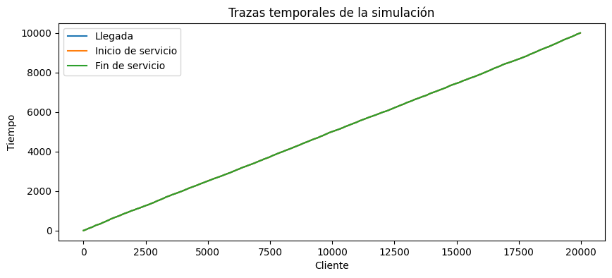
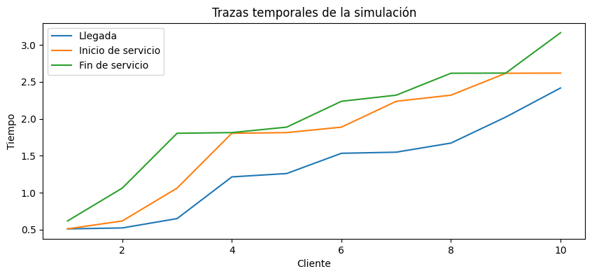
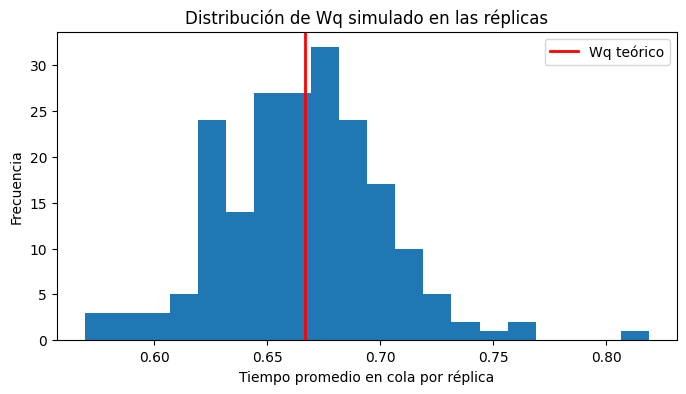

Complementaria Semana 13: Aplicación de metodologías de verificación y validación para simulaciones#
Este notebook introduce los fundamentos de verificación y validación (V&V) en modelos de simulación, con énfasis en la diferencia entre comprobar que un programa está correctamente implementado y evaluar si el modelo representa razonablemente el sistema real que se desea estudiar.
Para ello, se construirá y analizará una simulación sencilla de una cola de un solo servidor, aplicable a varios servidores. A partir de este ejemplo, se mostrarán procedimientos básicos de verificación computacional, validación estadística y validación conceptual.
El propósito no es solo obtener resultados numéricos, sino entender cómo confiar, con cautela y evidencia, en un modelo de simulación.
Introducción#
En simulación, construir un modelo no consiste únicamente en escribir código que corra sin errores. Un modelo puede ejecutarse correctamente y aun así representar mal el sistema real. Del mismo modo, un modelo conceptualmente razonable puede estar mal implementado en el programa.
Por eso, en simulación se distinguen dos procesos fundamentales:
Verificación#
La verificación responde a la pregunta:
En otras palabras, busca comprobar que el código hace lo que se pretendía hacer desde el modelo conceptual.
Validación#
La validación responde a la pregunta:
Aquí el interés no es solo computacional, sino también sustantivo: supuestos, estructura, datos de entrada, salidas y nivel de realismo.
Primero se implementará una simulación de una cola (M/M/1), luego se revisará si el código es consistente con el modelo planteado y finalmente se discutirá hasta qué punto ese modelo resulta creíble como representación de un sistema real.
Objetivos de aprendizaje#
Al finalizar este notebook, el estudiante debería poder:
Diferenciar entre verificación y validación en simulación.
Explicar la relación entre sistema real, modelo conceptual y modelo computacional.
Implementar una simulación básica de una cola de un servidor, o varios, en Python.
Aplicar pruebas elementales de verificación computacional.
Comparar resultados simulados con resultados teóricos del modelo.
Discutir la validez conceptual del modelo frente a situaciones reales.
Fundamentos de verificación y validación en simulación#
Diferencia entre verificación y validación#
Aunque suelen mencionarse juntas, verificación y validación no son lo mismo.
Verificación#
La verificación se concentra en el paso de modelo conceptual a modelo computacional. Su objetivo es revisar si la lógica programada corresponde a la lógica que se deseaba implementar.
Ejemplos de preguntas de verificación:
¿Se calculan correctamente los tiempos de espera?
¿El servicio inicia solo cuando el cliente ha llegado?
¿Se respeta la disciplina de cola (FIFO/FCFS)?
¿Se están generando adecuadamente las variables aleatorias?
Validación#
La validación se concentra en el paso de modelo a sistema real. Su objetivo es evaluar si los supuestos y resultados del modelo son razonables para representar el fenómeno bajo estudio.
Ejemplos de preguntas de validación:
¿Es razonable suponer llegadas Poisson?
¿Los tiempos de servicio realmente siguen una distribución exponencial?
¿Un solo servidor representa adecuadamente el sistema real?
¿Las métricas simuladas se parecen a las observadas en la práctica?
En términos simples:
Ejemplo aplicado#
Sistema representado#
Puede pensarse en una cola (M/M/1) como una ventanilla de atención, una caja, un punto de servicio o una estación de atención con:
llegadas aleatorias de clientes,
un solo servidor,
servicio en orden de llegada,
y una fila de espera.
Supuestos del modelo#
Los supuestos se declaran explícitamente porque son la base de cualquier proceso de validación.
Las llegadas siguen un proceso de Poisson con tasa \(\lambda\) (i.e., los tiempos entre llegadas son exponenciales con parámetro \(\lambda\)).
Los tiempos de servicio son exponenciales con parámetro \(\mu\).
Existe un solo servidor.
La cola tiene capacidad infinita.
La disciplina de atención es FIFO.
No hay abandono, prioridades ni interrupciones.
El sistema inicia vacío.
Variables de interés#
A partir de la simulación se calcularán, entre otras, las siguientes métricas:
tiempo de espera en cola,
tiempo en el sistema,
utilización del servidor,
longitud promedio aproximada de la cola.
Además, este ejemplo permite comparar resultados simulados con fórmulas teóricas del modelo (M/M/1), lo cual resulta muy útil para la validación estadística.
Implementación del modelo en Python#
Antes de escribir el código, conviene aclarar la lógica básica de la simulación.
Para cada cliente se generará:
un tiempo entre llegadas,
un tiempo de llegada acumulado,
un tiempo de servicio.
Luego, cliente por cliente, se calculará:
el inicio de servicio,
el fin de servicio,
el tiempo de espera en cola,
el tiempo total en el sistema.
Como se trata de una cola FIFO con un solo servidor, el inicio de servicio del cliente (i) será:
y por tanto:
A continuación se importan las librerías y se fija una semilla para hacer reproducibles los resultados.
import numpy as np
import pandas as pd
import matplotlib.pyplot as plt
from scipy import stats
import simpy, random, statistics
Este bloque importa las librerías principales del notebook. numpy se usará para generación aleatoria y cálculos numéricos, pandas para organizar resultados en tablas, matplotlib para visualización y scipy para algunas funciones estadísticas. simpy, random, statistics se usarán para la modelación de colas
Ahora se reutilizará un modelo introductorio de SimPy aprendido en complementarias anteriores y se definirán dos tipos de trazas, una por cliente y otra por tipo de evento registrado.
Se fija la semilla para revisar si el código produce consistentemente la misma salida bajo las mismas condiciones.
# Guía M/M/1 de la Complementaria introductoria de SimPy
def crear_monitor_mm():
return {
"arrivals": 0,
"departures": 0,
"busy_time": 0.0,
"waits": [],
"system_times": []
}
# Se reordena para incluir la traza en el modelo. Se inicia con la función de simulación y su variable de traza para utilizarla en cada función de la simulación
# Se agregan los parametros de trace y la cantidad máxima a trazar para verificar los primeros clientes, solo sirve si trace=True
def simular_mm(lam=2.0, mu=3.0, T=10_000, s=1, trace=0, max_trace = np.inf, seed = 42):
random.seed(seed) # fija la aleatoriedad para que el ejemplo sea reproducible
if lam >= mu:
print("ADVERTENCIA: λ >= μ. En M/M/1 el sistema no es estable; los tiempos pueden crecer sin cota.")
env = simpy.Environment()
servidor = simpy.Resource(env, capacity=s)
mon = crear_monitor_mm()
#Definimos una función para registrar eventos por cada evento si trace=1
eventos = [] # Creamos una lista para trazar cada uno de los eventos
def registro_1(tipo, tiempo, cliente=None):
if trace == 1 and len(eventos) < max_trace:
eventos.append({
"t": round(tiempo, 3),
"cliente": cliente,
"evento": tipo,
"en_servicio": servidor.count,
"en_cola": len(servidor.queue),
})
return eventos
#Definimos otra función para registrar la información de cada cliente si trace =2
def registro_2(cliente, interarribo, llegada, servicio, inicio_servicio, fin_servicio, espera_cola, tiempo_sistema):
if trace == 2 and len(eventos) < max_trace:
eventos.append({
"cliente": cliente,
"interarribo": interarribo,
"llegada": llegada,
"servicio": servicio,
"inicio_servicio": inicio_servicio,
"fin_servicio": fin_servicio,
"espera_cola": espera_cola,
"tiempo_sistema": tiempo_sistema
})
return eventos
def cliente_mm(env, mu, servidor, mon, cid, inter):
t_llegada = env.now
#Registro de evento llegada con función registro_1
registro_1("llega", env.now, cliente=cid)
with servidor.request() as req:
yield req
#Registro de evento inicio de servicio con función registro_1
inicio_servicio = env.now
registro_1("inicio_servicio", env.now, cliente=cid)
espera_cola = inicio_servicio - t_llegada
t_serv = random.expovariate(mu)
mon["busy_time"] += t_serv
yield env.timeout(t_serv)
fin_servicio = env.now
#Registro de evento fin de servicio con función registro_1 o actividad completa de cliente con función registro_2
registro_1("termina_servicio", env.now, cliente=cid)
registro_2(cid, inter, t_llegada, t_serv, inicio_servicio, fin_servicio, espera_cola, espera_cola + t_serv)
mon["waits"].append(espera_cola)
mon["system_times"].append(espera_cola + t_serv)
mon["departures"] += 1
def generador_llegadas_mm(env, lam, mu, servidor, mon):
#Se agrega un contador de clientes para asignar un ID a cada cliente que llega, esto es útil para el registro de eventos
i = 0
while True:
inter = random.expovariate(lam)
yield env.timeout(inter)
i += 1
mon["arrivals"] += 1
env.process(cliente_mm(env, mu, servidor, mon, i, inter))
env.process(generador_llegadas_mm(env, lam, mu, servidor, mon))
env.run(until=T)
# Se calculan las métricas de desempeño a partir del monitor
util_est = mon["busy_time"] / T if T > 0 else 0.0
Wq_est = statistics.mean(mon["waits"]) if mon["waits"] else 0.0
W_est = statistics.mean(mon["system_times"]) if mon["system_times"] else 0.0
lambda_eff = mon["departures"] / T if T > 0 else 0.0
L_est = lambda_eff * W_est
Lq_est = lambda_eff * Wq_est
# Teoría M/M/1 (solo si λ < μ)
if lam < mu:
rho = lam / mu
W_theo = 1.0 / (mu - lam)
Wq_theo = W_theo - 1.0 / mu
L_theo = lam * W_theo
Lq_theo = lam * Wq_theo
else:
rho = float("nan"); W_theo=float("nan"); Wq_theo=float("nan"); L_theo=float("nan"); Lq_theo=float("nan")
datos = {
"llegadas": mon["arrivals"],
"salidas": mon["departures"],
"utilizacion_est": round(util_est, 4),
"Wq_est": round(Wq_est, 4),
"W_est": round(W_est, 4),
"Lq_est": round(Lq_est, 4),
"L_est": round(L_est, 4),
"rho_teorico": round(rho, 4) if rho==rho else rho,
"W_theo": round(W_theo, 4) if W_theo==W_theo else W_theo,
"Wq_theo": round(Wq_theo, 4) if Wq_theo==Wq_theo else Wq_theo,
"L_theo": round(L_theo, 4) if L_theo==L_theo else L_theo,
"Lq_theo": round(Lq_theo, 4) if Lq_theo==Lq_theo else Lq_theo,
"trace": [eventos] if trace in [1, 2] else None
}
return datos
Esto se relaciona con verificación porque deja explícita la implementación del modelo conceptual: primero se generan llegadas y servicios, y luego se calcula la dinámica de atención respetando la lógica FIFO y el hecho de que el servidor solo puede atender a una persona a la vez.
A continuación se ejecutará una corrida base del modelo. Se escogerán parámetros que cumplan la condición de estabilidad:
Nota: Recordemos que si \(\lambda \geq \mu\), el sistema no es estable en el largo plazo y las medidas promedio tienden a crecer sin límite.
lam = 2.0 # tasa de llegadas por unidad de tiempo
mu = 3.0 # tasa de servicio por unidad de tiempo
max_trace = 15
resumen_evento = simular_mm(s = 1)
pd.DataFrame([resumen_evento]).round(4)
| llegadas | salidas | utilizacion_est | Wq_est | W_est | Lq_est | L_est | rho_teorico | W_theo | Wq_theo | L_theo | Lq_theo | trace | |
|---|---|---|---|---|---|---|---|---|---|---|---|---|---|
| 0 | 19973 | 19972 | 0.6644 | 0.6501 | 0.9827 | 1.2984 | 1.9627 | 0.6667 | 1.0 | 0.6667 | 2.0 | 1.3333 | None |
resumen_evento = simular_mm(s = 1, trace=1, max_trace=max_trace)
#Podemos usar la traza y calcular distintas métricas a partir de ella. Estas se pueden comparar con las calculadas directamente en el modelo
pd.DataFrame(resumen_evento["trace"][0]).round(4)
| t | cliente | evento | en_servicio | en_cola | |
|---|---|---|---|---|---|
| 0 | 0.510 | 1 | llega | 0 | 0 |
| 1 | 0.510 | 1 | inicio_servicio | 1 | 0 |
| 2 | 0.523 | 2 | llega | 1 | 0 |
| 3 | 0.617 | 1 | termina_servicio | 1 | 1 |
| 4 | 0.617 | 2 | inicio_servicio | 1 | 0 |
| 5 | 0.649 | 3 | llega | 1 | 0 |
| 6 | 1.062 | 2 | termina_servicio | 1 | 1 |
| 7 | 1.062 | 3 | inicio_servicio | 1 | 0 |
| 8 | 1.214 | 4 | llega | 1 | 0 |
| 9 | 1.259 | 5 | llega | 1 | 1 |
| 10 | 1.533 | 6 | llega | 1 | 2 |
| 11 | 1.548 | 7 | llega | 1 | 3 |
| 12 | 1.672 | 8 | llega | 1 | 4 |
| 13 | 1.804 | 3 | termina_servicio | 1 | 5 |
| 14 | 1.804 | 4 | inicio_servicio | 1 | 4 |
La tabla muestra la traza de los primeros eventos en orden consecutivo. Esta traza permite observar coherencia en la evolución del modelo. Note que el primer cliente llega e inicia servicio en el mismo instante, y un cliente que llega cuando hay otro en servicio debe esperar.
resumen_cliente = simular_mm(s = 1, trace=2, max_trace=max_trace)
pd.DataFrame(resumen_cliente["trace"][0]).round(4)
| cliente | interarribo | llegada | servicio | inicio_servicio | fin_servicio | espera_cola | tiempo_sistema | |
|---|---|---|---|---|---|---|---|---|
| 0 | 1 | 0.5100 | 0.5100 | 0.1072 | 0.5100 | 0.6172 | 0.0000 | 0.1072 |
| 1 | 2 | 0.0127 | 0.5227 | 0.4445 | 0.6172 | 1.0618 | 0.0945 | 0.5391 |
| 2 | 3 | 0.1263 | 0.6490 | 0.7424 | 1.0618 | 1.8042 | 0.4128 | 1.1552 |
| 3 | 4 | 0.5646 | 1.2136 | 0.0090 | 1.8042 | 1.8132 | 0.5906 | 0.5996 |
| 4 | 5 | 0.0455 | 1.2591 | 0.0739 | 1.8132 | 1.8871 | 0.5541 | 0.6280 |
| 5 | 6 | 0.2740 | 1.5331 | 0.3498 | 1.8871 | 2.2369 | 0.3540 | 0.7038 |
| 6 | 7 | 0.0151 | 1.5482 | 0.0830 | 2.2369 | 2.3199 | 0.6887 | 0.7717 |
| 7 | 8 | 0.1234 | 1.6716 | 0.2966 | 2.3199 | 2.6165 | 0.6483 | 0.9449 |
| 8 | 9 | 0.3520 | 2.0235 | 0.0022 | 2.6165 | 2.6187 | 0.5930 | 0.5952 |
| 9 | 10 | 0.3937 | 2.4172 | 0.5463 | 2.6187 | 3.1650 | 0.2015 | 0.7478 |
| 10 | 11 | 0.8289 | 3.2460 | 0.1386 | 3.2460 | 3.3847 | 0.0000 | 0.1386 |
| 11 | 12 | 0.5989 | 3.8449 | 1.0505 | 3.8449 | 4.8955 | 0.0000 | 1.0505 |
| 12 | 13 | 0.0845 | 3.9294 | 0.3085 | 4.8955 | 5.2040 | 0.9660 | 1.2746 |
| 13 | 14 | 0.2052 | 4.1346 | 0.4361 | 5.2040 | 5.6401 | 1.0694 | 1.5055 |
| 14 | 15 | 0.0487 | 4.1833 | 0.2561 | 5.6401 | 5.8962 | 1.4568 | 1.7129 |
Esta tabla muestra la traza de los primeros clientes. Allí se observa, para cada uno, cuándo llega, cuánto dura su servicio, cuándo empieza a ser atendido, cuándo termina y cuánto espera.
Esta traza es clave para la verificación, porque permite revisar si la simulación sigue la lógica esperada del sistema.
resumen_cliente_s2 = simular_mm(s = 2, trace=2, max_trace=max_trace)
pd.DataFrame(resumen_cliente_s2["trace"][0]).round(4)
| cliente | interarribo | llegada | servicio | inicio_servicio | fin_servicio | espera_cola | tiempo_sistema | |
|---|---|---|---|---|---|---|---|---|
| 0 | 1 | 0.5100 | 0.5100 | 0.1072 | 0.5100 | 0.6172 | 0.0000 | 0.1072 |
| 1 | 2 | 0.0127 | 0.5227 | 0.4445 | 0.5227 | 0.9672 | 0.0000 | 0.4445 |
| 2 | 3 | 0.1263 | 0.6490 | 0.7424 | 0.6490 | 1.3914 | 0.0000 | 0.7424 |
| 3 | 4 | 0.5646 | 1.2136 | 0.1827 | 1.2136 | 1.3963 | 0.0000 | 0.1827 |
| 4 | 6 | 0.0151 | 1.2742 | 0.0090 | 1.3963 | 1.4052 | 0.1221 | 0.1310 |
| 5 | 5 | 0.0455 | 1.2591 | 0.2346 | 1.3914 | 1.6261 | 0.1324 | 0.3670 |
| 6 | 8 | 0.1108 | 1.5084 | 0.0830 | 1.6261 | 1.7091 | 0.1177 | 0.2007 |
| 7 | 7 | 0.1234 | 1.3975 | 0.3498 | 1.4052 | 1.7551 | 0.0077 | 0.3575 |
| 8 | 9 | 0.3937 | 1.9020 | 0.5526 | 1.9020 | 2.4546 | 0.0000 | 0.5526 |
| 9 | 11 | 0.0033 | 2.3502 | 0.1386 | 2.4546 | 2.5933 | 0.1044 | 0.2430 |
| 10 | 10 | 0.4449 | 2.3469 | 0.5463 | 2.3469 | 2.8933 | 0.0000 | 0.5463 |
| 11 | 13 | 0.0845 | 3.0336 | 0.0324 | 3.0336 | 3.0660 | 0.0000 | 0.0324 |
| 12 | 14 | 0.2052 | 3.2388 | 0.6269 | 3.2388 | 3.8656 | 0.0000 | 0.6269 |
| 13 | 12 | 0.5989 | 2.9491 | 1.0505 | 2.9491 | 3.9996 | 0.0000 | 1.0505 |
| 14 | 16 | 0.4628 | 3.7525 | 0.2561 | 3.9996 | 4.2557 | 0.2471 | 0.5033 |
Si se modifican parámetros como el número de servidores se pueden observar cambios como en tiempos de espera y se verifica que el modelo sirva en general, no solo para los parámetros indicados inicialmente.
Antes de calcular indicadores agregados, conviene resumir algunas métricas básicas de la corrida a partir de las trazas. Esto servirá más adelante para comparar con resultados teóricos y para discutir validación estadística.
resumen_cliente = simular_mm(s = 1, trace=2)
df = pd.DataFrame(resumen_cliente["trace"][0])
resumen_base = {
"clientes_simulados": len(df),
"espera_promedio_cola": df["espera_cola"].mean(),
"tiempo_promedio_sistema": df["tiempo_sistema"].mean(),
"tiempo_promedio_servicio": df["servicio"].mean(),
"tiempo_total_simulado": df["fin_servicio"].iloc[-1],
"tiempo_ocupado": df["servicio"].sum(),
"utilizacion_aprox": df["servicio"].sum() / df["fin_servicio"].iloc[-1]
}
pd.Series(resumen_base)
clientes_simulados 19972.000000
espera_promedio_cola 0.650104
tiempo_promedio_sistema 0.982742
tiempo_promedio_servicio 0.332637
tiempo_total_simulado 9999.232488
tiempo_ocupado 6643.431351
utilizacion_aprox 0.664394
dtype: float64
Este resumen agrega medidas de desempeño de la corrida. En particular, la utilización aproximada del servidor se calcula como la fracción del tiempo total en la que el servidor estuvo ocupado.
Estas métricas todavía no validan el modelo, pero sí preparan el terreno para comparar lo simulado con lo esperado teóricamente y revisar si los resultados son razonables. Además, se pueden comparar directamente con los resultados obtenidos en la función simular_mm.
resumen_cliente
{'llegadas': 19973,
'salidas': 19972,
'utilizacion_est': 0.6644,
'Wq_est': 0.6501,
'W_est': 0.9827,
'Lq_est': 1.2984,
'L_est': 1.9627,
'rho_teorico': 0.6667,
'W_theo': 1.0,
'Wq_theo': 0.6667,
'L_theo': 2.0,
'Lq_theo': 1.3333,
'trace': [[{'cliente': 1,
'interarribo': 0.5100301436374005,
'llegada': 0.5100301436374005,
'servicio': 0.10720802135832186,
'inicio_servicio': 0.5100301436374005,
'fin_servicio': 0.6172381649957224,
'espera_cola': 0.0,
'tiempo_sistema': 0.10720802135832186},
{'cliente': 2,
'interarribo': 0.012664419521369446,
'llegada': 0.5226945631587699,
'servicio': 0.44453089093602766,
'inicio_servicio': 0.6172381649957224,
'fin_servicio': 1.06176905593175,
'espera_cola': 0.09454360183695243,
'tiempo_sistema': 0.53907449277298},
{'cliente': 3,
'interarribo': 0.12629309283505677,
'llegada': 0.6489876559938267,
'servicio': 0.7424293665171269,
'inicio_servicio': 1.06176905593175,
'fin_servicio': 1.804198422448877,
'espera_cola': 0.4127813999379234,
'tiempo_sistema': 1.1552107664550504},
{'cliente': 4,
'interarribo': 0.5645865043992964,
'llegada': 1.2135741603931232,
'servicio': 0.008964801226769254,
'inicio_servicio': 1.804198422448877,
'fin_servicio': 1.8131632236756463,
'espera_cola': 0.5906242620557538,
'tiempo_sistema': 0.599589063282523},
{'cliente': 5,
'interarribo': 0.04547620230328307,
'llegada': 1.2590503626964062,
'servicio': 0.07389722305456015,
'inicio_servicio': 1.8131632236756463,
'fin_servicio': 1.8870604467302066,
'espera_cola': 0.5541128609792401,
'tiempo_sistema': 0.6280100840338002},
{'cliente': 6,
'interarribo': 0.27402307969824546,
'llegada': 1.5330734423946517,
'servicio': 0.3498306670741908,
'inicio_servicio': 1.8870604467302066,
'fin_servicio': 2.2368911138043974,
'espera_cola': 0.35398700433555486,
'tiempo_sistema': 0.7038176714097457},
{'cliente': 7,
'interarribo': 0.015125088603679294,
'llegada': 1.548198530998331,
'servicio': 0.08300880632227454,
'inicio_servicio': 2.2368911138043974,
'fin_servicio': 2.319899920126672,
'espera_cola': 0.6886925828060664,
'tiempo_sistema': 0.771701389128341},
{'cliente': 8,
'interarribo': 0.12335834797991216,
'llegada': 1.6715568789782431,
'servicio': 0.2966029021005876,
'inicio_servicio': 2.319899920126672,
'fin_servicio': 2.6165028222272597,
'espera_cola': 0.648343041148429,
'tiempo_sistema': 0.9449459432490166},
{'cliente': 9,
'interarribo': 0.3519577639330767,
'llegada': 2.0235146429113198,
'servicio': 0.002173322851422256,
'inicio_servicio': 2.6165028222272597,
'fin_servicio': 2.618676145078682,
'espera_cola': 0.59298817931594,
'tiempo_sistema': 0.5951615021673622},
{'cliente': 10,
'interarribo': 0.3936646271212006,
'llegada': 2.4171792700325203,
'servicio': 0.5463219540301838,
'inicio_servicio': 2.618676145078682,
'fin_servicio': 3.1649980991088658,
'espera_cola': 0.20149687504616187,
'tiempo_sistema': 0.7478188290763457},
{'cliente': 11,
'interarribo': 0.8288690471115486,
'llegada': 3.246048317144069,
'servicio': 0.13863169549952697,
'inicio_servicio': 3.246048317144069,
'fin_servicio': 3.384680012643596,
'espera_cola': 0.0,
'tiempo_sistema': 0.13863169549952697},
{'cliente': 12,
'interarribo': 0.5988949704867426,
'llegada': 3.8449432876308114,
'servicio': 1.0505075494794347,
'inicio_servicio': 3.8449432876308114,
'fin_servicio': 4.895450837110246,
'espera_cola': 0.0,
'tiempo_sistema': 1.0505075494794347},
{'cliente': 13,
'interarribo': 0.0844931340436349,
'llegada': 3.9294364216744464,
'servicio': 0.3085498223186716,
'inicio_servicio': 4.895450837110246,
'fin_servicio': 5.204000659428918,
'espera_cola': 0.9660144154357999,
'tiempo_sistema': 1.2745642377544715},
{'cliente': 14,
'interarribo': 0.20518446494054168,
'llegada': 4.1346208866149885,
'servicio': 0.4361134768154223,
'inicio_servicio': 5.204000659428918,
'fin_servicio': 5.640114136244341,
'espera_cola': 1.0693797728139298,
'tiempo_sistema': 1.505493249629352},
{'cliente': 15,
'interarribo': 0.04866632566997869,
'llegada': 4.183287212284967,
'servicio': 0.25612080801005643,
'inicio_servicio': 5.640114136244341,
'fin_servicio': 5.896234944254397,
'espera_cola': 1.4568269239593734,
'tiempo_sistema': 1.7129477319694297},
{'cliente': 16,
'interarribo': 0.05085934249781582,
'llegada': 4.234146554782783,
'servicio': 1.2054050618966732,
'inicio_servicio': 5.896234944254397,
'fin_servicio': 7.1016400061510705,
'espera_cola': 1.6620883894716139,
'tiempo_sistema': 2.8674934513682873},
{'cliente': 17,
'interarribo': 0.9402768708165694,
'llegada': 5.174423425599352,
'servicio': 0.32123206837561585,
'inicio_servicio': 7.1016400061510705,
'fin_servicio': 7.422872074526686,
'espera_cola': 1.9272165805517183,
'tiempo_sistema': 2.2484486489273343},
{'cliente': 18,
'interarribo': 0.8228649697026292,
'llegada': 5.9972883953019815,
'servicio': 0.659459978447805,
'inicio_servicio': 7.422872074526686,
'fin_servicio': 8.082332052974492,
'espera_cola': 1.4255836792247045,
'tiempo_sistema': 2.0850436576725095},
{'cliente': 19,
'interarribo': 0.23783734142449234,
'llegada': 6.235125736726474,
'servicio': 0.015635846752295922,
'inicio_servicio': 8.082332052974492,
'fin_servicio': 8.097967899726788,
'espera_cola': 1.847206316248018,
'tiempo_sistema': 1.8628421630003138},
{'cliente': 20,
'interarribo': 0.4015263727432424,
'llegada': 6.636652109469716,
'servicio': 0.0862129901157218,
'inicio_servicio': 8.097967899726788,
'fin_servicio': 8.18418088984251,
'espera_cola': 1.4613157902570721,
'tiempo_sistema': 1.547528780372794},
{'cliente': 21,
'interarribo': 0.8842304922927511,
'llegada': 7.520882601762467,
'servicio': 0.11387621905989347,
'inicio_servicio': 8.18418088984251,
'fin_servicio': 8.298057108902404,
'espera_cola': 0.6632982880800435,
'tiempo_sistema': 0.777174507139937},
{'cliente': 22,
'interarribo': 0.4306079706744229,
'llegada': 7.95149057243689,
'servicio': 0.02771850748633005,
'inicio_servicio': 8.298057108902404,
'fin_servicio': 8.325775616388734,
'espera_cola': 0.34656653646551394,
'tiempo_sistema': 0.374285043951844},
{'cliente': 23,
'interarribo': 0.6096647861239156,
'llegada': 8.561155358560805,
'servicio': 0.03549127817049317,
'inicio_servicio': 8.561155358560805,
'fin_servicio': 8.596646636731299,
'espera_cola': 0.0,
'tiempo_sistema': 0.03549127817049317},
{'cliente': 24,
'interarribo': 0.1324979381960011,
'llegada': 8.693653296756807,
'servicio': 0.33657829184482746,
'inicio_servicio': 8.693653296756807,
'fin_servicio': 9.030231588601634,
'espera_cola': 0.0,
'tiempo_sistema': 0.33657829184482746},
{'cliente': 25,
'interarribo': 0.16284678998414703,
'llegada': 8.856500086740954,
'servicio': 0.15410758341748157,
'inicio_servicio': 9.030231588601634,
'fin_servicio': 9.184339172019115,
'espera_cola': 0.17373150186067932,
'tiempo_sistema': 0.32783908527816086},
{'cliente': 26,
'interarribo': 0.22693301496005772,
'llegada': 9.083433101701011,
'servicio': 0.10352644037999552,
'inicio_servicio': 9.184339172019115,
'fin_servicio': 9.287865612399111,
'espera_cola': 0.1009060703181035,
'tiempo_sistema': 0.20443251069809903},
{'cliente': 27,
'interarribo': 0.11754925822687064,
'llegada': 9.200982359927883,
'servicio': 0.3480748782352919,
'inicio_servicio': 9.287865612399111,
'fin_servicio': 9.635940490634402,
'espera_cola': 0.08688325247122819,
'tiempo_sistema': 0.43495813070652006},
{'cliente': 28,
'interarribo': 1.379576396672764,
'llegada': 10.580558756600647,
'servicio': 0.06256746178637151,
'inicio_servicio': 10.580558756600647,
'fin_servicio': 10.64312621838702,
'espera_cola': 0.0,
'tiempo_sistema': 0.06256746178637151},
{'cliente': 29,
'interarribo': 0.4696914139981339,
'llegada': 11.050250170598781,
'servicio': 0.05947073360264809,
'inicio_servicio': 11.050250170598781,
'fin_servicio': 11.10972090420143,
'espera_cola': 0.0,
'tiempo_sistema': 0.05947073360264809},
{'cliente': 30,
'interarribo': 0.6530522283561918,
'llegada': 11.703302398954973,
'servicio': 1.519535456147354,
'inicio_servicio': 11.703302398954973,
'fin_servicio': 13.222837855102327,
'espera_cola': 0.0,
'tiempo_sistema': 1.519535456147354},
{'cliente': 31,
'interarribo': 0.23857893334717417,
'llegada': 11.941881332302147,
'servicio': 0.6168555782158356,
'inicio_servicio': 13.222837855102327,
'fin_servicio': 13.839693433318162,
'espera_cola': 1.2809565228001798,
'tiempo_sistema': 1.8978121010160154},
{'cliente': 32,
'interarribo': 0.5108252902301198,
'llegada': 12.452706622532267,
'servicio': 0.08670975250355138,
'inicio_servicio': 13.839693433318162,
'fin_servicio': 13.926403185821714,
'espera_cola': 1.3869868107858956,
'tiempo_sistema': 1.473696563289447},
{'cliente': 33,
'interarribo': 0.40703603508373154,
'llegada': 12.859742657615998,
'servicio': 0.010875584940046465,
'inicio_servicio': 13.926403185821714,
'fin_servicio': 13.937278770761761,
'espera_cola': 1.0666605282057162,
'tiempo_sistema': 1.0775361131457626},
{'cliente': 34,
'interarribo': 0.5769793946676929,
'llegada': 13.436722052283692,
'servicio': 0.1263326811862229,
'inicio_servicio': 13.937278770761761,
'fin_servicio': 14.063611451947985,
'espera_cola': 0.5005567184780695,
'tiempo_sistema': 0.6268893996642924},
{'cliente': 35,
'interarribo': 0.7480544161221697,
'llegada': 14.184776468405861,
'servicio': 0.07898907128954963,
'inicio_servicio': 14.184776468405861,
'fin_servicio': 14.263765539695411,
'espera_cola': 0.0,
'tiempo_sistema': 0.07898907128954963},
{'cliente': 36,
'interarribo': 0.15581041654670402,
'llegada': 14.340586884952565,
'servicio': 0.6968142821706321,
'inicio_servicio': 14.340586884952565,
'fin_servicio': 15.037401167123196,
'espera_cola': 0.0,
'tiempo_sistema': 0.6968142821706321},
{'cliente': 37,
'interarribo': 1.431560652626729,
'llegada': 15.772147537579293,
'servicio': 0.35516105486432786,
'inicio_servicio': 15.772147537579293,
'fin_servicio': 16.127308592443622,
'espera_cola': 0.0,
'tiempo_sistema': 0.35516105486432786},
{'cliente': 38,
'interarribo': 0.1889331521209327,
'llegada': 15.961080689700227,
'servicio': 0.8199318877180435,
'inicio_servicio': 16.127308592443622,
'fin_servicio': 16.947240480161668,
'espera_cola': 0.16622790274339572,
'tiempo_sistema': 0.9861597904614392},
{'cliente': 39,
'interarribo': 0.25178591567379544,
'llegada': 16.21286660537402,
'servicio': 0.10160561640639713,
'inicio_servicio': 16.947240480161668,
'fin_servicio': 17.048846096568063,
'espera_cola': 0.7343738747876465,
'tiempo_sistema': 0.8359794911940436},
{'cliente': 40,
'interarribo': 0.30703109883680785,
'llegada': 16.51989770421083,
'servicio': 0.2928265473727732,
'inicio_servicio': 17.048846096568063,
'fin_servicio': 17.341672643940836,
'espera_cola': 0.5289483923572327,
'tiempo_sistema': 0.8217749397300058},
{'cliente': 41,
'interarribo': 0.1538608771402588,
'llegada': 16.673758581351088,
'servicio': 0.16994232149762112,
'inicio_servicio': 17.341672643940836,
'fin_servicio': 17.511614965438458,
'espera_cola': 0.6679140625897482,
'tiempo_sistema': 0.8378563840873693},
{'cliente': 42,
'interarribo': 0.14159774789884358,
'llegada': 16.81535632924993,
'servicio': 0.08253030555013899,
'inicio_servicio': 17.511614965438458,
'fin_servicio': 17.594145270988598,
'espera_cola': 0.6962586361885279,
'tiempo_sistema': 0.7787889417386669},
{'cliente': 43,
'interarribo': 0.41204739605535046,
'llegada': 17.22740372530528,
'servicio': 2.0022071441994926,
'inicio_servicio': 17.594145270988598,
'fin_servicio': 19.59635241518809,
'espera_cola': 0.3667415456833183,
'tiempo_sistema': 2.368948689882811},
{'cliente': 44,
'interarribo': 1.1405237681443938,
'llegada': 18.367927493449674,
'servicio': 0.18281940259454987,
'inicio_servicio': 19.59635241518809,
'fin_servicio': 19.77917181778264,
'espera_cola': 1.2284249217384158,
'tiempo_sistema': 1.4112443243329658},
{'cliente': 45,
'interarribo': 0.35619180363895836,
'llegada': 18.72411929708863,
'servicio': 0.021878447440497148,
'inicio_servicio': 19.77917181778264,
'fin_servicio': 19.801050265223136,
'espera_cola': 1.0550525206940087,
'tiempo_sistema': 1.0769309681345058},
{'cliente': 46,
'interarribo': 0.04765526659778029,
'llegada': 18.77177456368641,
'servicio': 0.16021698998280162,
'inicio_servicio': 19.801050265223136,
'fin_servicio': 19.961267255205936,
'espera_cola': 1.0292757015367258,
'tiempo_sistema': 1.1894926915195274},
{'cliente': 47,
'interarribo': 0.024131248802947106,
'llegada': 18.79590581248936,
'servicio': 1.8507586402060971,
'inicio_servicio': 19.961267255205936,
'fin_servicio': 21.812025895412035,
'espera_cola': 1.165361442716577,
'tiempo_sistema': 3.016120082922674},
{'cliente': 48,
'interarribo': 0.05806982919265749,
'llegada': 18.853975641682016,
'servicio': 0.6572325748104065,
'inicio_servicio': 21.812025895412035,
'fin_servicio': 22.469258470222442,
'espera_cola': 2.9580502537300184,
'tiempo_sistema': 3.615282828540425},
{'cliente': 49,
'interarribo': 0.49368669858228614,
'llegada': 19.347662340264304,
'servicio': 0.38159784049806195,
'inicio_servicio': 22.469258470222442,
'fin_servicio': 22.850856310720506,
'espera_cola': 3.1215961299581387,
'tiempo_sistema': 3.5031939704562007},
{'cliente': 50,
'interarribo': 0.7852994157652353,
'llegada': 20.132961756029538,
'servicio': 0.25665471525283584,
'inicio_servicio': 22.850856310720506,
'fin_servicio': 23.10751102597334,
'espera_cola': 2.717894554690968,
'tiempo_sistema': 2.974549269943804},
{'cliente': 51,
'interarribo': 0.3765699926752331,
'llegada': 20.50953174870477,
'servicio': 0.039426451365789296,
'inicio_servicio': 23.10751102597334,
'fin_servicio': 23.14693747733913,
'espera_cola': 2.5979792772685713,
'tiempo_sistema': 2.6374057286343606},
{'cliente': 52,
'interarribo': 1.7715828920754488,
'llegada': 22.28111464078022,
'servicio': 0.19017138286150195,
'inicio_servicio': 23.14693747733913,
'fin_servicio': 23.337108860200633,
'espera_cola': 0.8658228365589089,
'tiempo_sistema': 1.0559942194204108},
{'cliente': 53,
'interarribo': 0.005773718855937926,
'llegada': 22.28688835963616,
'servicio': 0.2015434662881138,
'inicio_servicio': 23.337108860200633,
'fin_servicio': 23.538652326488748,
'espera_cola': 1.0502205005644747,
'tiempo_sistema': 1.2517639668525884},
{'cliente': 54,
'interarribo': 0.6377734653365209,
'llegada': 22.92466182497268,
'servicio': 1.0250400972911495,
'inicio_servicio': 23.538652326488748,
'fin_servicio': 24.563692423779898,
'espera_cola': 0.6139905015160672,
'tiempo_sistema': 1.6390305988072167},
{'cliente': 55,
'interarribo': 0.15518555989431917,
'llegada': 23.079847384867,
'servicio': 0.10189847016754155,
'inicio_servicio': 24.563692423779898,
'fin_servicio': 24.66559089394744,
'espera_cola': 1.4838450389128965,
'tiempo_sistema': 1.5857435090804382},
{'cliente': 56,
'interarribo': 0.5121632427569328,
'llegada': 23.592010627623935,
'servicio': 0.06560274685252672,
'inicio_servicio': 24.66559089394744,
'fin_servicio': 24.731193640799965,
'espera_cola': 1.0735802663235035,
'tiempo_sistema': 1.13918301317603},
{'cliente': 57,
'interarribo': 1.0431442256928558,
'llegada': 24.63515485331679,
'servicio': 0.8125261916780774,
'inicio_servicio': 24.731193640799965,
'fin_servicio': 25.543719832478043,
'espera_cola': 0.09603878748317385,
'tiempo_sistema': 0.9085649791612512},
{'cliente': 58,
'interarribo': 0.347160047127477,
'llegada': 24.98231490044427,
'servicio': 0.11815189394055099,
'inicio_servicio': 25.543719832478043,
'fin_servicio': 25.661871726418592,
'espera_cola': 0.5614049320337742,
'tiempo_sistema': 0.6795568259743252},
{'cliente': 59,
'interarribo': 1.0221089022738525,
'llegada': 26.004423802718122,
'servicio': 0.31299051210620776,
'inicio_servicio': 26.004423802718122,
'fin_servicio': 26.31741431482433,
'espera_cola': 0.0,
'tiempo_sistema': 0.31299051210620776},
{'cliente': 60,
'interarribo': 0.5093687135082792,
'llegada': 26.513792516226403,
'servicio': 0.4792110435140173,
'inicio_servicio': 26.513792516226403,
'fin_servicio': 26.99300355974042,
'espera_cola': 0.0,
'tiempo_sistema': 0.4792110435140173},
{'cliente': 61,
'interarribo': 0.08293241837422348,
'llegada': 26.596724934600626,
'servicio': 0.2519251205253575,
'inicio_servicio': 26.99300355974042,
'fin_servicio': 27.244928680265776,
'espera_cola': 0.39627862513979295,
'tiempo_sistema': 0.6482037456651504},
{'cliente': 62,
'interarribo': 0.38758988265943745,
'llegada': 26.984314817260064,
'servicio': 0.00019068657430331413,
'inicio_servicio': 27.244928680265776,
'fin_servicio': 27.24511936684008,
'espera_cola': 0.26061386300571243,
'tiempo_sistema': 0.26080454958001575},
{'cliente': 63,
'interarribo': 0.7539519311018992,
'llegada': 27.738266748361962,
'servicio': 0.006556304489940269,
'inicio_servicio': 27.738266748361962,
'fin_servicio': 27.744823052851903,
'espera_cola': 0.0,
'tiempo_sistema': 0.006556304489940269},
{'cliente': 64,
'interarribo': 0.1958965415735829,
'llegada': 27.934163289935544,
'servicio': 0.7032229468595088,
'inicio_servicio': 27.934163289935544,
'fin_servicio': 28.637386236795052,
'espera_cola': 0.0,
'tiempo_sistema': 0.7032229468595088},
{'cliente': 65,
'interarribo': 1.323232664457711,
'llegada': 29.257395954393253,
'servicio': 0.12248914627401773,
'inicio_servicio': 29.257395954393253,
'fin_servicio': 29.37988510066727,
'espera_cola': 0.0,
'tiempo_sistema': 0.12248914627401773},
{'cliente': 66,
'interarribo': 0.8909011910637447,
'llegada': 30.148297145456997,
'servicio': 0.7012709731149346,
'inicio_servicio': 30.148297145456997,
'fin_servicio': 30.84956811857193,
'espera_cola': 0.0,
'tiempo_sistema': 0.7012709731149346},
{'cliente': 67,
'interarribo': 0.02983528323603866,
'llegada': 30.178132428693036,
'servicio': 0.029848541367468093,
'inicio_servicio': 30.84956811857193,
'fin_servicio': 30.879416659939398,
'espera_cola': 0.6714356898788942,
'tiempo_sistema': 0.7012842312463623},
{'cliente': 68,
'interarribo': 1.4682549788827888,
'llegada': 31.646387407575826,
'servicio': 0.02390809893132406,
'inicio_servicio': 31.646387407575826,
'fin_servicio': 31.67029550650715,
'espera_cola': 0.0,
'tiempo_sistema': 0.02390809893132406},
{'cliente': 69,
'interarribo': 0.3327567299201823,
'llegada': 31.979144137496007,
'servicio': 0.4839089489226123,
'inicio_servicio': 31.979144137496007,
'fin_servicio': 32.46305308641862,
'espera_cola': 0.0,
'tiempo_sistema': 0.4839089489226123},
{'cliente': 70,
'interarribo': 0.7148142652077943,
'llegada': 32.6939584027038,
'servicio': 0.2149650080453106,
'inicio_servicio': 32.6939584027038,
'fin_servicio': 32.90892341074911,
'espera_cola': 0.0,
'tiempo_sistema': 0.2149650080453106},
{'cliente': 71,
'interarribo': 0.06870744152487938,
'llegada': 32.76266584422868,
'servicio': 0.10265394297148689,
'inicio_servicio': 32.90892341074911,
'fin_servicio': 33.0115773537206,
'espera_cola': 0.14625756652043265,
'tiempo_sistema': 0.24891150949191954},
{'cliente': 72,
'interarribo': 0.39903566626906356,
'llegada': 33.16170151049774,
'servicio': 0.1833840351758149,
'inicio_servicio': 33.16170151049774,
'fin_servicio': 33.345085545673555,
'espera_cola': 0.0,
'tiempo_sistema': 0.1833840351758149},
{'cliente': 73,
'interarribo': 1.0295569421386608,
'llegada': 34.191258452636404,
'servicio': 0.25833323911403755,
'inicio_servicio': 34.191258452636404,
'fin_servicio': 34.44959169175044,
'espera_cola': 0.0,
'tiempo_sistema': 0.25833323911403755},
{'cliente': 74,
'interarribo': 0.11900056872196231,
'llegada': 34.31025902135837,
'servicio': 0.07486113888669714,
'inicio_servicio': 34.44959169175044,
'fin_servicio': 34.52445283063714,
'espera_cola': 0.1393326703920721,
'tiempo_sistema': 0.21419380927876924},
{'cliente': 75,
'interarribo': 0.6545390264502109,
'llegada': 34.96479804780858,
'servicio': 1.7762146451971323,
'inicio_servicio': 34.96479804780858,
'fin_servicio': 36.74101269300571,
'espera_cola': 0.0,
'tiempo_sistema': 1.7762146451971323},
{'cliente': 76,
'interarribo': 0.1867770793768045,
'llegada': 35.15157512718538,
'servicio': 0.08717125953623024,
'inicio_servicio': 36.74101269300571,
'fin_servicio': 36.828183952541934,
'espera_cola': 1.589437565820326,
'tiempo_sistema': 1.676608825356556},
{'cliente': 77,
'interarribo': 0.5247368892168977,
'llegada': 35.67631201640228,
'servicio': 0.08291336538560948,
'inicio_servicio': 36.828183952541934,
'fin_servicio': 36.91109731792754,
'espera_cola': 1.1518719361396563,
'tiempo_sistema': 1.2347853015252659},
{'cliente': 78,
'interarribo': 0.28821576510231645,
'llegada': 35.96452778150459,
'servicio': 0.02454636593150703,
'inicio_servicio': 36.91109731792754,
'fin_servicio': 36.93564368385905,
'espera_cola': 0.9465695364229489,
'tiempo_sistema': 0.971115902354456},
{'cliente': 79,
'interarribo': 0.36446577702558425,
'llegada': 36.32899355853018,
'servicio': 0.33241256362207694,
'inicio_servicio': 36.93564368385905,
'fin_servicio': 37.26805624748113,
'espera_cola': 0.6066501253288692,
'tiempo_sistema': 0.9390626889509461},
{'cliente': 80,
'interarribo': 0.06448757738242777,
'llegada': 36.39348113591261,
'servicio': 0.7861031264269953,
'inicio_servicio': 37.26805624748113,
'fin_servicio': 38.05415937390812,
'espera_cola': 0.8745751115685181,
'tiempo_sistema': 1.6606782379955134},
{'cliente': 81,
'interarribo': 0.1272508965021967,
'llegada': 36.520732032414806,
'servicio': 0.02449766654324004,
'inicio_servicio': 38.05415937390812,
'fin_servicio': 38.07865704045136,
'espera_cola': 1.533427341493315,
'tiempo_sistema': 1.5579250080365552},
{'cliente': 82,
'interarribo': 0.20630948967762347,
'llegada': 36.72704152209243,
'servicio': 0.09060493505435346,
'inicio_servicio': 38.07865704045136,
'fin_servicio': 38.16926197550571,
'espera_cola': 1.3516155183589333,
'tiempo_sistema': 1.4422204534132868},
{'cliente': 83,
'interarribo': 0.4437407635772085,
'llegada': 37.17078228566964,
'servicio': 0.3685232569339924,
'inicio_servicio': 38.16926197550571,
'fin_servicio': 38.5377852324397,
'espera_cola': 0.9984796898360742,
'tiempo_sistema': 1.3670029467700666},
{'cliente': 84,
'interarribo': 0.12999570044540873,
'llegada': 37.300777986115044,
'servicio': 0.2821329385804375,
'inicio_servicio': 38.5377852324397,
'fin_servicio': 38.81991817102014,
'espera_cola': 1.2370072463246586,
'tiempo_sistema': 1.519140184905096},
{'cliente': 85,
'interarribo': 0.9817559788710726,
'llegada': 38.282533964986115,
'servicio': 0.21331022889967874,
'inicio_servicio': 38.81991817102014,
'fin_servicio': 39.03322839991982,
'espera_cola': 0.5373842060340266,
'tiempo_sistema': 0.7506944349337054},
{'cliente': 86,
'interarribo': 0.12054990679457081,
'llegada': 38.40308387178069,
'servicio': 0.5117828986973028,
'inicio_servicio': 39.03322839991982,
'fin_servicio': 39.545011298617126,
'espera_cola': 0.6301445281391338,
'tiempo_sistema': 1.1419274268364366},
{'cliente': 87,
'interarribo': 0.07096145080018876,
'llegada': 38.47404532258088,
'servicio': 0.5492145097861593,
'inicio_servicio': 39.545011298617126,
'fin_servicio': 40.09422580840329,
'espera_cola': 1.0709659760362484,
'tiempo_sistema': 1.6201804858224076},
{'cliente': 88,
'interarribo': 1.3706554318766393,
'llegada': 39.84470075445752,
'servicio': 0.18363877616224722,
'inicio_servicio': 40.09422580840329,
'fin_servicio': 40.277864584565535,
'espera_cola': 0.24952505394576718,
'tiempo_sistema': 0.4331638301080144},
{'cliente': 89,
'interarribo': 0.10561361326213092,
'llegada': 39.95031436771965,
'servicio': 0.20976004579400456,
'inicio_servicio': 40.277864584565535,
'fin_servicio': 40.48762463035954,
'espera_cola': 0.3275502168458857,
'tiempo_sistema': 0.5373102626398902},
{'cliente': 90,
'interarribo': 0.05097805540667041,
'llegada': 40.00129242312632,
'servicio': 0.37297018449659336,
'inicio_servicio': 40.48762463035954,
'fin_servicio': 40.860594814856135,
'espera_cola': 0.48633220723321813,
'tiempo_sistema': 0.8593023917298115},
{'cliente': 91,
'interarribo': 0.2819824002033713,
'llegada': 40.28327482332969,
'servicio': 1.3818486490350015,
'inicio_servicio': 40.860594814856135,
'fin_servicio': 42.242443463891135,
'espera_cola': 0.5773199915264442,
'tiempo_sistema': 1.9591686405614457},
{'cliente': 92,
'interarribo': 0.65295819229196,
'llegada': 40.93623301562165,
'servicio': 0.09529737353296229,
'inicio_servicio': 42.242443463891135,
'fin_servicio': 42.3377408374241,
'espera_cola': 1.306210448269482,
'tiempo_sistema': 1.4015078218024444},
{'cliente': 93,
'interarribo': 0.051802069025067975,
'llegada': 40.98803508464672,
'servicio': 0.07032632541196872,
'inicio_servicio': 42.3377408374241,
'fin_servicio': 42.40806716283607,
'espera_cola': 1.349705752777382,
'tiempo_sistema': 1.4200320781893507},
{'cliente': 94,
'interarribo': 0.2576019991890832,
'llegada': 41.2456370838358,
'servicio': 0.19843978352554756,
'inicio_servicio': 42.40806716283607,
'fin_servicio': 42.60650694636162,
'espera_cola': 1.1624300790002664,
'tiempo_sistema': 1.360869862525814},
{'cliente': 95,
'interarribo': 0.2072296716699097,
'llegada': 41.45286675550571,
'servicio': 0.10882849109892713,
'inicio_servicio': 42.60650694636162,
'fin_servicio': 42.715335437460546,
'espera_cola': 1.15364019085591,
'tiempo_sistema': 1.2624686819548372},
{'cliente': 96,
'interarribo': 0.989065739892874,
'llegada': 42.44193249539858,
'servicio': 0.0958080120851504,
'inicio_servicio': 42.715335437460546,
'fin_servicio': 42.811143449545696,
'espera_cola': 0.27340294206196347,
'tiempo_sistema': 0.36921095414711386},
{'cliente': 97,
'interarribo': 0.27398832795018563,
'llegada': 42.71592082334877,
'servicio': 0.1951415991348636,
'inicio_servicio': 42.811143449545696,
'fin_servicio': 43.00628504868056,
'espera_cola': 0.09522262619692867,
'tiempo_sistema': 0.2903642253317923},
{'cliente': 98,
'interarribo': 1.283702580534208,
'llegada': 43.99962340388298,
'servicio': 0.26641029140105493,
'inicio_servicio': 43.99962340388298,
'fin_servicio': 44.26603369528404,
'espera_cola': 0.0,
'tiempo_sistema': 0.26641029140105493},
{'cliente': 99,
'interarribo': 0.987898025060322,
'llegada': 44.9875214289433,
'servicio': 2.413231195741706,
'inicio_servicio': 44.9875214289433,
'fin_servicio': 47.40075262468501,
'espera_cola': 0.0,
'tiempo_sistema': 2.413231195741706},
{'cliente': 100,
'interarribo': 0.025956390233075957,
'llegada': 45.01347781917638,
'servicio': 0.8695539178017831,
'inicio_servicio': 47.40075262468501,
'fin_servicio': 48.27030654248679,
'espera_cola': 2.387274805508632,
'tiempo_sistema': 3.256828723310415},
{'cliente': 101,
'interarribo': 0.904028533506228,
'llegada': 45.91750635268261,
'servicio': 0.06063166017175026,
'inicio_servicio': 48.27030654248679,
'fin_servicio': 48.330938202658544,
'espera_cola': 2.352800189804185,
'tiempo_sistema': 2.413431849975935},
{'cliente': 102,
'interarribo': 1.7368236745173216,
'llegada': 47.65433002719993,
'servicio': 0.2216113525475455,
'inicio_servicio': 48.330938202658544,
'fin_servicio': 48.55254955520609,
'espera_cola': 0.6766081754586111,
'tiempo_sistema': 0.8982195280061566},
{'cliente': 103,
'interarribo': 0.9442312328428689,
'llegada': 48.5985612600428,
'servicio': 0.1708536498296193,
'inicio_servicio': 48.5985612600428,
'fin_servicio': 48.76941490987242,
'espera_cola': 0.0,
'tiempo_sistema': 0.1708536498296193},
{'cliente': 104,
'interarribo': 0.12023851796630004,
'llegada': 48.7187997780091,
'servicio': 1.4068365279701347,
'inicio_servicio': 48.76941490987242,
'fin_servicio': 50.17625143784255,
'espera_cola': 0.05061513186331723,
'tiempo_sistema': 1.457451659833452},
{'cliente': 105,
'interarribo': 0.030212377130862708,
'llegada': 48.749012155139965,
'servicio': 0.1833086621815393,
'inicio_servicio': 50.17625143784255,
'fin_servicio': 50.35956010002409,
'espera_cola': 1.4272392827025868,
'tiempo_sistema': 1.610547944884126},
{'cliente': 106,
'interarribo': 0.23819045565693328,
'llegada': 48.9872026107969,
'servicio': 1.7955478929412758,
'inicio_servicio': 50.35956010002409,
'fin_servicio': 52.15510799296537,
'espera_cola': 1.3723574892271913,
'tiempo_sistema': 3.167905382168467},
{'cliente': 107,
'interarribo': 0.15408054378037903,
'llegada': 49.14128315457728,
'servicio': 0.42243234727858353,
'inicio_servicio': 52.15510799296537,
'fin_servicio': 52.57754034024396,
'espera_cola': 3.0138248383880892,
'tiempo_sistema': 3.4362571856666726},
{'cliente': 108,
'interarribo': 0.7664018928008184,
'llegada': 49.9076850473781,
'servicio': 0.2885169270805448,
'inicio_servicio': 52.57754034024396,
'fin_servicio': 52.8660572673245,
'espera_cola': 2.6698552928658543,
'tiempo_sistema': 2.958372219946399},
{'cliente': 109,
'interarribo': 0.3034924186763047,
'llegada': 50.21117746605441,
'servicio': 0.2604374631975331,
'inicio_servicio': 52.8660572673245,
'fin_servicio': 53.12649473052203,
'espera_cola': 2.6548798012700914,
'tiempo_sistema': 2.9153172644676246},
{'cliente': 110,
'interarribo': 1.5769847894991238,
'llegada': 51.78816225555353,
'servicio': 0.45940973785015427,
'inicio_servicio': 53.12649473052203,
'fin_servicio': 53.585904468372185,
'espera_cola': 1.338332474968503,
'tiempo_sistema': 1.7977422128186573},
{'cliente': 111,
'interarribo': 0.405704529252821,
'llegada': 52.19386678480635,
'servicio': 0.019621424867120627,
'inicio_servicio': 53.585904468372185,
'fin_servicio': 53.6055258932393,
'espera_cola': 1.3920376835658317,
'tiempo_sistema': 1.4116591084329524},
{'cliente': 112,
'interarribo': 0.0840891185321069,
'llegada': 52.27795590333846,
'servicio': 0.29249900654330996,
'inicio_servicio': 53.6055258932393,
'fin_servicio': 53.89802489978261,
'espera_cola': 1.3275699899008444,
'tiempo_sistema': 1.6200689964441544},
{'cliente': 113,
'interarribo': 0.17599143127649727,
'llegada': 52.45394733461496,
'servicio': 0.23295475259522846,
'inicio_servicio': 53.89802489978261,
'fin_servicio': 54.13097965237784,
'espera_cola': 1.4440775651676532,
'tiempo_sistema': 1.6770323177628816},
{'cliente': 114,
'interarribo': 1.7322182132489907,
'llegada': 54.18616554786395,
'servicio': 0.05710059060008899,
'inicio_servicio': 54.18616554786395,
'fin_servicio': 54.24326613846404,
'espera_cola': 0.0,
'tiempo_sistema': 0.05710059060008899},
{'cliente': 115,
'interarribo': 0.9577095045441547,
'llegada': 55.143875052408106,
'servicio': 0.02783425804982061,
'inicio_servicio': 55.143875052408106,
'fin_servicio': 55.17170931045793,
'espera_cola': 0.0,
'tiempo_sistema': 0.02783425804982061},
{'cliente': 116,
'interarribo': 1.6192702475896836,
'llegada': 56.76314529999779,
'servicio': 0.3013182994084706,
'inicio_servicio': 56.76314529999779,
'fin_servicio': 57.06446359940626,
'espera_cola': 0.0,
'tiempo_sistema': 0.3013182994084706},
{'cliente': 117,
'interarribo': 0.10278995022311554,
'llegada': 56.8659352502209,
'servicio': 0.08938200336461988,
'inicio_servicio': 57.06446359940626,
'fin_servicio': 57.15384560277088,
'espera_cola': 0.19852834918535933,
'tiempo_sistema': 0.2879103525499792},
{'cliente': 118,
'interarribo': 0.5622921608502265,
'llegada': 57.42822741107113,
'servicio': 0.736630092301677,
'inicio_servicio': 57.42822741107113,
'fin_servicio': 58.1648575033728,
'espera_cola': 0.0,
'tiempo_sistema': 0.736630092301677},
{'cliente': 119,
'interarribo': 0.06385226601134461,
'llegada': 57.49207967708247,
'servicio': 0.1811305715657583,
'inicio_servicio': 58.1648575033728,
'fin_servicio': 58.34598807493856,
'espera_cola': 0.6727778262903286,
'tiempo_sistema': 0.8539083978560869},
{'cliente': 120,
'interarribo': 0.14132427945719345,
'llegada': 57.63340395653967,
'servicio': 0.29209418757296185,
'inicio_servicio': 58.34598807493856,
'fin_servicio': 58.638082262511524,
'espera_cola': 0.7125841183988939,
'tiempo_sistema': 1.0046783059718558},
{'cliente': 121,
'interarribo': 0.45134082045169216,
'llegada': 58.08474477699136,
'servicio': 0.9096196926216509,
'inicio_servicio': 58.638082262511524,
'fin_servicio': 59.54770195513318,
'espera_cola': 0.5533374855201671,
'tiempo_sistema': 1.462957178141818},
{'cliente': 122,
'interarribo': 0.48297887249252625,
'llegada': 58.56772364948388,
'servicio': 0.09090310966745162,
'inicio_servicio': 59.54770195513318,
'fin_servicio': 59.63860506480063,
'espera_cola': 0.979978305649297,
'tiempo_sistema': 1.0708814153167485},
{'cliente': 123,
'interarribo': 0.3698916844095507,
'llegada': 58.93761533389343,
'servicio': 0.16794219519854503,
'inicio_servicio': 59.63860506480063,
'fin_servicio': 59.80654725999917,
'espera_cola': 0.700989730907196,
'tiempo_sistema': 0.868931926105741},
{'cliente': 124,
'interarribo': 0.1142408867911881,
'llegada': 59.05185622068462,
'servicio': 0.11889025741046,
'inicio_servicio': 59.80654725999917,
'fin_servicio': 59.925437517409634,
'espera_cola': 0.754691039314551,
'tiempo_sistema': 0.873581296725011},
{'cliente': 125,
'interarribo': 0.6297283119340407,
'llegada': 59.68158453261866,
'servicio': 0.12668548459937115,
'inicio_servicio': 59.925437517409634,
'fin_servicio': 60.052123002009004,
'espera_cola': 0.24385298479097628,
'tiempo_sistema': 0.3705384693903474},
{'cliente': 126,
'interarribo': 0.5568988370538538,
'llegada': 60.23848336967251,
'servicio': 0.025102990069910572,
'inicio_servicio': 60.23848336967251,
'fin_servicio': 60.26358635974242,
'espera_cola': 0.0,
'tiempo_sistema': 0.025102990069910572},
{'cliente': 127,
'interarribo': 0.6968901402426498,
'llegada': 60.93537350991516,
'servicio': 2.157456509198329,
'inicio_servicio': 60.93537350991516,
'fin_servicio': 63.092830019113485,
'espera_cola': 0.0,
'tiempo_sistema': 2.157456509198329},
{'cliente': 128,
'interarribo': 0.3065081054233497,
'llegada': 61.24188161533851,
'servicio': 0.025361001836618994,
'inicio_servicio': 63.092830019113485,
'fin_servicio': 63.11819102095011,
'espera_cola': 1.8509484037749786,
'tiempo_sistema': 1.8763094056115976},
{'cliente': 129,
'interarribo': 2.772934166996472,
'llegada': 64.01481578233498,
'servicio': 0.10271916336039172,
'inicio_servicio': 64.01481578233498,
'fin_servicio': 64.11753494569537,
'espera_cola': 0.0,
'tiempo_sistema': 0.10271916336039172},
{'cliente': 130,
'interarribo': 0.11986156318422772,
'llegada': 64.13467734551921,
'servicio': 0.7091636797255508,
'inicio_servicio': 64.13467734551921,
'fin_servicio': 64.84384102524476,
'espera_cola': 0.0,
'tiempo_sistema': 0.7091636797255508},
{'cliente': 131,
'interarribo': 1.3534707429299007,
'llegada': 65.48814808844911,
'servicio': 0.15376169613334428,
'inicio_servicio': 65.48814808844911,
'fin_servicio': 65.64190978458245,
'espera_cola': 0.0,
'tiempo_sistema': 0.15376169613334428},
{'cliente': 132,
'interarribo': 1.0571003200630449,
'llegada': 66.54524840851215,
'servicio': 0.5980774172918099,
'inicio_servicio': 66.54524840851215,
'fin_servicio': 67.14332582580396,
'espera_cola': 0.0,
'tiempo_sistema': 0.5980774172918099},
{'cliente': 133,
'interarribo': 0.08583731788658489,
'llegada': 66.63108572639874,
'servicio': 0.3153065944424797,
'inicio_servicio': 67.14332582580396,
'fin_servicio': 67.45863242024643,
'espera_cola': 0.5122400994052185,
'tiempo_sistema': 0.8275466938476983},
{'cliente': 134,
'interarribo': 0.6079213621029719,
'llegada': 67.23900708850171,
'servicio': 0.3537493534479967,
'inicio_servicio': 67.45863242024643,
'fin_servicio': 67.81238177369443,
'espera_cola': 0.21962533174472298,
'tiempo_sistema': 0.5733746851927197},
{'cliente': 135,
'interarribo': 2.180448273108575,
'llegada': 69.41945536161029,
'servicio': 0.566279444151561,
'inicio_servicio': 69.41945536161029,
'fin_servicio': 69.98573480576185,
'espera_cola': 0.0,
'tiempo_sistema': 0.566279444151561},
{'cliente': 136,
'interarribo': 0.003926934095606314,
'llegada': 69.42338229570589,
'servicio': 0.9319115320173519,
'inicio_servicio': 69.98573480576185,
'fin_servicio': 70.9176463377792,
'espera_cola': 0.562352510055959,
'tiempo_sistema': 1.4942640420733109},
{'cliente': 137,
'interarribo': 0.1778939203370181,
'llegada': 69.6012762160429,
'servicio': 0.42149130996164114,
'inicio_servicio': 70.9176463377792,
'fin_servicio': 71.33913764774084,
'espera_cola': 1.3163701217362984,
'tiempo_sistema': 1.7378614316979395},
{'cliente': 138,
'interarribo': 0.5444132356228868,
'llegada': 70.14568945166579,
'servicio': 0.07588344400686974,
'inicio_servicio': 71.33913764774084,
'fin_servicio': 71.41502109174772,
'espera_cola': 1.1934481960750531,
'tiempo_sistema': 1.2693316400819228},
{'cliente': 139,
'interarribo': 0.07210329337082978,
'llegada': 70.21779274503662,
'servicio': 0.10216776256923228,
'inicio_servicio': 71.41502109174772,
'fin_servicio': 71.51718885431696,
'espera_cola': 1.1972283467110998,
'tiempo_sistema': 1.2993961092803321},
{'cliente': 140,
'interarribo': 0.06132606233789668,
'llegada': 70.27911880737452,
'servicio': 0.22348998919041063,
'inicio_servicio': 71.51718885431696,
'fin_servicio': 71.74067884350737,
'espera_cola': 1.2380700469424397,
'tiempo_sistema': 1.4615600361328505},
{'cliente': 141,
'interarribo': 0.0566044937528093,
'llegada': 70.33572330112733,
'servicio': 0.7858088955057014,
'inicio_servicio': 71.74067884350737,
'fin_servicio': 72.52648773901306,
'espera_cola': 1.404955542380037,
'tiempo_sistema': 2.1907644378857385},
{'cliente': 142,
'interarribo': 0.4028485623732637,
'llegada': 70.7385718635006,
'servicio': 0.03227988778406532,
'inicio_servicio': 72.52648773901306,
'fin_servicio': 72.55876762679713,
'espera_cola': 1.7879158755124678,
'tiempo_sistema': 1.820195763296533},
{'cliente': 143,
'interarribo': 0.15896632941657668,
'llegada': 70.89753819291717,
'servicio': 0.1836371278026383,
'inicio_servicio': 72.55876762679713,
'fin_servicio': 72.74240475459978,
'espera_cola': 1.6612294338799671,
'tiempo_sistema': 1.8448665616826054},
{'cliente': 144,
'interarribo': 0.46421939460564443,
'llegada': 71.36175758752282,
'servicio': 0.10796795470339049,
'inicio_servicio': 72.74240475459978,
'fin_servicio': 72.85037270930317,
'espera_cola': 1.3806471670769582,
'tiempo_sistema': 1.4886151217803487},
{'cliente': 145,
'interarribo': 0.5028861589576057,
'llegada': 71.86464374648043,
'servicio': 0.33788827588911335,
'inicio_servicio': 72.85037270930317,
'fin_servicio': 73.18826098519229,
'espera_cola': 0.9857289628227477,
'tiempo_sistema': 1.323617238711861},
{'cliente': 146,
'interarribo': 0.9357381832000791,
'llegada': 72.8003819296805,
'servicio': 0.10125027873710823,
'inicio_servicio': 73.18826098519229,
'fin_servicio': 73.2895112639294,
'espera_cola': 0.3878790555117888,
'tiempo_sistema': 0.48912933424889704},
{'cliente': 147,
'interarribo': 0.0017759949708287843,
'llegada': 72.80215792465133,
'servicio': 0.4506063843206298,
'inicio_servicio': 73.2895112639294,
'fin_servicio': 73.74011764825003,
'espera_cola': 0.4873533392780729,
'tiempo_sistema': 0.9379597235987027},
{'cliente': 148,
'interarribo': 0.7372770177698831,
'llegada': 73.53943494242121,
'servicio': 0.18602303096709952,
'inicio_servicio': 73.74011764825003,
'fin_servicio': 73.92614067921713,
'espera_cola': 0.2006827058288252,
'tiempo_sistema': 0.3867057367959247},
{'cliente': 149,
'interarribo': 0.40112447758862135,
'llegada': 73.94055942000983,
'servicio': 0.02607506957968402,
'inicio_servicio': 73.94055942000983,
'fin_servicio': 73.96663448958952,
'espera_cola': 0.0,
'tiempo_sistema': 0.02607506957968402},
{'cliente': 150,
'interarribo': 0.004858377369308059,
'llegada': 73.94541779737914,
'servicio': 0.7808877726427913,
'inicio_servicio': 73.96663448958952,
'fin_servicio': 74.74752226223231,
'espera_cola': 0.021216692210387578,
'tiempo_sistema': 0.8021044648531789},
{'cliente': 151,
'interarribo': 1.0732455511672634,
'llegada': 75.0186633485464,
'servicio': 0.5997861291098684,
'inicio_servicio': 75.0186633485464,
'fin_servicio': 75.61844947765627,
'espera_cola': 0.0,
'tiempo_sistema': 0.5997861291098684},
{'cliente': 152,
'interarribo': 0.3943780206085523,
'llegada': 75.41304136915495,
'servicio': 0.053426278389624486,
'inicio_servicio': 75.61844947765627,
'fin_servicio': 75.67187575604589,
'espera_cola': 0.20540810850131663,
'tiempo_sistema': 0.2588343868909411},
{'cliente': 153,
'interarribo': 0.4367468243508802,
'llegada': 75.84978819350583,
'servicio': 0.12284757704059783,
'inicio_servicio': 75.84978819350583,
'fin_servicio': 75.97263577054643,
'espera_cola': 0.0,
'tiempo_sistema': 0.12284757704059783},
{'cliente': 154,
'interarribo': 0.068165092385736,
'llegada': 75.91795328589157,
'servicio': 0.5300783328983544,
'inicio_servicio': 75.97263577054643,
'fin_servicio': 76.50271410344479,
'espera_cola': 0.054682484654861696,
'tiempo_sistema': 0.5847608175532161},
{'cliente': 155,
'interarribo': 1.1462257495791135,
'llegada': 77.06417903547069,
'servicio': 0.7639629557947821,
'inicio_servicio': 77.06417903547069,
'fin_servicio': 77.82814199126547,
'espera_cola': 0.0,
'tiempo_sistema': 0.7639629557947821},
{'cliente': 156,
'interarribo': 0.98557196695473,
'llegada': 78.04975100242542,
'servicio': 0.09568508485790854,
'inicio_servicio': 78.04975100242542,
'fin_servicio': 78.14543608728333,
'espera_cola': 0.0,
'tiempo_sistema': 0.09568508485790854},
{'cliente': 157,
'interarribo': 0.11790961109449874,
'llegada': 78.16766061351993,
'servicio': 0.5048854148034823,
'inicio_servicio': 78.16766061351993,
'fin_servicio': 78.67254602832341,
'espera_cola': 0.0,
'tiempo_sistema': 0.5048854148034823},
{'cliente': 158,
'interarribo': 0.05423468360632643,
'llegada': 78.22189529712625,
'servicio': 0.17383716598296825,
'inicio_servicio': 78.67254602832341,
'fin_servicio': 78.84638319430638,
'espera_cola': 0.4506507311971575,
'tiempo_sistema': 0.6244878971801258},
{'cliente': 159,
'interarribo': 1.0776634910093357,
'llegada': 79.29955878813558,
'servicio': 0.055963399197232255,
'inicio_servicio': 79.29955878813558,
'fin_servicio': 79.35552218733282,
'espera_cola': 0.0,
'tiempo_sistema': 0.055963399197232255},
{'cliente': 160,
'interarribo': 0.48466317971453404,
'llegada': 79.78422196785012,
'servicio': 0.6665213296534284,
'inicio_servicio': 79.78422196785012,
'fin_servicio': 80.45074329750355,
'espera_cola': 0.0,
'tiempo_sistema': 0.6665213296534284},
{'cliente': 161,
'interarribo': 1.3287808520560427,
'llegada': 81.11300281990616,
'servicio': 0.5549337205867836,
'inicio_servicio': 81.11300281990616,
'fin_servicio': 81.66793654049295,
'espera_cola': 0.0,
'tiempo_sistema': 0.5549337205867836},
{'cliente': 162,
'interarribo': 1.8691616074657853,
'llegada': 82.98216442737194,
'servicio': 0.008366238661612383,
'inicio_servicio': 82.98216442737194,
'fin_servicio': 82.99053066603355,
'espera_cola': 0.0,
'tiempo_sistema': 0.008366238661612383},
{'cliente': 163,
'interarribo': 1.0660677173326556,
'llegada': 84.0482321447046,
'servicio': 0.13458159687428065,
'inicio_servicio': 84.0482321447046,
'fin_servicio': 84.18281374157888,
'espera_cola': 0.0,
'tiempo_sistema': 0.13458159687428065},
{'cliente': 164,
'interarribo': 0.6669733077653868,
'llegada': 84.71520545246999,
'servicio': 0.5402255081325638,
'inicio_servicio': 84.71520545246999,
'fin_servicio': 85.25543096060255,
'espera_cola': 0.0,
'tiempo_sistema': 0.5402255081325638},
{'cliente': 165,
'interarribo': 1.3354920049427121,
'llegada': 86.0506974574127,
'servicio': 0.554894258479779,
'inicio_servicio': 86.0506974574127,
'fin_servicio': 86.60559171589247,
'espera_cola': 0.0,
'tiempo_sistema': 0.554894258479779},
{'cliente': 166,
'interarribo': 0.9977856504913928,
'llegada': 87.04848310790409,
'servicio': 0.5160743065586826,
'inicio_servicio': 87.04848310790409,
'fin_servicio': 87.56455741446277,
'espera_cola': 0.0,
'tiempo_sistema': 0.5160743065586826},
{'cliente': 167,
'interarribo': 0.15517227513670537,
'llegada': 87.2036553830408,
'servicio': 0.6520382664010027,
'inicio_servicio': 87.56455741446277,
'fin_servicio': 88.21659568086378,
'espera_cola': 0.36090203142197197,
'tiempo_sistema': 1.0129402978229747},
{'cliente': 168,
'interarribo': 0.05719817831827978,
'llegada': 87.26085356135907,
'servicio': 0.08386212927242,
'inicio_servicio': 88.21659568086378,
'fin_servicio': 88.3004578101362,
'espera_cola': 0.9557421195047056,
'tiempo_sistema': 1.0396042487771255},
{'cliente': 169,
'interarribo': 1.028514428073916,
'llegada': 88.28936798943299,
'servicio': 0.20558261428379956,
'inicio_servicio': 88.3004578101362,
'fin_servicio': 88.50604042442,
'espera_cola': 0.011089820703205078,
'tiempo_sistema': 0.21667243498700464},
{'cliente': 170,
'interarribo': 0.8480063440019893,
'llegada': 89.13737433343498,
'servicio': 0.5288106944616056,
'inicio_servicio': 89.13737433343498,
'fin_servicio': 89.66618502789659,
'espera_cola': 0.0,
'tiempo_sistema': 0.5288106944616056},
{'cliente': 171,
'interarribo': 0.18205905019952023,
'llegada': 89.3194333836345,
'servicio': 0.6658996428345803,
'inicio_servicio': 89.66618502789659,
'fin_servicio': 90.33208467073116,
'espera_cola': 0.3467516442620848,
'tiempo_sistema': 1.012651287096665},
{'cliente': 172,
'interarribo': 0.12912344307260987,
'llegada': 89.44855682670712,
'servicio': 0.10909650565010608,
'inicio_servicio': 90.33208467073116,
'fin_servicio': 90.44118117638126,
'espera_cola': 0.8835278440240444,
'tiempo_sistema': 0.9926243496741505},
{'cliente': 173,
'interarribo': 0.011974467378140926,
'llegada': 89.46053129408526,
'servicio': 0.34192522730226593,
'inicio_servicio': 90.44118117638126,
'fin_servicio': 90.78310640368353,
'espera_cola': 0.9806498822960066,
'tiempo_sistema': 1.3225751095982725},
{'cliente': 174,
'interarribo': 0.10729622590481594,
'llegada': 89.56782751999008,
'servicio': 0.17009658043669348,
'inicio_servicio': 90.78310640368353,
'fin_servicio': 90.95320298412022,
'espera_cola': 1.2152788836934576,
'tiempo_sistema': 1.385375464130151},
{'cliente': 175,
'interarribo': 0.19894341139196228,
'llegada': 89.76677093138204,
'servicio': 1.3237419236563477,
'inicio_servicio': 90.95320298412022,
'fin_servicio': 92.27694490777657,
'espera_cola': 1.1864320527381835,
'tiempo_sistema': 2.5101739763945314},
{'cliente': 176,
'interarribo': 1.7039464339694659,
'llegada': 91.4707173653515,
'servicio': 0.04085128961246309,
'inicio_servicio': 92.27694490777657,
'fin_servicio': 92.31779619738903,
'espera_cola': 0.8062275424250629,
'tiempo_sistema': 0.847078832037526},
{'cliente': 177,
'interarribo': 0.3841678877806087,
'llegada': 91.85488525313211,
'servicio': 1.1733338535026738,
'inicio_servicio': 92.31779619738903,
'fin_servicio': 93.4911300508917,
'espera_cola': 0.4629109442569188,
'tiempo_sistema': 1.6362447977595926},
{'cliente': 178,
'interarribo': 1.4003882686326237,
'llegada': 93.25527352176474,
'servicio': 0.10283982932930787,
'inicio_servicio': 93.4911300508917,
'fin_servicio': 93.59396988022101,
'espera_cola': 0.23585652912696276,
'tiempo_sistema': 0.3386963584562706},
{'cliente': 179,
'interarribo': 0.09835294827631819,
'llegada': 93.35362647004105,
'servicio': 0.03824684479250002,
'inicio_servicio': 93.59396988022101,
'fin_servicio': 93.6322167250135,
'espera_cola': 0.24034341017996042,
'tiempo_sistema': 0.2785902549724604},
{'cliente': 180,
'interarribo': 1.642164925964136,
'llegada': 94.99579139600519,
'servicio': 0.4346530408791547,
'inicio_servicio': 94.99579139600519,
'fin_servicio': 95.43044443688434,
'espera_cola': 0.0,
'tiempo_sistema': 0.4346530408791547},
{'cliente': 181,
'interarribo': 0.2850788685115801,
'llegada': 95.28087026451676,
'servicio': 0.31064486492067905,
'inicio_servicio': 95.43044443688434,
'fin_servicio': 95.74108930180502,
'espera_cola': 0.1495741723675792,
'tiempo_sistema': 0.46021903728825825},
{'cliente': 182,
'interarribo': 0.18820368719144942,
'llegada': 95.46907395170821,
'servicio': 0.1621502798246622,
'inicio_servicio': 95.74108930180502,
'fin_servicio': 95.90323958162968,
'espera_cola': 0.2720153500968081,
'tiempo_sistema': 0.43416562992147034},
{'cliente': 183,
'interarribo': 0.3581291583330863,
'llegada': 95.8272031100413,
'servicio': 0.09799955165746459,
'inicio_servicio': 95.90323958162968,
'fin_servicio': 96.00123913328714,
'espera_cola': 0.076036471588381,
'tiempo_sistema': 0.1740360232458456},
{'cliente': 184,
'interarribo': 0.4297048407092003,
'llegada': 96.2569079507505,
'servicio': 0.000564236681424654,
'inicio_servicio': 96.2569079507505,
'fin_servicio': 96.25747218743193,
'espera_cola': 0.0,
'tiempo_sistema': 0.000564236681424654},
{'cliente': 185,
'interarribo': 0.6168472138263832,
'llegada': 96.87375516457689,
'servicio': 0.25772307182718235,
'inicio_servicio': 96.87375516457689,
'fin_servicio': 97.13147823640408,
'espera_cola': 0.0,
'tiempo_sistema': 0.25772307182718235},
{'cliente': 186,
'interarribo': 1.2989827978927968,
'llegada': 98.17273796246968,
'servicio': 0.45153407201079515,
'inicio_servicio': 98.17273796246968,
'fin_servicio': 98.62427203448048,
'espera_cola': 0.0,
'tiempo_sistema': 0.45153407201079515},
{'cliente': 187,
'interarribo': 0.6354660138688888,
'llegada': 98.80820397633858,
'servicio': 0.1509683341193208,
'inicio_servicio': 98.80820397633858,
'fin_servicio': 98.9591723104579,
'espera_cola': 0.0,
'tiempo_sistema': 0.1509683341193208},
{'cliente': 188,
'interarribo': 0.555284499693946,
'llegada': 99.36348847603251,
'servicio': 0.3637839216368332,
'inicio_servicio': 99.36348847603251,
'fin_servicio': 99.72727239766935,
'espera_cola': 0.0,
'tiempo_sistema': 0.3637839216368332},
{'cliente': 189,
'interarribo': 0.03627126657604333,
'llegada': 99.39975974260855,
'servicio': 0.6279917620855465,
'inicio_servicio': 99.72727239766935,
'fin_servicio': 100.3552641597549,
'espera_cola': 0.32751265506080074,
'tiempo_sistema': 0.9555044171463473},
{'cliente': 190,
'interarribo': 0.20038808621650864,
'llegada': 99.60014782882506,
'servicio': 0.11904514436884849,
'inicio_servicio': 100.3552641597549,
'fin_servicio': 100.47430930412375,
'espera_cola': 0.7551163309298374,
'tiempo_sistema': 0.8741614752986859},
{'cliente': 191,
'interarribo': 0.18837734621438376,
'llegada': 99.78852517503944,
'servicio': 0.17497085381146674,
'inicio_servicio': 100.47430930412375,
'fin_servicio': 100.64928015793522,
'espera_cola': 0.6857841290843112,
'tiempo_sistema': 0.8607549828957779},
{'cliente': 192,
'interarribo': 0.6360442143068586,
'llegada': 100.4245693893463,
'servicio': 0.11682909119419106,
'inicio_servicio': 100.64928015793522,
'fin_servicio': 100.76610924912941,
'espera_cola': 0.22471076858892047,
'tiempo_sistema': 0.3415398597831115},
{'cliente': 193,
'interarribo': 0.18501374848931754,
'llegada': 100.60958313783561,
'servicio': 0.04538314807632788,
'inicio_servicio': 100.76610924912941,
'fin_servicio': 100.81149239720574,
'espera_cola': 0.15652611129380034,
'tiempo_sistema': 0.2019092593701282},
{'cliente': 194,
'interarribo': 0.2574171464253474,
'llegada': 100.86700028426097,
'servicio': 0.9398301130349657,
'inicio_servicio': 100.86700028426097,
'fin_servicio': 101.80683039729594,
'espera_cola': 0.0,
'tiempo_sistema': 0.9398301130349657},
{'cliente': 195,
'interarribo': 0.2727485063390522,
'llegada': 101.13974879060002,
'servicio': 0.3186167613001445,
'inicio_servicio': 101.80683039729594,
'fin_servicio': 102.12544715859609,
'espera_cola': 0.6670816066959162,
'tiempo_sistema': 0.9856983679960607},
{'cliente': 196,
'interarribo': 0.5655438956201794,
'llegada': 101.7052926862202,
'servicio': 0.11934427637091677,
'inicio_servicio': 102.12544715859609,
'fin_servicio': 102.244791434967,
'espera_cola': 0.4201544723758843,
'tiempo_sistema': 0.539498748746801},
{'cliente': 197,
'interarribo': 1.1655208120026979,
'llegada': 102.8708134982229,
'servicio': 0.0001353407043703673,
'inicio_servicio': 102.8708134982229,
'fin_servicio': 102.87094883892728,
'espera_cola': 0.0,
'tiempo_sistema': 0.0001353407043703673},
{'cliente': 198,
'interarribo': 0.3969670999025242,
'llegada': 103.26778059812543,
'servicio': 0.1873075697719149,
'inicio_servicio': 103.26778059812543,
'fin_servicio': 103.45508816789734,
'espera_cola': 0.0,
'tiempo_sistema': 0.1873075697719149},
{'cliente': 199,
'interarribo': 0.16907642584019578,
'llegada': 103.43685702396563,
'servicio': 0.3544526537151063,
'inicio_servicio': 103.45508816789734,
'fin_servicio': 103.80954082161244,
'espera_cola': 0.018231143931714655,
'tiempo_sistema': 0.37268379764682097},
{'cliente': 200,
'interarribo': 0.4337321665564138,
'llegada': 103.87058919052204,
'servicio': 0.1945609120991607,
'inicio_servicio': 103.87058919052204,
'fin_servicio': 104.0651501026212,
'espera_cola': 0.0,
'tiempo_sistema': 0.1945609120991607},
{'cliente': 201,
'interarribo': 0.312733229012559,
'llegada': 104.1833224195346,
'servicio': 0.21363602893645808,
'inicio_servicio': 104.1833224195346,
'fin_servicio': 104.39695844847107,
'espera_cola': 0.0,
'tiempo_sistema': 0.21363602893645808},
{'cliente': 202,
'interarribo': 0.12020933086753899,
'llegada': 104.30353175040214,
'servicio': 0.5299188885582439,
'inicio_servicio': 104.39695844847107,
'fin_servicio': 104.92687733702931,
'espera_cola': 0.09342669806892445,
'tiempo_sistema': 0.6233455866271683},
{'cliente': 203,
'interarribo': 1.157231811246671,
'llegada': 105.46076356164882,
'servicio': 0.029535927179475757,
'inicio_servicio': 105.46076356164882,
'fin_servicio': 105.4902994888283,
'espera_cola': 0.0,
'tiempo_sistema': 0.029535927179475757},
{'cliente': 204,
'interarribo': 0.09297891774340145,
'llegada': 105.55374247939221,
'servicio': 0.33407742932009393,
'inicio_servicio': 105.55374247939221,
'fin_servicio': 105.8878199087123,
'espera_cola': 0.0,
'tiempo_sistema': 0.33407742932009393},
{'cliente': 205,
'interarribo': 0.36226940090696486,
'llegada': 105.91601188029918,
'servicio': 0.5686926770556445,
'inicio_servicio': 105.91601188029918,
'fin_servicio': 106.48470455735483,
'espera_cola': 0.0,
'tiempo_sistema': 0.5686926770556445},
{'cliente': 206,
'interarribo': 0.20412568462293254,
'llegada': 106.12013756492212,
'servicio': 0.37239014751586175,
'inicio_servicio': 106.48470455735483,
'fin_servicio': 106.85709470487069,
'espera_cola': 0.36456699243271373,
'tiempo_sistema': 0.7369571399485755},
{'cliente': 207,
'interarribo': 0.695428652849355,
'llegada': 106.81556621777148,
'servicio': 0.07401885273784868,
'inicio_servicio': 106.85709470487069,
'fin_servicio': 106.93111355760854,
'espera_cola': 0.04152848709921386,
'tiempo_sistema': 0.11554733983706254},
{'cliente': 208,
'interarribo': 0.12721435015334376,
'llegada': 106.94278056792481,
'servicio': 0.09360966686240786,
'inicio_servicio': 106.94278056792481,
'fin_servicio': 107.03639023478722,
'espera_cola': 0.0,
'tiempo_sistema': 0.09360966686240786},
{'cliente': 209,
'interarribo': 0.012364317829595727,
'llegada': 106.95514488575441,
'servicio': 0.6317909365280536,
'inicio_servicio': 107.03639023478722,
'fin_servicio': 107.66818117131527,
'espera_cola': 0.08124534903281244,
'tiempo_sistema': 0.7130362855608661},
{'cliente': 210,
'interarribo': 0.3223083766965814,
'llegada': 107.27745326245099,
'servicio': 0.07207055942693562,
'inicio_servicio': 107.66818117131527,
'fin_servicio': 107.7402517307422,
'espera_cola': 0.3907279088642781,
'tiempo_sistema': 0.46279846829121374},
{'cliente': 211,
'interarribo': 0.037808216523112816,
'llegada': 107.31526147897411,
'servicio': 0.3972978515764322,
'inicio_servicio': 107.7402517307422,
'fin_servicio': 108.13754958231863,
'espera_cola': 0.4249902517680937,
'tiempo_sistema': 0.822288103344526},
{'cliente': 212,
'interarribo': 0.26759417561444093,
'llegada': 107.58285565458854,
'servicio': 0.09323110681540654,
'inicio_servicio': 108.13754958231863,
'fin_servicio': 108.23078068913404,
'espera_cola': 0.5546939277300851,
'tiempo_sistema': 0.6479250345454917},
{'cliente': 213,
'interarribo': 0.4968091840949564,
'llegada': 108.0796648386835,
'servicio': 0.3557607575941364,
'inicio_servicio': 108.23078068913404,
'fin_servicio': 108.58654144672818,
'espera_cola': 0.15111585045053744,
'tiempo_sistema': 0.5068766080446738},
{'cliente': 214,
'interarribo': 0.34098214046982195,
'llegada': 108.42064697915332,
'servicio': 0.4899589367043402,
'inicio_servicio': 108.58654144672818,
'fin_servicio': 109.07650038343252,
'espera_cola': 0.1658944675748586,
'tiempo_sistema': 0.6558534042791988},
{'cliente': 215,
'interarribo': 0.002780123852325181,
'llegada': 108.42342710300564,
'servicio': 0.03756888365388335,
'inicio_servicio': 109.07650038343252,
'fin_servicio': 109.1140692670864,
'espera_cola': 0.6530732804268808,
'tiempo_sistema': 0.6906421640807642},
{'cliente': 216,
'interarribo': 0.6950798642550782,
'llegada': 109.11850696726071,
'servicio': 0.06448241210905507,
'inicio_servicio': 109.11850696726071,
'fin_servicio': 109.18298937936977,
'espera_cola': 0.0,
'tiempo_sistema': 0.06448241210905507},
{'cliente': 217,
'interarribo': 0.27681976042353623,
'llegada': 109.39532672768425,
'servicio': 0.2432411713639827,
'inicio_servicio': 109.39532672768425,
'fin_servicio': 109.63856789904823,
'espera_cola': 0.0,
'tiempo_sistema': 0.2432411713639827},
{'cliente': 218,
'interarribo': 1.584638735109439,
'llegada': 110.97996546279369,
'servicio': 0.09553789430993424,
'inicio_servicio': 110.97996546279369,
'fin_servicio': 111.07550335710361,
'espera_cola': 0.0,
'tiempo_sistema': 0.09553789430993424},
{'cliente': 219,
'interarribo': 0.025761599954605627,
'llegada': 111.00572706274829,
'servicio': 0.20321844552070636,
'inicio_servicio': 111.07550335710361,
'fin_servicio': 111.27872180262432,
'espera_cola': 0.06977629435532151,
'tiempo_sistema': 0.27299473987602785},
{'cliente': 220,
'interarribo': 0.943045010772533,
'llegada': 111.94877207352083,
'servicio': 0.36711640947738194,
'inicio_servicio': 111.94877207352083,
'fin_servicio': 112.3158884829982,
'espera_cola': 0.0,
'tiempo_sistema': 0.36711640947738194},
{'cliente': 221,
'interarribo': 0.8082730623164575,
'llegada': 112.75704513583729,
'servicio': 0.3016618905761071,
'inicio_servicio': 112.75704513583729,
'fin_servicio': 113.0587070264134,
'espera_cola': 0.0,
'tiempo_sistema': 0.3016618905761071},
{'cliente': 222,
'interarribo': 2.206963153645592,
'llegada': 114.96400828948288,
'servicio': 0.7401075425061695,
'inicio_servicio': 114.96400828948288,
'fin_servicio': 115.70411583198904,
'espera_cola': 0.0,
'tiempo_sistema': 0.7401075425061695},
{'cliente': 223,
'interarribo': 1.498262378174333,
'llegada': 116.46227066765721,
'servicio': 0.42345867879414384,
'inicio_servicio': 116.46227066765721,
'fin_servicio': 116.88572934645136,
'espera_cola': 0.0,
'tiempo_sistema': 0.42345867879414384},
{'cliente': 224,
'interarribo': 0.47421629923367614,
'llegada': 116.93648696689088,
'servicio': 0.5917701721338748,
'inicio_servicio': 116.93648696689088,
'fin_servicio': 117.52825713902476,
'espera_cola': 0.0,
'tiempo_sistema': 0.5917701721338748},
{'cliente': 225,
'interarribo': 0.3513747324668044,
'llegada': 117.28786169935769,
'servicio': 0.7583495847647431,
'inicio_servicio': 117.52825713902476,
'fin_servicio': 118.2866067237895,
'espera_cola': 0.24039543966706844,
'tiempo_sistema': 0.9987450244318116},
{'cliente': 226,
'interarribo': 0.3968949220808007,
'llegada': 117.6847566214385,
'servicio': 0.2145790294162121,
'inicio_servicio': 118.2866067237895,
'fin_servicio': 118.50118575320572,
'espera_cola': 0.6018501023510083,
'tiempo_sistema': 0.8164291317672204},
{'cliente': 227,
'interarribo': 0.6806164051945337,
'llegada': 118.36537302663302,
'servicio': 0.09466949279388513,
'inicio_servicio': 118.50118575320572,
'fin_servicio': 118.5958552459996,
'espera_cola': 0.13581272657269494,
'tiempo_sistema': 0.2304822193665801},
{'cliente': 228,
'interarribo': 0.15000659352785728,
'llegada': 118.51537962016089,
'servicio': 0.48387941982929816,
'inicio_servicio': 118.5958552459996,
'fin_servicio': 119.0797346658289,
'espera_cola': 0.08047562583871581,
'tiempo_sistema': 0.564355045668014},
{'cliente': 229,
'interarribo': 0.5075881233563767,
'llegada': 119.02296774351726,
'servicio': 0.32850088499364405,
'inicio_servicio': 119.0797346658289,
'fin_servicio': 119.40823555082254,
'espera_cola': 0.05676692231163827,
'tiempo_sistema': 0.3852678073052823},
{'cliente': 230,
'interarribo': 0.36834039579154304,
'llegada': 119.3913081393088,
'servicio': 0.026883286213061394,
'inicio_servicio': 119.40823555082254,
'fin_servicio': 119.4351188370356,
'espera_cola': 0.016927411513734114,
'tiempo_sistema': 0.04381069772679551},
{'cliente': 231,
'interarribo': 0.1605142662941497,
'llegada': 119.55182240560295,
'servicio': 0.10568765697066945,
'inicio_servicio': 119.55182240560295,
'fin_servicio': 119.65751006257362,
'espera_cola': 0.0,
'tiempo_sistema': 0.10568765697066945},
{'cliente': 232,
'interarribo': 0.1682458240090132,
'llegada': 119.72006822961197,
'servicio': 0.25895325426099836,
'inicio_servicio': 119.72006822961197,
'fin_servicio': 119.97902148387297,
'espera_cola': 0.0,
'tiempo_sistema': 0.25895325426099836},
{'cliente': 233,
'interarribo': 0.1926177333644753,
'llegada': 119.91268596297644,
'servicio': 0.08766813098422088,
'inicio_servicio': 119.97902148387297,
'fin_servicio': 120.0666896148572,
'espera_cola': 0.06633552089652994,
'tiempo_sistema': 0.15400365188075082},
{'cliente': 234,
'interarribo': 0.07446702428735792,
'llegada': 119.9871529872638,
'servicio': 0.40853406029149725,
'inicio_servicio': 120.0666896148572,
'fin_servicio': 120.4752236751487,
'espera_cola': 0.07953662759339863,
'tiempo_sistema': 0.4880706878848959},
{'cliente': 235,
'interarribo': 0.5920030891918345,
'llegada': 120.57915607645563,
'servicio': 0.17452404418520454,
'inicio_servicio': 120.57915607645563,
'fin_servicio': 120.75368012064084,
'espera_cola': 0.0,
'tiempo_sistema': 0.17452404418520454},
{'cliente': 236,
'interarribo': 0.03319216551257253,
'llegada': 120.6123482419682,
'servicio': 0.17915592847300235,
'inicio_servicio': 120.75368012064084,
'fin_servicio': 120.93283604911385,
'espera_cola': 0.14133187867263075,
'tiempo_sistema': 0.3204878071456331},
{'cliente': 237,
'interarribo': 0.39111067692102575,
'llegada': 121.00345891888924,
'servicio': 0.18165821683267955,
'inicio_servicio': 121.00345891888924,
'fin_servicio': 121.18511713572191,
'espera_cola': 0.0,
'tiempo_sistema': 0.18165821683267955},
{'cliente': 238,
'interarribo': 0.11586161934520067,
'llegada': 121.11932053823443,
'servicio': 0.2924203121579652,
'inicio_servicio': 121.18511713572191,
'fin_servicio': 121.47753744787988,
'espera_cola': 0.06579659748747702,
'tiempo_sistema': 0.3582169096454422},
{'cliente': 239,
'interarribo': 1.176089801567421,
'llegada': 122.29541033980185,
'servicio': 0.6476795007699909,
'inicio_servicio': 122.29541033980185,
'fin_servicio': 122.94308984057184,
'espera_cola': 0.0,
'tiempo_sistema': 0.6476795007699909},
{'cliente': 240,
'interarribo': 0.5945798420008698,
'llegada': 122.88999018180272,
'servicio': 0.1595501842169158,
'inicio_servicio': 122.94308984057184,
'fin_servicio': 123.10264002478876,
'espera_cola': 0.0530996587691277,
'tiempo_sistema': 0.2126498429860435},
{'cliente': 241,
'interarribo': 0.7253515410594803,
'llegada': 123.6153417228622,
'servicio': 0.14449747792893267,
'inicio_servicio': 123.6153417228622,
'fin_servicio': 123.75983920079113,
'espera_cola': 0.0,
'tiempo_sistema': 0.14449747792893267},
{'cliente': 242,
'interarribo': 0.0029567670558985565,
'llegada': 123.61829848991809,
'servicio': 0.6401248758021675,
'inicio_servicio': 123.75983920079113,
'fin_servicio': 124.3999640765933,
'espera_cola': 0.14154071087304487,
'tiempo_sistema': 0.7816655866752124},
{'cliente': 243,
'interarribo': 0.7001461890263657,
'llegada': 124.31844467894446,
'servicio': 0.18101371794451804,
'inicio_servicio': 124.3999640765933,
'fin_servicio': 124.58097779453783,
'espera_cola': 0.0815193976488473,
'tiempo_sistema': 0.26253311559336534},
{'cliente': 244,
'interarribo': 1.533402995000113,
'llegada': 125.85184767394458,
'servicio': 0.26331651818229934,
'inicio_servicio': 125.85184767394458,
'fin_servicio': 126.11516419212687,
'espera_cola': 0.0,
'tiempo_sistema': 0.26331651818229934},
{'cliente': 245,
'interarribo': 0.6882030437754264,
'llegada': 126.54005071772,
'servicio': 0.08305074388144486,
'inicio_servicio': 126.54005071772,
'fin_servicio': 126.62310146160145,
'espera_cola': 0.0,
'tiempo_sistema': 0.08305074388144486},
{'cliente': 246,
'interarribo': 0.46222772248432886,
'llegada': 127.00227844020434,
'servicio': 0.1908034157174768,
'inicio_servicio': 127.00227844020434,
'fin_servicio': 127.19308185592182,
'espera_cola': 0.0,
'tiempo_sistema': 0.1908034157174768},
{'cliente': 247,
'interarribo': 0.12386006999716526,
'llegada': 127.1261385102015,
'servicio': 0.37891875433373245,
'inicio_servicio': 127.19308185592182,
'fin_servicio': 127.57200061025556,
'espera_cola': 0.06694334572031835,
'tiempo_sistema': 0.4458621000540508},
{'cliente': 248,
'interarribo': 0.014727186119831783,
'llegada': 127.14086569632133,
'servicio': 0.060125708623274966,
'inicio_servicio': 127.57200061025556,
'fin_servicio': 127.63212631887883,
'espera_cola': 0.43113491393422976,
'tiempo_sistema': 0.49126062255750474},
{'cliente': 249,
'interarribo': 0.20483412223534445,
'llegada': 127.34569981855667,
'servicio': 0.04551303605408472,
'inicio_servicio': 127.63212631887883,
'fin_servicio': 127.67763935493292,
'espera_cola': 0.28642650032216466,
'tiempo_sistema': 0.3319395363762494},
{'cliente': 250,
'interarribo': 0.25902303858793513,
'llegada': 127.60472285714461,
'servicio': 0.32451370182061823,
'inicio_servicio': 127.67763935493292,
'fin_servicio': 128.00215305675354,
'espera_cola': 0.072916497788313,
'tiempo_sistema': 0.3974301996089312},
{'cliente': 251,
'interarribo': 0.3149830550762249,
'llegada': 127.91970591222083,
'servicio': 0.27700416121667465,
'inicio_servicio': 128.00215305675354,
'fin_servicio': 128.2791572179702,
'espera_cola': 0.08244714453270774,
'tiempo_sistema': 0.3594513057493824},
{'cliente': 252,
'interarribo': 0.013668359180942283,
'llegada': 127.93337427140177,
'servicio': 0.04861158498219211,
'inicio_servicio': 128.2791572179702,
'fin_servicio': 128.3277688029524,
'espera_cola': 0.3457829465684341,
'tiempo_sistema': 0.3943945315506262},
{'cliente': 253,
'interarribo': 0.2504543598873185,
'llegada': 128.1838286312891,
'servicio': 0.20644545431121206,
'inicio_servicio': 128.3277688029524,
'fin_servicio': 128.5342142572636,
'espera_cola': 0.14394017166330286,
'tiempo_sistema': 0.35038562597451495},
{'cliente': 254,
'interarribo': 0.013738040171908278,
'llegada': 128.197566671461,
'servicio': 0.01719765115980239,
'inicio_servicio': 128.5342142572636,
'fin_servicio': 128.5514119084234,
'espera_cola': 0.33664758580260923,
'tiempo_sistema': 0.3538452369624116},
{'cliente': 255,
'interarribo': 0.5146592384471846,
'llegada': 128.7122259099082,
'servicio': 0.0792753902064438,
'inicio_servicio': 128.7122259099082,
'fin_servicio': 128.79150130011465,
'espera_cola': 0.0,
'tiempo_sistema': 0.0792753902064438},
{'cliente': 256,
'interarribo': 0.2382957320790095,
'llegada': 128.9505216419872,
'servicio': 0.4774177700396616,
'inicio_servicio': 128.9505216419872,
'fin_servicio': 129.42793941202686,
'espera_cola': 0.0,
'tiempo_sistema': 0.4774177700396616},
{'cliente': 257,
'interarribo': 0.1978904297525836,
'llegada': 129.14841207173978,
'servicio': 0.5944469058355535,
'inicio_servicio': 129.42793941202686,
'fin_servicio': 130.0223863178624,
'espera_cola': 0.2795273402870748,
'tiempo_sistema': 0.8739742461226283},
{'cliente': 258,
'interarribo': 0.23831373169039857,
'llegada': 129.38672580343018,
'servicio': 0.09690512577204617,
'inicio_servicio': 130.0223863178624,
'fin_servicio': 130.11929144363447,
'espera_cola': 0.6356605144322316,
'tiempo_sistema': 0.7325656402042777},
{'cliente': 259,
'interarribo': 0.6971830723548494,
'llegada': 130.08390887578503,
'servicio': 0.006524535438165935,
'inicio_servicio': 130.11929144363447,
'fin_servicio': 130.12581597907263,
'espera_cola': 0.03538256784943883,
'tiempo_sistema': 0.04190710328760476},
{'cliente': 260,
'interarribo': 0.04272787530835498,
'llegada': 130.12663675109337,
'servicio': 3.097286561909799,
'inicio_servicio': 130.12663675109337,
'fin_servicio': 133.22392331300318,
'espera_cola': 0.0,
'tiempo_sistema': 3.097286561909799},
{'cliente': 261,
'interarribo': 0.38763332351857943,
'llegada': 130.51427007461194,
'servicio': 0.9959989743296599,
'inicio_servicio': 133.22392331300318,
'fin_servicio': 134.21992228733285,
'espera_cola': 2.7096532383912404,
'tiempo_sistema': 3.7056522127209},
{'cliente': 262,
'interarribo': 0.21536095414610623,
'llegada': 130.72963102875804,
'servicio': 0.08195173178516954,
'inicio_servicio': 134.21992228733285,
'fin_servicio': 134.30187401911803,
'espera_cola': 3.490291258574814,
'tiempo_sistema': 3.5722429903599835},
{'cliente': 263,
'interarribo': 0.5251169521339869,
'llegada': 131.25474798089203,
'servicio': 0.40073032118932667,
'inicio_servicio': 134.30187401911803,
'fin_servicio': 134.70260434030735,
'espera_cola': 3.047126038225997,
'tiempo_sistema': 3.4478563594153235},
{'cliente': 264,
'interarribo': 0.7598741346266811,
'llegada': 132.0146221155187,
'servicio': 0.06122314560586673,
'inicio_servicio': 134.70260434030735,
'fin_servicio': 134.76382748591323,
'espera_cola': 2.687982224788641,
'tiempo_sistema': 2.749205370394508},
{'cliente': 265,
'interarribo': 0.5274240169730339,
'llegada': 132.54204613249175,
'servicio': 0.3115252069799308,
'inicio_servicio': 134.76382748591323,
'fin_servicio': 135.07535269289315,
'espera_cola': 2.221781353421477,
'tiempo_sistema': 2.5333065604014076},
{'cliente': 266,
'interarribo': 0.7016860883262905,
'llegada': 133.24373222081803,
'servicio': 0.45934373435353476,
'inicio_servicio': 135.07535269289315,
'fin_servicio': 135.53469642724667,
'espera_cola': 1.831620472075116,
'tiempo_sistema': 2.290964206428651},
{'cliente': 267,
'interarribo': 0.11117236170767883,
'llegada': 133.3549045825257,
'servicio': 1.1148203198268825,
'inicio_servicio': 135.53469642724667,
'fin_servicio': 136.64951674707356,
'espera_cola': 2.1797918447209668,
'tiempo_sistema': 3.294612164547849},
{'cliente': 268,
'interarribo': 0.010295277648336725,
'llegada': 133.36519986017404,
'servicio': 1.0580697822652427,
'inicio_servicio': 136.64951674707356,
'fin_servicio': 137.7075865293388,
'espera_cola': 3.284316886899518,
'tiempo_sistema': 4.34238666916476},
{'cliente': 269,
'interarribo': 0.08266281216506956,
'llegada': 133.4478626723391,
'servicio': 0.026346465163185933,
'inicio_servicio': 137.7075865293388,
'fin_servicio': 137.733932994502,
'espera_cola': 4.259723856999699,
'tiempo_sistema': 4.286070322162884},
{'cliente': 270,
'interarribo': 0.0674638834788833,
'llegada': 133.515326555818,
'servicio': 0.39105564503954976,
'inicio_servicio': 137.733932994502,
'fin_servicio': 138.12498863954156,
'espera_cola': 4.218606438683992,
'tiempo_sistema': 4.609662083723541},
{'cliente': 271,
'interarribo': 0.5535120514217889,
'llegada': 134.0688386072398,
'servicio': 0.03582510395681812,
'inicio_servicio': 138.12498863954156,
'fin_servicio': 138.16081374349838,
'espera_cola': 4.056150032301758,
'tiempo_sistema': 4.091975136258577},
{'cliente': 272,
'interarribo': 0.41502163592554975,
'llegada': 134.48386024316534,
'servicio': 0.49350700730945896,
'inicio_servicio': 138.16081374349838,
'fin_servicio': 138.65432075080784,
'espera_cola': 3.676953500333042,
'tiempo_sistema': 4.170460507642501},
{'cliente': 273,
'interarribo': 0.7281397874569087,
'llegada': 135.21200003062225,
'servicio': 0.30577343291279485,
'inicio_servicio': 138.65432075080784,
'fin_servicio': 138.96009418372063,
'espera_cola': 3.4423207201855917,
'tiempo_sistema': 3.7480941530983864},
{'cliente': 274,
'interarribo': 0.060819972138255476,
'llegada': 135.2728200027605,
'servicio': 0.04301100946234135,
'inicio_servicio': 138.96009418372063,
'fin_servicio': 139.00310519318296,
'espera_cola': 3.6872741809601166,
'tiempo_sistema': 3.730285190422458},
{'cliente': 275,
'interarribo': 0.8554617900414536,
'llegada': 136.12828179280197,
'servicio': 1.375161846349566,
'inicio_servicio': 139.00310519318296,
'fin_servicio': 140.37826703953252,
'espera_cola': 2.87482340038099,
'tiempo_sistema': 4.249985246730556},
{'cliente': 276,
'interarribo': 0.057199929212327624,
'llegada': 136.1854817220143,
'servicio': 0.15431400770940032,
'inicio_servicio': 140.37826703953252,
'fin_servicio': 140.5325810472419,
'espera_cola': 4.192785317518229,
'tiempo_sistema': 4.34709932522763},
{'cliente': 277,
'interarribo': 0.013006935601568235,
'llegada': 136.19848865761585,
'servicio': 0.13912753415807025,
'inicio_servicio': 140.5325810472419,
'fin_servicio': 140.67170858139997,
'espera_cola': 4.334092389626051,
'tiempo_sistema': 4.473219923784121},
{'cliente': 278,
'interarribo': 0.18695214910227378,
'llegada': 136.38544080671812,
'servicio': 0.6314316086905756,
'inicio_servicio': 140.67170858139997,
'fin_servicio': 141.30314019009055,
'espera_cola': 4.286267774681846,
'tiempo_sistema': 4.917699383372422},
{'cliente': 279,
'interarribo': 0.5655893628399181,
'llegada': 136.95103016955804,
'servicio': 0.037177944047114414,
'inicio_servicio': 141.30314019009055,
'fin_servicio': 141.34031813413765,
'espera_cola': 4.352110020532507,
'tiempo_sistema': 4.389287964579621},
{'cliente': 280,
'interarribo': 0.2526325904580187,
'llegada': 137.20366276001604,
'servicio': 1.0795871398592782,
'inicio_servicio': 141.34031813413765,
'fin_servicio': 142.41990527399693,
'espera_cola': 4.136655374121602,
'tiempo_sistema': 5.21624251398088},
{'cliente': 281,
'interarribo': 0.6276588483547209,
'llegada': 137.83132160837076,
'servicio': 0.4095455388867117,
'inicio_servicio': 142.41990527399693,
'fin_servicio': 142.82945081288364,
'espera_cola': 4.5885836656261745,
'tiempo_sistema': 4.998129204512886},
{'cliente': 282,
'interarribo': 0.4934134623716779,
'llegada': 138.32473507074243,
'servicio': 0.19059737443346048,
'inicio_servicio': 142.82945081288364,
'fin_servicio': 143.0200481873171,
'espera_cola': 4.504715742141201,
'tiempo_sistema': 4.6953131165746615},
{'cliente': 283,
'interarribo': 0.949538412754441,
'llegada': 139.27427348349687,
'servicio': 0.4411632441185019,
'inicio_servicio': 143.0200481873171,
'fin_servicio': 143.4612114314356,
'espera_cola': 3.745774703820217,
'tiempo_sistema': 4.186937947938719},
{'cliente': 284,
'interarribo': 0.7630894521354538,
'llegada': 140.03736293563233,
'servicio': 0.10494120765791998,
'inicio_servicio': 143.4612114314356,
'fin_servicio': 143.56615263909353,
'espera_cola': 3.42384849580327,
'tiempo_sistema': 3.52878970346119},
{'cliente': 285,
'interarribo': 0.2132451216423056,
'llegada': 140.25060805727463,
'servicio': 0.5504326811945389,
'inicio_servicio': 143.56615263909353,
'fin_servicio': 144.11658532028807,
'espera_cola': 3.315544581818898,
'tiempo_sistema': 3.865977263013437},
{'cliente': 286,
'interarribo': 0.279638684183294,
'llegada': 140.53024674145792,
'servicio': 0.25752157144443416,
'inicio_servicio': 144.11658532028807,
'fin_servicio': 144.3741068917325,
'espera_cola': 3.5863385788301514,
'tiempo_sistema': 3.8438601502745855},
{'cliente': 287,
'interarribo': 0.3525701959103851,
'llegada': 140.8828169373683,
'servicio': 0.2202250525604517,
'inicio_servicio': 144.3741068917325,
'fin_servicio': 144.59433194429297,
'espera_cola': 3.4912899543642197,
'tiempo_sistema': 3.7115150069246714},
{'cliente': 288,
'interarribo': 0.86391627466849,
'llegada': 141.7467332120368,
'servicio': 0.1906489556353711,
'inicio_servicio': 144.59433194429297,
'fin_servicio': 144.78498089992834,
'espera_cola': 2.8475987322561878,
'tiempo_sistema': 3.038247687891559},
{'cliente': 289,
'interarribo': 0.5047311210212901,
'llegada': 142.25146433305807,
'servicio': 0.4377137850257867,
'inicio_servicio': 144.78498089992834,
'fin_servicio': 145.22269468495412,
'espera_cola': 2.5335165668702757,
'tiempo_sistema': 2.9712303518960623},
{'cliente': 290,
'interarribo': 0.8821907770434211,
'llegada': 143.1336551101015,
'servicio': 0.5920887417070204,
'inicio_servicio': 145.22269468495412,
'fin_servicio': 145.81478342666114,
'espera_cola': 2.0890395748526203,
'tiempo_sistema': 2.681128316559641},
{'cliente': 291,
'interarribo': 1.6830174156419426,
'llegada': 144.81667252574346,
'servicio': 0.03021674735340958,
'inicio_servicio': 145.81478342666114,
'fin_servicio': 145.84500017401456,
'espera_cola': 0.9981109009176805,
'tiempo_sistema': 1.0283276482710901},
{'cliente': 292,
'interarribo': 0.15625763179506405,
'llegada': 144.9729301575385,
'servicio': 0.7113166565414014,
'inicio_servicio': 145.84500017401456,
'fin_servicio': 146.55631683055597,
'espera_cola': 0.8720700164760444,
'tiempo_sistema': 1.5833866730174457},
{'cliente': 293,
'interarribo': 0.9543033864743209,
'llegada': 145.92723354401284,
'servicio': 0.15880232452366647,
'inicio_servicio': 146.55631683055597,
'fin_servicio': 146.71511915507963,
'espera_cola': 0.6290832865431355,
'tiempo_sistema': 0.787885611066802},
{'cliente': 294,
'interarribo': 0.13976664156226062,
'llegada': 146.0670001855751,
'servicio': 0.009706632092684101,
'inicio_servicio': 146.71511915507963,
'fin_servicio': 146.7248257871723,
'espera_cola': 0.6481189695045373,
'tiempo_sistema': 0.6578256015972214},
{'cliente': 295,
'interarribo': 0.3124718791326941,
'llegada': 146.37947206470778,
'servicio': 0.6344974961025143,
'inicio_servicio': 146.7248257871723,
'fin_servicio': 147.35932328327482,
'espera_cola': 0.3453537224645231,
'tiempo_sistema': 0.9798512185670374},
{'cliente': 296,
'interarribo': 0.47122971271345965,
'llegada': 146.85070177742125,
'servicio': 0.1386763248432277,
'inicio_servicio': 147.35932328327482,
'fin_servicio': 147.49799960811805,
'espera_cola': 0.5086215058535686,
'tiempo_sistema': 0.6472978306967963},
{'cliente': 297,
'interarribo': 0.10034859394734794,
'llegada': 146.9510503713686,
'servicio': 0.7076445318745032,
'inicio_servicio': 147.49799960811805,
'fin_servicio': 148.20564413999256,
'espera_cola': 0.5469492367494411,
'tiempo_sistema': 1.2545937686239443},
{'cliente': 298,
'interarribo': 0.11920464741423434,
'llegada': 147.07025501878283,
'servicio': 0.10777830546955836,
'inicio_servicio': 148.20564413999256,
'fin_servicio': 148.31342244546212,
'espera_cola': 1.1353891212097267,
'tiempo_sistema': 1.243167426679285},
{'cliente': 299,
'interarribo': 0.7993290045393896,
'llegada': 147.86958402332223,
'servicio': 0.003400996117149918,
'inicio_servicio': 148.31342244546212,
'fin_servicio': 148.31682344157926,
'espera_cola': 0.44383842213989055,
'tiempo_sistema': 0.4472394182570405},
{'cliente': 300,
'interarribo': 0.6039632220552433,
'llegada': 148.4735472453775,
'servicio': 0.029833780657224068,
'inicio_servicio': 148.4735472453775,
'fin_servicio': 148.5033810260347,
'espera_cola': 0.0,
'tiempo_sistema': 0.029833780657224068},
{'cliente': 301,
'interarribo': 1.478857851939812,
'llegada': 149.9524050973173,
'servicio': 0.22351996614192846,
'inicio_servicio': 149.9524050973173,
'fin_servicio': 150.17592506345923,
'espera_cola': 0.0,
'tiempo_sistema': 0.22351996614192846},
{'cliente': 302,
'interarribo': 0.6366161844436519,
'llegada': 150.58902128176095,
'servicio': 0.39105017565649836,
'inicio_servicio': 150.58902128176095,
'fin_servicio': 150.98007145741744,
'espera_cola': 0.0,
'tiempo_sistema': 0.39105017565649836},
{'cliente': 303,
'interarribo': 0.7097490853422149,
'llegada': 151.29877036710317,
'servicio': 0.22498543746278651,
'inicio_servicio': 151.29877036710317,
'fin_servicio': 151.52375580456595,
'espera_cola': 0.0,
'tiempo_sistema': 0.22498543746278651},
{'cliente': 304,
'interarribo': 0.519092054471571,
'llegada': 151.81786242157474,
'servicio': 0.032557217165074016,
'inicio_servicio': 151.81786242157474,
'fin_servicio': 151.85041963873982,
'espera_cola': 0.0,
'tiempo_sistema': 0.032557217165074016},
{'cliente': 305,
'interarribo': 0.787356114876943,
'llegada': 152.6052185364517,
'servicio': 0.39232156014674496,
'inicio_servicio': 152.6052185364517,
'fin_servicio': 152.99754009659844,
'espera_cola': 0.0,
'tiempo_sistema': 0.39232156014674496},
{'cliente': 306,
'interarribo': 0.1252550619282777,
'llegada': 152.73047359837997,
'servicio': 0.21368304623720288,
'inicio_servicio': 152.99754009659844,
'fin_servicio': 153.21122314283565,
'espera_cola': 0.26706649821846895,
'tiempo_sistema': 0.48074954445567186},
{'cliente': 307,
'interarribo': 0.18279011796862715,
'llegada': 152.9132637163486,
'servicio': 0.2523286887590342,
'inicio_servicio': 153.21122314283565,
'fin_servicio': 153.46355183159469,
'espera_cola': 0.29795942648704,
'tiempo_sistema': 0.5502881152460741},
{'cliente': 308,
'interarribo': 0.435605609130995,
'llegada': 153.3488693254796,
'servicio': 0.45672228603217985,
'inicio_servicio': 153.46355183159469,
'fin_servicio': 153.92027411762686,
'espera_cola': 0.11468250611508779,
'tiempo_sistema': 0.5714047921472676},
{'cliente': 309,
'interarribo': 0.2771309091389753,
'llegada': 153.62600023461857,
'servicio': 0.10532230430266515,
'inicio_servicio': 153.92027411762686,
'fin_servicio': 154.02559642192952,
'espera_cola': 0.2942738830082874,
'tiempo_sistema': 0.39959618731095253},
{'cliente': 310,
'interarribo': 0.20082965258305946,
'llegada': 153.82682988720163,
'servicio': 0.09651846476396288,
'inicio_servicio': 154.02559642192952,
'fin_servicio': 154.12211488669348,
'espera_cola': 0.19876653472789485,
'tiempo_sistema': 0.2952849994918577},
{'cliente': 311,
'interarribo': 0.6067674246319632,
'llegada': 154.43359731183358,
'servicio': 0.07130553916980133,
'inicio_servicio': 154.43359731183358,
'fin_servicio': 154.50490285100338,
'espera_cola': 0.0,
'tiempo_sistema': 0.07130553916980133},
{'cliente': 312,
'interarribo': 0.06428948649187988,
'llegada': 154.49788679832545,
'servicio': 0.2558591972239685,
'inicio_servicio': 154.50490285100338,
'fin_servicio': 154.76076204822735,
'espera_cola': 0.0070160526779261545,
'tiempo_sistema': 0.26287524990189465},
{'cliente': 313,
'interarribo': 0.06366376181298525,
'llegada': 154.56155056013844,
'servicio': 0.06825034613218249,
'inicio_servicio': 154.76076204822735,
'fin_servicio': 154.82901239435952,
'espera_cola': 0.1992114880889062,
'tiempo_sistema': 0.2674618342210887},
{'cliente': 314,
'interarribo': 0.7181408006661335,
'llegada': 155.27969136080458,
'servicio': 0.22067781550571355,
'inicio_servicio': 155.27969136080458,
'fin_servicio': 155.5003691763103,
'espera_cola': 0.0,
'tiempo_sistema': 0.22067781550571355},
{'cliente': 315,
'interarribo': 0.12191849555563844,
'llegada': 155.4016098563602,
'servicio': 1.2517731416240065,
'inicio_servicio': 155.5003691763103,
'fin_servicio': 156.7521423179343,
'espera_cola': 0.09875931995009068,
'tiempo_sistema': 1.3505324615740972},
{'cliente': 316,
'interarribo': 0.6447381159543104,
'llegada': 156.04634797231452,
'servicio': 0.06592337541438802,
'inicio_servicio': 156.7521423179343,
'fin_servicio': 156.8180656933487,
'espera_cola': 0.705794345619779,
'tiempo_sistema': 0.771717721034167},
{'cliente': 317,
'interarribo': 0.37183814046549835,
'llegada': 156.41818611278,
'servicio': 0.0047498031974548644,
'inicio_servicio': 156.8180656933487,
'fin_servicio': 156.82281549654616,
'espera_cola': 0.3998795805686939,
'tiempo_sistema': 0.40462938376614876},
{'cliente': 318,
'interarribo': 0.1663388149207755,
'llegada': 156.58452492770078,
'servicio': 0.2546198593384575,
'inicio_servicio': 156.82281549654616,
'fin_servicio': 157.0774353558846,
'espera_cola': 0.2382905688453718,
'tiempo_sistema': 0.4929104281838293},
{'cliente': 319,
'interarribo': 0.05297262556380868,
'llegada': 156.63749755326458,
'servicio': 0.2686666882357192,
'inicio_servicio': 157.0774353558846,
'fin_servicio': 157.34610204412033,
'espera_cola': 0.43993780262002247,
'tiempo_sistema': 0.7086044908557416},
{'cliente': 320,
'interarribo': 0.10790871282086034,
'llegada': 156.74540626608544,
'servicio': 0.39846698583417856,
'inicio_servicio': 157.34610204412033,
'fin_servicio': 157.7445690299545,
'espera_cola': 0.6006957780348898,
'tiempo_sistema': 0.9991627638690683},
{'cliente': 321,
'interarribo': 0.12905073780157567,
'llegada': 156.87445700388702,
'servicio': 0.0449982468208829,
'inicio_servicio': 157.7445690299545,
'fin_servicio': 157.7895672767754,
'espera_cola': 0.8701120260674884,
'tiempo_sistema': 0.9151102728883713},
{'cliente': 322,
'interarribo': 0.16031709044965875,
'llegada': 157.03477409433668,
'servicio': 0.6761511310142964,
'inicio_servicio': 157.7895672767754,
'fin_servicio': 158.4657184077897,
'espera_cola': 0.7547931824387035,
'tiempo_sistema': 1.4309443134529998},
{'cliente': 323,
'interarribo': 1.8305335365862012,
'llegada': 158.86530763092287,
'servicio': 0.6871212709731251,
'inicio_servicio': 158.86530763092287,
'fin_servicio': 159.552428901896,
'espera_cola': 0.0,
'tiempo_sistema': 0.6871212709731251},
{'cliente': 324,
'interarribo': 0.33753448482711784,
'llegada': 159.20284211575,
'servicio': 0.21124702651041352,
'inicio_servicio': 159.552428901896,
'fin_servicio': 159.76367592840643,
'espera_cola': 0.3495867861460056,
'tiempo_sistema': 0.5608338126564191},
{'cliente': 325,
'interarribo': 0.42673334718664463,
'llegada': 159.62957546293666,
'servicio': 0.06792889928602516,
'inicio_servicio': 159.76367592840643,
'fin_servicio': 159.83160482769244,
'espera_cola': 0.13410046546977128,
'tiempo_sistema': 0.20202936475579644},
{'cliente': 326,
'interarribo': 0.2903279926892532,
'llegada': 159.9199034556259,
'servicio': 0.9437654425881409,
'inicio_servicio': 159.9199034556259,
'fin_servicio': 160.86366889821403,
'espera_cola': 0.0,
'tiempo_sistema': 0.9437654425881409},
{'cliente': 327,
'interarribo': 0.0263717607206796,
'llegada': 159.94627521634658,
'servicio': 0.17066846327876184,
'inicio_servicio': 160.86366889821403,
'fin_servicio': 161.0343373614928,
'espera_cola': 0.917393681867452,
'tiempo_sistema': 1.0880621451462138},
{'cliente': 328,
'interarribo': 0.3247845136436182,
'llegada': 160.27105972999018,
'servicio': 0.025656595016815734,
'inicio_servicio': 161.0343373614928,
'fin_servicio': 161.0599939565096,
'espera_cola': 0.7632776315026035,
'tiempo_sistema': 0.7889342265194192},
{'cliente': 329,
'interarribo': 0.8633108162626177,
'llegada': 161.1343705462528,
'servicio': 0.01836651819503873,
'inicio_servicio': 161.1343705462528,
'fin_servicio': 161.15273706444785,
'espera_cola': 0.0,
'tiempo_sistema': 0.01836651819503873},
{'cliente': 330,
'interarribo': 0.4963776525206492,
'llegada': 161.63074819877343,
'servicio': 0.27581836550275185,
'inicio_servicio': 161.63074819877343,
'fin_servicio': 161.90656656427618,
'espera_cola': 0.0,
'tiempo_sistema': 0.27581836550275185},
{'cliente': 331,
'interarribo': 0.08078767826825087,
'llegada': 161.71153587704168,
'servicio': 0.04202510979196316,
'inicio_servicio': 161.90656656427618,
'fin_servicio': 161.94859167406813,
'espera_cola': 0.19503068723449246,
'tiempo_sistema': 0.23705579702645563},
{'cliente': 332,
'interarribo': 0.18108465650503813,
'llegada': 161.89262053354673,
'servicio': 0.4819347490405174,
'inicio_servicio': 161.94859167406813,
'fin_servicio': 162.43052642310863,
'espera_cola': 0.05597114052139318,
'tiempo_sistema': 0.5379058895619107},
{'cliente': 333,
'interarribo': 2.5512209329478366,
'llegada': 164.44384146649458,
'servicio': 0.5213939155488272,
'inicio_servicio': 164.44384146649458,
'fin_servicio': 164.9652353820434,
'espera_cola': 0.0,
'tiempo_sistema': 0.5213939155488272},
{'cliente': 334,
'interarribo': 0.46610545814216203,
'llegada': 164.90994692463673,
'servicio': 0.2464476788773706,
'inicio_servicio': 164.9652353820434,
'fin_servicio': 165.21168306092076,
'espera_cola': 0.05528845740667521,
'tiempo_sistema': 0.30173613628404583},
{'cliente': 335,
'interarribo': 0.12788963569365452,
'llegada': 165.0378365603304,
'servicio': 0.19489642466952053,
'inicio_servicio': 165.21168306092076,
'fin_servicio': 165.40657948559027,
'espera_cola': 0.173846500590372,
'tiempo_sistema': 0.3687429252598925},
{'cliente': 336,
'interarribo': 0.2993864146066668,
'llegada': 165.33722297493705,
'servicio': 1.536100376319496,
'inicio_servicio': 165.40657948559027,
'fin_servicio': 166.94267986190977,
'espera_cola': 0.0693565106532219,
'tiempo_sistema': 1.605456886972718},
{'cliente': 337,
'interarribo': 0.9836520178661773,
'llegada': 166.32087499280323,
'servicio': 0.313554202844647,
'inicio_servicio': 166.94267986190977,
'fin_servicio': 167.2562340647544,
'espera_cola': 0.6218048691065405,
'tiempo_sistema': 0.9353590719511875},
{'cliente': 338,
'interarribo': 0.1821953486337341,
'llegada': 166.50307034143697,
'servicio': 0.9828872294831075,
'inicio_servicio': 167.2562340647544,
'fin_servicio': 168.23912129423752,
'espera_cola': 0.7531637233174422,
'tiempo_sistema': 1.7360509528005497},
{'cliente': 339,
'interarribo': 0.4851455818798639,
'llegada': 166.98821592331683,
'servicio': 0.05695201656809303,
'inicio_servicio': 168.23912129423752,
'fin_servicio': 168.2960733108056,
'espera_cola': 1.250905370920691,
'tiempo_sistema': 1.307857387488784},
{'cliente': 340,
'interarribo': 0.6737085948015729,
'llegada': 167.6619245181184,
'servicio': 0.063644934171875,
'inicio_servicio': 168.2960733108056,
'fin_servicio': 168.35971824497747,
'espera_cola': 0.6341487926871991,
'tiempo_sistema': 0.6977937268590741},
{'cliente': 341,
'interarribo': 0.11646306367061955,
'llegada': 167.77838758178902,
'servicio': 0.02601055749021206,
'inicio_servicio': 168.35971824497747,
'fin_servicio': 168.3857288024677,
'espera_cola': 0.581330663188453,
'tiempo_sistema': 0.607341220678665},
{'cliente': 342,
'interarribo': 0.11851044592978228,
'llegada': 167.8968980277188,
'servicio': 0.0008931029156853216,
'inicio_servicio': 168.3857288024677,
'fin_servicio': 168.38662190538338,
'espera_cola': 0.4888307747488909,
'tiempo_sistema': 0.48972387766457626},
{'cliente': 343,
'interarribo': 0.540034840949945,
'llegada': 168.43693286866875,
'servicio': 0.3003123969417049,
'inicio_servicio': 168.43693286866875,
'fin_servicio': 168.73724526561045,
'espera_cola': 0.0,
'tiempo_sistema': 0.3003123969417049},
{'cliente': 344,
'interarribo': 0.2993766234793218,
'llegada': 168.73630949214808,
'servicio': 0.08776126400874619,
'inicio_servicio': 168.73724526561045,
'fin_servicio': 168.8250065296192,
'espera_cola': 0.0009357734623733904,
'tiempo_sistema': 0.08869703747111958},
{'cliente': 345,
'interarribo': 0.17213276512133993,
'llegada': 168.90844225726943,
'servicio': 0.40466041637217803,
'inicio_servicio': 168.90844225726943,
'fin_servicio': 169.3131026736416,
'espera_cola': 0.0,
'tiempo_sistema': 0.40466041637217803},
{'cliente': 346,
'interarribo': 0.6137159650304009,
'llegada': 169.52215822229982,
'servicio': 0.3875942072743908,
'inicio_servicio': 169.52215822229982,
'fin_servicio': 169.9097524295742,
'espera_cola': 0.0,
'tiempo_sistema': 0.3875942072743908},
{'cliente': 347,
'interarribo': 0.30259683962753914,
'llegada': 169.82475506192736,
'servicio': 0.5167860460294758,
'inicio_servicio': 169.9097524295742,
'fin_servicio': 170.42653847560368,
'espera_cola': 0.0849973676468494,
'tiempo_sistema': 0.6017834136763252},
{'cliente': 348,
'interarribo': 1.2879260779118844,
'llegada': 171.11268113983925,
'servicio': 0.3607650889489445,
'inicio_servicio': 171.11268113983925,
'fin_servicio': 171.4734462287882,
'espera_cola': 0.0,
'tiempo_sistema': 0.3607650889489445},
{'cliente': 349,
'interarribo': 0.4904919753740312,
'llegada': 171.60317311521328,
'servicio': 0.18454231585846184,
'inicio_servicio': 171.60317311521328,
'fin_servicio': 171.78771543107175,
'espera_cola': 0.0,
'tiempo_sistema': 0.18454231585846184},
{'cliente': 350,
'interarribo': 1.356544877515992,
'llegada': 172.95971799272928,
'servicio': 0.34769564127805497,
'inicio_servicio': 172.95971799272928,
'fin_servicio': 173.30741363400733,
'espera_cola': 0.0,
'tiempo_sistema': 0.34769564127805497},
{'cliente': 351,
'interarribo': 0.39324825861879303,
'llegada': 173.35296625134808,
'servicio': 0.5841113096268543,
'inicio_servicio': 173.35296625134808,
'fin_servicio': 173.93707756097493,
'espera_cola': 0.0,
'tiempo_sistema': 0.5841113096268543},
{'cliente': 352,
'interarribo': 1.1952244814222728,
'llegada': 174.54819073277037,
'servicio': 0.06047643401217228,
'inicio_servicio': 174.54819073277037,
'fin_servicio': 174.60866716678254,
'espera_cola': 0.0,
'tiempo_sistema': 0.06047643401217228},
{'cliente': 353,
'interarribo': 0.03704389833175492,
'llegada': 174.5852346311021,
'servicio': 0.46071130535493565,
'inicio_servicio': 174.60866716678254,
'fin_servicio': 175.0693784721375,
'espera_cola': 0.02343253568042769,
'tiempo_sistema': 0.48414384103536334},
{'cliente': 354,
'interarribo': 0.18380425810794843,
'llegada': 174.76903888921007,
'servicio': 0.1135117677790365,
'inicio_servicio': 175.0693784721375,
'fin_servicio': 175.18289023991653,
'espera_cola': 0.30033958292742113,
'tiempo_sistema': 0.4138513507064576},
{'cliente': 355,
'interarribo': 0.42106384857786283,
'llegada': 175.19010273778792,
'servicio': 0.3889758348086267,
'inicio_servicio': 175.19010273778792,
'fin_servicio': 175.57907857259656,
'espera_cola': 0.0,
'tiempo_sistema': 0.3889758348086267},
{'cliente': 356,
'interarribo': 0.06639649446993746,
'llegada': 175.25649923225785,
'servicio': 0.953013364834257,
'inicio_servicio': 175.57907857259656,
'fin_servicio': 176.5320919374308,
'espera_cola': 0.32257934033870583,
'tiempo_sistema': 1.2755927051729627},
{'cliente': 357,
'interarribo': 0.6015427406829043,
'llegada': 175.85804197294075,
'servicio': 0.02795399937034757,
'inicio_servicio': 176.5320919374308,
'fin_servicio': 176.56004593680115,
'espera_cola': 0.6740499644900524,
'tiempo_sistema': 0.7020039638604},
{'cliente': 358,
'interarribo': 0.3470459904895917,
'llegada': 176.20508796343034,
'servicio': 0.18856144220205764,
'inicio_servicio': 176.56004593680115,
'fin_servicio': 176.7486073790032,
'espera_cola': 0.3549579733708015,
'tiempo_sistema': 0.5435194155728591},
{'cliente': 359,
'interarribo': 0.3404069933569898,
'llegada': 176.54549495678734,
'servicio': 0.09605757645117746,
'inicio_servicio': 176.7486073790032,
'fin_servicio': 176.8446649554544,
'espera_cola': 0.20311242221586667,
'tiempo_sistema': 0.29916999866704413},
{'cliente': 360,
'interarribo': 0.02033849427936234,
'llegada': 176.5658334510667,
'servicio': 0.60254550958777,
'inicio_servicio': 176.8446649554544,
'fin_servicio': 177.44721046504216,
'espera_cola': 0.2788315043876821,
'tiempo_sistema': 0.8813770139754521},
{'cliente': 361,
'interarribo': 0.19454120765052046,
'llegada': 176.76037465871724,
'servicio': 0.2853782373722355,
'inicio_servicio': 177.44721046504216,
'fin_servicio': 177.7325887024144,
'espera_cola': 0.6868358063249218,
'tiempo_sistema': 0.9722140436971574},
{'cliente': 362,
'interarribo': 0.04788493036775038,
'llegada': 176.808259589085,
'servicio': 1.0038609293320253,
'inicio_servicio': 177.7325887024144,
'fin_servicio': 178.73644963174644,
'espera_cola': 0.9243291133294065,
'tiempo_sistema': 1.9281900426614318},
{'cliente': 363,
'interarribo': 1.633916217725516,
'llegada': 178.44217580681052,
'servicio': 0.37186684267995646,
'inicio_servicio': 178.73644963174644,
'fin_servicio': 179.1083164744264,
'espera_cola': 0.2942738249359138,
'tiempo_sistema': 0.6661406676158703},
{'cliente': 364,
'interarribo': 3.8786809248889647,
'llegada': 182.32085673169948,
'servicio': 0.013687783278804952,
'inicio_servicio': 182.32085673169948,
'fin_servicio': 182.3345445149783,
'espera_cola': 0.0,
'tiempo_sistema': 0.013687783278804952},
{'cliente': 365,
'interarribo': 0.15702057081579152,
'llegada': 182.47787730251528,
'servicio': 0.21194122290453976,
'inicio_servicio': 182.47787730251528,
'fin_servicio': 182.6898185254198,
'espera_cola': 0.0,
'tiempo_sistema': 0.21194122290453976},
{'cliente': 366,
'interarribo': 0.7058447125314692,
'llegada': 183.18372201504675,
'servicio': 0.8259351262415177,
'inicio_servicio': 183.18372201504675,
'fin_servicio': 184.00965714128827,
'espera_cola': 0.0,
'tiempo_sistema': 0.8259351262415177},
{'cliente': 367,
'interarribo': 0.5270721392586191,
'llegada': 183.71079415430538,
'servicio': 0.33575609651806726,
'inicio_servicio': 184.00965714128827,
'fin_servicio': 184.34541323780633,
'espera_cola': 0.2988629869828969,
'tiempo_sistema': 0.6346190835009642},
{'cliente': 368,
'interarribo': 0.10013431145509845,
'llegada': 183.81092846576047,
'servicio': 0.03189229798631729,
'inicio_servicio': 184.34541323780633,
'fin_servicio': 184.37730553579263,
'espera_cola': 0.5344847720458574,
'tiempo_sistema': 0.5663770700321747},
{'cliente': 369,
'interarribo': 0.44013567606756276,
'llegada': 184.25106414182804,
'servicio': 0.1425503297432648,
'inicio_servicio': 184.37730553579263,
'fin_servicio': 184.5198558655359,
'espera_cola': 0.126241393964591,
'tiempo_sistema': 0.26879172370785576},
{'cliente': 370,
'interarribo': 0.3383671087774451,
'llegada': 184.5894312506055,
'servicio': 0.3696890935634996,
'inicio_servicio': 184.5894312506055,
'fin_servicio': 184.95912034416898,
'espera_cola': 0.0,
'tiempo_sistema': 0.3696890935634996},
{'cliente': 371,
'interarribo': 0.2027138496527602,
'llegada': 184.79214510025824,
'servicio': 0.13339485669680476,
'inicio_servicio': 184.95912034416898,
'fin_servicio': 185.0925152008658,
'espera_cola': 0.16697524391074126,
'tiempo_sistema': 0.300370100607546},
{'cliente': 372,
'interarribo': 0.9750251843756866,
'llegada': 185.76717028463392,
'servicio': 0.1133277689087893,
'inicio_servicio': 185.76717028463392,
'fin_servicio': 185.8804980535427,
'espera_cola': 0.0,
'tiempo_sistema': 0.1133277689087893},
{'cliente': 373,
'interarribo': 0.5915521601830457,
'llegada': 186.35872244481698,
'servicio': 0.5598927254197327,
'inicio_servicio': 186.35872244481698,
'fin_servicio': 186.9186151702367,
'espera_cola': 0.0,
'tiempo_sistema': 0.5598927254197327},
{'cliente': 374,
'interarribo': 1.4519736003972492,
'llegada': 187.81069604521423,
'servicio': 0.20221670052289972,
'inicio_servicio': 187.81069604521423,
'fin_servicio': 188.01291274573714,
'espera_cola': 0.0,
'tiempo_sistema': 0.20221670052289972},
{'cliente': 375,
'interarribo': 0.39936120293510075,
'llegada': 188.21005724814933,
'servicio': 0.13016283296962988,
'inicio_servicio': 188.21005724814933,
'fin_servicio': 188.34022008111896,
'espera_cola': 0.0,
'tiempo_sistema': 0.13016283296962988},
{'cliente': 376,
'interarribo': 0.1888159044938098,
'llegada': 188.39887315264315,
'servicio': 0.1726027916202683,
'inicio_servicio': 188.39887315264315,
'fin_servicio': 188.57147594426343,
'espera_cola': 0.0,
'tiempo_sistema': 0.1726027916202683},
{'cliente': 377,
'interarribo': 1.7563672467819131,
'llegada': 190.15524039942505,
'servicio': 1.4776109571399763,
'inicio_servicio': 190.15524039942505,
'fin_servicio': 191.63285135656503,
'espera_cola': 0.0,
'tiempo_sistema': 1.4776109571399763},
{'cliente': 378,
'interarribo': 0.3613871324653089,
'llegada': 190.51662753189035,
'servicio': 0.06924698644914891,
'inicio_servicio': 191.63285135656503,
'fin_servicio': 191.70209834301417,
'espera_cola': 1.1162238246746767,
'tiempo_sistema': 1.1854708111238257},
{'cliente': 379,
'interarribo': 0.5359760063302706,
'llegada': 191.0526035382206,
'servicio': 0.14969040779093382,
'inicio_servicio': 191.70209834301417,
'fin_servicio': 191.8517887508051,
'espera_cola': 0.6494948047935623,
'tiempo_sistema': 0.799185212584496},
{'cliente': 380,
'interarribo': 0.3910914965126971,
'llegada': 191.4436950347333,
'servicio': 0.3273066088414188,
'inicio_servicio': 191.8517887508051,
'fin_servicio': 192.1790953596465,
'espera_cola': 0.40809371607178946,
'tiempo_sistema': 0.7354003249132083},
{'cliente': 381,
'interarribo': 0.26657615208234064,
'llegada': 191.71027118681565,
'servicio': 0.4756923077795044,
'inicio_servicio': 192.1790953596465,
'fin_servicio': 192.654787667426,
'espera_cola': 0.46882417283086397,
'tiempo_sistema': 0.9445164806103683},
{'cliente': 382,
'interarribo': 0.7062024550674989,
'llegada': 192.41647364188316,
'servicio': 0.8755181563216189,
'inicio_servicio': 192.654787667426,
'fin_servicio': 193.53030582374763,
'espera_cola': 0.23831402554284864,
'tiempo_sistema': 1.1138321818644674},
{'cliente': 383,
'interarribo': 0.11380063506680695,
'llegada': 192.53027427694997,
'servicio': 0.04315174509863707,
'inicio_servicio': 193.53030582374763,
'fin_servicio': 193.57345756884627,
'espera_cola': 1.0000315467976577,
'tiempo_sistema': 1.0431832918962949},
{'cliente': 384,
'interarribo': 0.3983875313642607,
'llegada': 192.92866180831422,
'servicio': 1.2057902912292924,
'inicio_servicio': 193.57345756884627,
'fin_servicio': 194.77924786007557,
'espera_cola': 0.6447957605320482,
'tiempo_sistema': 1.8505860517613406},
{'cliente': 385,
'interarribo': 0.2882300126449273,
'llegada': 193.21689182095915,
'servicio': 0.2678411283372041,
'inicio_servicio': 194.77924786007557,
'fin_servicio': 195.04708898841278,
'espera_cola': 1.5623560391164233,
'tiempo_sistema': 1.8301971674536275},
{'cliente': 386,
'interarribo': 0.599078257757714,
'llegada': 193.81597007871687,
'servicio': 0.8136804968439301,
'inicio_servicio': 195.04708898841278,
'fin_servicio': 195.86076948525672,
'espera_cola': 1.2311189096959083,
'tiempo_sistema': 2.0447994065398385},
{'cliente': 387,
'interarribo': 0.46935977783328603,
'llegada': 194.28532985655016,
'servicio': 0.20629034200818552,
'inicio_servicio': 195.86076948525672,
'fin_servicio': 196.0670598272649,
'espera_cola': 1.5754396287065617,
'tiempo_sistema': 1.7817299707147471},
{'cliente': 388,
'interarribo': 0.13675644050724226,
'llegada': 194.4220862970574,
'servicio': 0.041652710979386894,
'inicio_servicio': 196.0670598272649,
'fin_servicio': 196.10871253824428,
'espera_cola': 1.6449735302074942,
'tiempo_sistema': 1.686626241186881},
{'cliente': 389,
'interarribo': 0.08621224564318433,
'llegada': 194.5082985427006,
'servicio': 0.5948812959145954,
'inicio_servicio': 196.10871253824428,
'fin_servicio': 196.70359383415888,
'espera_cola': 1.6004139955436756,
'tiempo_sistema': 2.195295291458271},
{'cliente': 390,
'interarribo': 0.40018694824635304,
'llegada': 194.90848549094696,
'servicio': 0.2299678188466612,
'inicio_servicio': 196.70359383415888,
'fin_servicio': 196.93356165300554,
'espera_cola': 1.795108343211922,
'tiempo_sistema': 2.0250761620585833},
{'cliente': 391,
'interarribo': 0.04892175369015432,
'llegada': 194.95740724463712,
'servicio': 0.42030256260918736,
'inicio_servicio': 196.93356165300554,
'fin_servicio': 197.35386421561472,
'espera_cola': 1.9761544083684157,
'tiempo_sistema': 2.396456970977603},
{'cliente': 392,
'interarribo': 2.430492036240048,
'llegada': 197.38789928087718,
'servicio': 0.1064711414858866,
'inicio_servicio': 197.38789928087718,
'fin_servicio': 197.49437042236306,
'espera_cola': 0.0,
'tiempo_sistema': 0.1064711414858866},
{'cliente': 393,
'interarribo': 0.35552526169055276,
'llegada': 197.74342454256774,
'servicio': 1.3081100192130826,
'inicio_servicio': 197.74342454256774,
'fin_servicio': 199.0515345617808,
'espera_cola': 0.0,
'tiempo_sistema': 1.3081100192130826},
{'cliente': 394,
'interarribo': 0.9000690729857942,
'llegada': 198.64349361555352,
'servicio': 0.1612788282534791,
'inicio_servicio': 199.0515345617808,
'fin_servicio': 199.21281339003428,
'espera_cola': 0.40804094622728826,
'tiempo_sistema': 0.5693197744807674},
{'cliente': 395,
'interarribo': 0.13967901089535456,
'llegada': 198.78317262644887,
'servicio': 0.23658876648337582,
'inicio_servicio': 199.21281339003428,
'fin_servicio': 199.44940215651766,
'espera_cola': 0.4296407635854109,
'tiempo_sistema': 0.6662295300687867},
{'cliente': 396,
'interarribo': 0.4006614686246411,
'llegada': 199.1838340950735,
'servicio': 0.7048882328459146,
'inicio_servicio': 199.44940215651766,
'fin_servicio': 200.15429038936358,
'espera_cola': 0.26556806144415646,
'tiempo_sistema': 0.9704562942900711},
{'cliente': 397,
'interarribo': 1.2746787469466532,
'llegada': 200.45851284202016,
'servicio': 0.1077685538666243,
'inicio_servicio': 200.45851284202016,
'fin_servicio': 200.5662813958868,
'espera_cola': 0.0,
'tiempo_sistema': 0.1077685538666243},
{'cliente': 398,
'interarribo': 0.9976492300645328,
'llegada': 201.45616207208468,
'servicio': 0.178681671771195,
'inicio_servicio': 201.45616207208468,
'fin_servicio': 201.63484374385587,
'espera_cola': 0.0,
'tiempo_sistema': 0.178681671771195},
{'cliente': 399,
'interarribo': 0.780338593404021,
'llegada': 202.2365006654887,
'servicio': 0.23624784177690497,
'inicio_servicio': 202.2365006654887,
'fin_servicio': 202.4727485072656,
'espera_cola': 0.0,
'tiempo_sistema': 0.23624784177690497},
{'cliente': 400,
'interarribo': 1.3609355887692913,
'llegada': 203.59743625425799,
'servicio': 0.11081829785223148,
'inicio_servicio': 203.59743625425799,
'fin_servicio': 203.70825455211022,
'espera_cola': 0.0,
'tiempo_sistema': 0.11081829785223148},
{'cliente': 401,
'interarribo': 0.8589278628378983,
'llegada': 204.4563641170959,
'servicio': 0.29471896806773445,
'inicio_servicio': 204.4563641170959,
'fin_servicio': 204.75108308516363,
'espera_cola': 0.0,
'tiempo_sistema': 0.29471896806773445},
{'cliente': 402,
'interarribo': 0.17730699869708724,
'llegada': 204.63367111579296,
'servicio': 0.2242131997221414,
'inicio_servicio': 204.75108308516363,
'fin_servicio': 204.97529628488576,
'espera_cola': 0.11741196937066434,
'tiempo_sistema': 0.3416251690928057},
{'cliente': 403,
'interarribo': 3.4072842347572614,
'llegada': 208.04095535055023,
'servicio': 0.25781594661951157,
'inicio_servicio': 208.04095535055023,
'fin_servicio': 208.29877129716974,
'espera_cola': 0.0,
'tiempo_sistema': 0.25781594661951157},
{'cliente': 404,
'interarribo': 0.08043392216397238,
'llegada': 208.1213892727142,
'servicio': 0.26759257555319954,
'inicio_servicio': 208.29877129716974,
'fin_servicio': 208.56636387272295,
'espera_cola': 0.17738202445553952,
'tiempo_sistema': 0.44497460000873906},
{'cliente': 405,
'interarribo': 0.21165464260539366,
'llegada': 208.3330439153196,
'servicio': 0.20253400294868362,
'inicio_servicio': 208.56636387272295,
'fin_servicio': 208.76889787567163,
'espera_cola': 0.23331995740335287,
'tiempo_sistema': 0.4358539603520365},
{'cliente': 406,
'interarribo': 0.39200669398111265,
'llegada': 208.7250506093007,
'servicio': 0.06968622587580868,
'inicio_servicio': 208.76889787567163,
'fin_servicio': 208.83858410154744,
'espera_cola': 0.04384726637093195,
'tiempo_sistema': 0.11353349224674063},
{'cliente': 407,
'interarribo': 0.19413982647900993,
'llegada': 208.9191904357797,
'servicio': 0.2827197986779732,
'inicio_servicio': 208.9191904357797,
'fin_servicio': 209.20191023445767,
'espera_cola': 0.0,
'tiempo_sistema': 0.2827197986779732},
{'cliente': 408,
'interarribo': 0.5978344017881129,
'llegada': 209.51702483756782,
'servicio': 0.49802589959068166,
'inicio_servicio': 209.51702483756782,
'fin_servicio': 210.0150507371585,
'espera_cola': 0.0,
'tiempo_sistema': 0.49802589959068166},
{'cliente': 409,
'interarribo': 0.13300102653979365,
'llegada': 209.65002586410762,
'servicio': 0.4071842330693612,
'inicio_servicio': 210.0150507371585,
'fin_servicio': 210.42223497022786,
'espera_cola': 0.36502487305088493,
'tiempo_sistema': 0.7722091061202461},
{'cliente': 410,
'interarribo': 0.022314249985755544,
'llegada': 209.67234011409337,
'servicio': 0.16262954014905143,
'inicio_servicio': 210.42223497022786,
'fin_servicio': 210.58486451037692,
'espera_cola': 0.7498948561344889,
'tiempo_sistema': 0.9125243962835403},
{'cliente': 411,
'interarribo': 0.6826680667076784,
'llegada': 210.35500818080106,
'servicio': 0.36323948162096115,
'inicio_servicio': 210.58486451037692,
'fin_servicio': 210.94810399199787,
'espera_cola': 0.22985632957585267,
'tiempo_sistema': 0.5930958111968139},
{'cliente': 412,
'interarribo': 0.8340870566580899,
'llegada': 211.18909523745916,
'servicio': 1.3179300561143867,
'inicio_servicio': 211.18909523745916,
'fin_servicio': 212.50702529357355,
'espera_cola': 0.0,
'tiempo_sistema': 1.3179300561143867},
{'cliente': 413,
'interarribo': 0.859480070535792,
'llegada': 212.04857530799495,
'servicio': 0.29734609587680233,
'inicio_servicio': 212.50702529357355,
'fin_servicio': 212.80437138945035,
'espera_cola': 0.4584499855785964,
'tiempo_sistema': 0.7557960814553988},
{'cliente': 414,
'interarribo': 0.34192392644151,
'llegada': 212.39049923443648,
'servicio': 0.6909951399306178,
'inicio_servicio': 212.80437138945035,
'fin_servicio': 213.49536652938096,
'espera_cola': 0.41387215501387686,
'tiempo_sistema': 1.1048672949444946},
{'cliente': 415,
'interarribo': 0.018861116118106425,
'llegada': 212.40936035055458,
'servicio': 0.19345514932207794,
'inicio_servicio': 213.49536652938096,
'fin_servicio': 213.68882167870305,
'espera_cola': 1.0860061788263806,
'tiempo_sistema': 1.2794613281484586},
{'cliente': 416,
'interarribo': 0.34887000587330796,
'llegada': 212.75823035642787,
'servicio': 0.24881492340730596,
'inicio_servicio': 213.68882167870305,
'fin_servicio': 213.93763660211036,
'espera_cola': 0.9305913222751769,
'tiempo_sistema': 1.179406245682483},
{'cliente': 417,
'interarribo': 1.018959099891487,
'llegada': 213.77718945631935,
'servicio': 0.42724398103719924,
'inicio_servicio': 213.93763660211036,
'fin_servicio': 214.36488058314757,
'espera_cola': 0.16044714579101083,
'tiempo_sistema': 0.5876911268282101},
{'cliente': 418,
'interarribo': 0.3052567541442042,
'llegada': 214.08244621046356,
'servicio': 0.05588766103261562,
'inicio_servicio': 214.36488058314757,
'fin_servicio': 214.42076824418018,
'espera_cola': 0.2824343726840084,
'tiempo_sistema': 0.338322033716624},
{'cliente': 419,
'interarribo': 0.26379825251045785,
'llegada': 214.34624446297403,
'servicio': 0.2113058679361295,
'inicio_servicio': 214.42076824418018,
'fin_servicio': 214.6320741121163,
'espera_cola': 0.07452378120615322,
'tiempo_sistema': 0.2858296491422827},
{'cliente': 420,
'interarribo': 0.5317886131494513,
'llegada': 214.87803307612347,
'servicio': 0.13777928939824768,
'inicio_servicio': 214.87803307612347,
'fin_servicio': 215.01581236552173,
'espera_cola': 0.0,
'tiempo_sistema': 0.13777928939824768},
{'cliente': 421,
'interarribo': 1.740179235868389,
'llegada': 216.61821231199187,
'servicio': 0.3497851754853711,
'inicio_servicio': 216.61821231199187,
'fin_servicio': 216.96799748747725,
'espera_cola': 0.0,
'tiempo_sistema': 0.3497851754853711},
{'cliente': 422,
'interarribo': 0.5899728872223774,
'llegada': 217.20818519921426,
'servicio': 0.6376173323456774,
'inicio_servicio': 217.20818519921426,
'fin_servicio': 217.84580253155994,
'espera_cola': 0.0,
'tiempo_sistema': 0.6376173323456774},
{'cliente': 423,
'interarribo': 0.9544791994373699,
'llegada': 218.16266439865163,
'servicio': 0.1593503194508259,
'inicio_servicio': 218.16266439865163,
'fin_servicio': 218.32201471810245,
'espera_cola': 0.0,
'tiempo_sistema': 0.1593503194508259},
{'cliente': 424,
'interarribo': 0.9807125881106541,
'llegada': 219.1433769867623,
'servicio': 0.4227985035802991,
'inicio_servicio': 219.1433769867623,
'fin_servicio': 219.5661754903426,
'espera_cola': 0.0,
'tiempo_sistema': 0.4227985035802991},
{'cliente': 425,
'interarribo': 0.1903822140678986,
'llegada': 219.3337592008302,
'servicio': 0.6862406081465022,
'inicio_servicio': 219.5661754903426,
'fin_servicio': 220.2524160984891,
'espera_cola': 0.23241628951240045,
'tiempo_sistema': 0.9186568976589027},
{'cliente': 426,
'interarribo': 0.712313497781392,
'llegada': 220.0460726986116,
'servicio': 0.8458034484063925,
'inicio_servicio': 220.2524160984891,
'fin_servicio': 221.0982195468955,
'espera_cola': 0.20634339987751105,
'tiempo_sistema': 1.0521468482839036},
{'cliente': 427,
'interarribo': 0.018279660815379867,
'llegada': 220.06435235942698,
'servicio': 0.4578142549150039,
'inicio_servicio': 221.0982195468955,
'fin_servicio': 221.5560338018105,
'espera_cola': 1.0338671874685303,
'tiempo_sistema': 1.4916814423835343},
{'cliente': 428,
'interarribo': 0.035437005851250224,
'llegada': 220.09978936527824,
'servicio': 0.18970359969548845,
'inicio_servicio': 221.5560338018105,
'fin_servicio': 221.745737401506,
'espera_cola': 1.4562444365322733,
'tiempo_sistema': 1.6459480362277619},
{'cliente': 429,
'interarribo': 0.4986975451070165,
'llegada': 220.59848691038525,
'servicio': 0.03454405018914174,
'inicio_servicio': 221.745737401506,
'fin_servicio': 221.78028145169515,
'espera_cola': 1.147250491120758,
'tiempo_sistema': 1.1817945413098996},
{'cliente': 430,
'interarribo': 2.9811321193579365,
'llegada': 223.57961902974318,
'servicio': 0.6867535132550538,
'inicio_servicio': 223.57961902974318,
'fin_servicio': 224.26637254299823,
'espera_cola': 0.0,
'tiempo_sistema': 0.6867535132550538},
{'cliente': 431,
'interarribo': 0.5022165952124293,
'llegada': 224.0818356249556,
'servicio': 0.3947246590049556,
'inicio_servicio': 224.26637254299823,
'fin_servicio': 224.6610972020032,
'espera_cola': 0.18453691804262462,
'tiempo_sistema': 0.5792615770475802},
{'cliente': 432,
'interarribo': 0.29320450364968004,
'llegada': 224.3750401286053,
'servicio': 0.015694046927761957,
'inicio_servicio': 224.6610972020032,
'fin_servicio': 224.67679124893095,
'espera_cola': 0.2860570733978989,
'tiempo_sistema': 0.3017511203256608},
{'cliente': 433,
'interarribo': 1.1687128291705817,
'llegada': 225.54375295777587,
'servicio': 0.11574831358180297,
'inicio_servicio': 225.54375295777587,
'fin_servicio': 225.65950127135767,
'espera_cola': 0.0,
'tiempo_sistema': 0.11574831358180297},
{'cliente': 434,
'interarribo': 0.7951693965703664,
'llegada': 226.33892235434624,
'servicio': 0.05244015330854405,
'inicio_servicio': 226.33892235434624,
'fin_servicio': 226.39136250765478,
'espera_cola': 0.0,
'tiempo_sistema': 0.05244015330854405},
{'cliente': 435,
'interarribo': 0.23487470260195478,
'llegada': 226.5737970569482,
'servicio': 0.2781816675545566,
'inicio_servicio': 226.5737970569482,
'fin_servicio': 226.85197872450274,
'espera_cola': 0.0,
'tiempo_sistema': 0.2781816675545566},
{'cliente': 436,
'interarribo': 0.3787535981739496,
'llegada': 226.95255065512214,
'servicio': 0.06210329282252644,
'inicio_servicio': 226.95255065512214,
'fin_servicio': 227.01465394794465,
'espera_cola': 0.0,
'tiempo_sistema': 0.06210329282252644},
{'cliente': 437,
'interarribo': 0.7863588968721319,
'llegada': 227.73890955199428,
'servicio': 0.6822334085569558,
'inicio_servicio': 227.73890955199428,
'fin_servicio': 228.42114296055124,
'espera_cola': 0.0,
'tiempo_sistema': 0.6822334085569558},
{'cliente': 438,
'interarribo': 0.04113043960651108,
'llegada': 227.7800399916008,
'servicio': 0.05148491095443092,
'inicio_servicio': 228.42114296055124,
'fin_servicio': 228.47262787150567,
'espera_cola': 0.6411029689504346,
'tiempo_sistema': 0.6925878799048655},
{'cliente': 439,
'interarribo': 0.4834110642600414,
'llegada': 228.26345105586086,
'servicio': 0.20610595971438828,
'inicio_servicio': 228.47262787150567,
'fin_servicio': 228.67873383122006,
'espera_cola': 0.20917681564480972,
'tiempo_sistema': 0.415282775359198},
{'cliente': 440,
'interarribo': 0.13776463678687464,
'llegada': 228.40121569264772,
'servicio': 0.09766643437282141,
'inicio_servicio': 228.67873383122006,
'fin_servicio': 228.77640026559288,
'espera_cola': 0.2775181385723329,
'tiempo_sistema': 0.3751845729451543},
{'cliente': 441,
'interarribo': 1.2199418780026619,
'llegada': 229.62115757065038,
'servicio': 0.0031472886375992926,
'inicio_servicio': 229.62115757065038,
'fin_servicio': 229.62430485928797,
'espera_cola': 0.0,
'tiempo_sistema': 0.0031472886375992926},
{'cliente': 442,
'interarribo': 0.14740484561437225,
'llegada': 229.76856241626476,
'servicio': 0.7715843531109418,
'inicio_servicio': 229.76856241626476,
'fin_servicio': 230.5401467693757,
'espera_cola': 0.0,
'tiempo_sistema': 0.7715843531109418},
{'cliente': 443,
'interarribo': 0.8164379159893602,
'llegada': 230.5850003322541,
'servicio': 0.05731543758337304,
'inicio_servicio': 230.5850003322541,
'fin_servicio': 230.6423157698375,
'espera_cola': 0.0,
'tiempo_sistema': 0.05731543758337304},
{'cliente': 444,
'interarribo': 0.5659980167475042,
'llegada': 231.1509983490016,
'servicio': 0.14132798839599317,
'inicio_servicio': 231.1509983490016,
'fin_servicio': 231.2923263373976,
'espera_cola': 0.0,
'tiempo_sistema': 0.14132798839599317},
{'cliente': 445,
'interarribo': 0.2914560875208701,
'llegada': 231.44245443652247,
'servicio': 0.3395691785022721,
'inicio_servicio': 231.44245443652247,
'fin_servicio': 231.78202361502474,
'espera_cola': 0.0,
'tiempo_sistema': 0.3395691785022721},
{'cliente': 446,
'interarribo': 0.4428464594635997,
'llegada': 231.88530089598606,
'servicio': 0.09593768230183175,
'inicio_servicio': 231.88530089598606,
'fin_servicio': 231.9812385782879,
'espera_cola': 0.0,
'tiempo_sistema': 0.09593768230183175},
{'cliente': 447,
'interarribo': 0.27609205683438737,
'llegada': 232.16139295282045,
'servicio': 0.07405509295496437,
'inicio_servicio': 232.16139295282045,
'fin_servicio': 232.23544804577543,
'espera_cola': 0.0,
'tiempo_sistema': 0.07405509295496437},
{'cliente': 448,
'interarribo': 0.9331464471669593,
'llegada': 233.0945393999874,
'servicio': 0.2200383082200648,
'inicio_servicio': 233.0945393999874,
'fin_servicio': 233.31457770820748,
'espera_cola': 0.0,
'tiempo_sistema': 0.2200383082200648},
{'cliente': 449,
'interarribo': 0.24281717667958938,
'llegada': 233.337356576667,
'servicio': 0.28281715812079783,
'inicio_servicio': 233.337356576667,
'fin_servicio': 233.62017373478778,
'espera_cola': 0.0,
'tiempo_sistema': 0.28281715812079783},
{'cliente': 450,
'interarribo': 0.1353834401403157,
'llegada': 233.4727400168073,
'servicio': 1.6395972034097819,
'inicio_servicio': 233.62017373478778,
'fin_servicio': 235.25977093819756,
'espera_cola': 0.14743371798047633,
'tiempo_sistema': 1.7870309213902582},
{'cliente': 451,
'interarribo': 0.42761184535643776,
'llegada': 233.90035186216375,
'servicio': 0.3578722480655063,
'inicio_servicio': 235.25977093819756,
'fin_servicio': 235.61764318626308,
'espera_cola': 1.3594190760338165,
'tiempo_sistema': 1.7172913240993228},
{'cliente': 452,
'interarribo': 0.17494242011017752,
'llegada': 234.07529428227392,
'servicio': 0.10695572128362808,
'inicio_servicio': 235.61764318626308,
'fin_servicio': 235.72459890754672,
'espera_cola': 1.542348903989165,
'tiempo_sistema': 1.649304625272793},
{'cliente': 453,
'interarribo': 1.9070962878993154,
'llegada': 235.98239057017324,
'servicio': 0.38590797956448886,
'inicio_servicio': 235.98239057017324,
'fin_servicio': 236.36829854973772,
'espera_cola': 0.0,
'tiempo_sistema': 0.38590797956448886},
{'cliente': 454,
'interarribo': 0.4172736014269217,
'llegada': 236.39966417160016,
'servicio': 0.016762582767924885,
'inicio_servicio': 236.39966417160016,
'fin_servicio': 236.4164267543681,
'espera_cola': 0.0,
'tiempo_sistema': 0.016762582767924885},
{'cliente': 455,
'interarribo': 0.6825969571296017,
'llegada': 237.08226112872975,
'servicio': 0.22887436063225405,
'inicio_servicio': 237.08226112872975,
'fin_servicio': 237.31113548936202,
'espera_cola': 0.0,
'tiempo_sistema': 0.22887436063225405},
{'cliente': 456,
'interarribo': 0.4662183052887471,
'llegada': 237.5484794340185,
'servicio': 0.11238142481030551,
'inicio_servicio': 237.5484794340185,
'fin_servicio': 237.6608608588288,
'espera_cola': 0.0,
'tiempo_sistema': 0.11238142481030551},
{'cliente': 457,
'interarribo': 1.172513005369961,
'llegada': 238.72099243938845,
'servicio': 0.3113703568407407,
'inicio_servicio': 238.72099243938845,
'fin_servicio': 239.0323627962292,
'espera_cola': 0.0,
'tiempo_sistema': 0.3113703568407407},
{'cliente': 458,
'interarribo': 0.8018773450586552,
'llegada': 239.5228697844471,
'servicio': 0.3374334402413924,
'inicio_servicio': 239.5228697844471,
'fin_servicio': 239.8603032246885,
'espera_cola': 0.0,
'tiempo_sistema': 0.3374334402413924},
{'cliente': 459,
'interarribo': 0.21718000377375868,
'llegada': 239.74004978822086,
'servicio': 0.3774908352970852,
'inicio_servicio': 239.8603032246885,
'fin_servicio': 240.2377940599856,
'espera_cola': 0.12025343646763531,
'tiempo_sistema': 0.4977442717647205},
{'cliente': 460,
'interarribo': 0.48496597330153673,
'llegada': 240.2250157615224,
'servicio': 0.3588017732522206,
'inicio_servicio': 240.2377940599856,
'fin_servicio': 240.5965958332378,
'espera_cola': 0.01277829846318923,
'tiempo_sistema': 0.37158007171540985},
{'cliente': 461,
'interarribo': 0.638143407832191,
'llegada': 240.8631591693546,
'servicio': 0.3298428642036324,
'inicio_servicio': 240.8631591693546,
'fin_servicio': 241.19300203355823,
'espera_cola': 0.0,
'tiempo_sistema': 0.3298428642036324},
{'cliente': 462,
'interarribo': 0.9111210404392469,
'llegada': 241.77428020979383,
'servicio': 0.3464736670133692,
'inicio_servicio': 241.77428020979383,
'fin_servicio': 242.12075387680719,
'espera_cola': 0.0,
'tiempo_sistema': 0.3464736670133692},
{'cliente': 463,
'interarribo': 1.1686074414697465,
'llegada': 242.9428876512636,
'servicio': 0.19376318639022783,
'inicio_servicio': 242.9428876512636,
'fin_servicio': 243.1366508376538,
'espera_cola': 0.0,
'tiempo_sistema': 0.19376318639022783},
{'cliente': 464,
'interarribo': 0.18475916553189195,
'llegada': 243.12764681679548,
'servicio': 0.43937053933494025,
'inicio_servicio': 243.1366508376538,
'fin_servicio': 243.57602137698873,
'espera_cola': 0.009004020858327522,
'tiempo_sistema': 0.44837456019326777},
{'cliente': 465,
'interarribo': 0.4332431665458637,
'llegada': 243.56088998334133,
'servicio': 0.1165713858070866,
'inicio_servicio': 243.57602137698873,
'fin_servicio': 243.6925927627958,
'espera_cola': 0.015131393647408231,
'tiempo_sistema': 0.13170277945449482},
{'cliente': 466,
'interarribo': 0.0472286284836422,
'llegada': 243.60811861182498,
'servicio': 0.06438267891072079,
'inicio_servicio': 243.6925927627958,
'fin_servicio': 243.75697544170654,
'espera_cola': 0.08447415097083422,
'tiempo_sistema': 0.14885682988155502},
{'cliente': 467,
'interarribo': 0.6881341253578871,
'llegada': 244.29625273718287,
'servicio': 0.2584140457075443,
'inicio_servicio': 244.29625273718287,
'fin_servicio': 244.55466678289042,
'espera_cola': 0.0,
'tiempo_sistema': 0.2584140457075443},
{'cliente': 468,
'interarribo': 0.07087384002833282,
'llegada': 244.3671265772112,
'servicio': 0.252279263946881,
'inicio_servicio': 244.55466678289042,
'fin_servicio': 244.8069460468373,
'espera_cola': 0.1875402056792268,
'tiempo_sistema': 0.4398194696261078},
{'cliente': 469,
'interarribo': 1.778742843490295,
'llegada': 246.1458694207015,
'servicio': 0.591580276243904,
'inicio_servicio': 246.1458694207015,
'fin_servicio': 246.73744969694542,
'espera_cola': 0.0,
'tiempo_sistema': 0.591580276243904},
{'cliente': 470,
'interarribo': 1.2237301461771573,
'llegada': 247.36959956687866,
'servicio': 0.5803994581082854,
'inicio_servicio': 247.36959956687866,
'fin_servicio': 247.94999902498694,
'espera_cola': 0.0,
'tiempo_sistema': 0.5803994581082854},
{'cliente': 471,
'interarribo': 0.1485094860187901,
'llegada': 247.51810905289744,
'servicio': 0.4575418694930038,
'inicio_servicio': 247.94999902498694,
'fin_servicio': 248.40754089447995,
'espera_cola': 0.4318899720894933,
'tiempo_sistema': 0.8894318415824971},
{'cliente': 472,
'interarribo': 0.3287431575702771,
'llegada': 247.84685221046772,
'servicio': 0.13785691698493344,
'inicio_servicio': 248.40754089447995,
'fin_servicio': 248.54539781146488,
'espera_cola': 0.5606886840122343,
'tiempo_sistema': 0.6985456009971677},
{'cliente': 473,
'interarribo': 0.8212091523410422,
'llegada': 248.66806136280877,
'servicio': 1.0979858468343227,
'inicio_servicio': 248.66806136280877,
'fin_servicio': 249.7660472096431,
'espera_cola': 0.0,
'tiempo_sistema': 1.0979858468343227},
{'cliente': 474,
'interarribo': 0.0611797060963556,
'llegada': 248.72924106890514,
'servicio': 0.6557058748487892,
'inicio_servicio': 249.7660472096431,
'fin_servicio': 250.42175308449188,
'espera_cola': 1.0368061407379514,
'tiempo_sistema': 1.6925120155867406},
{'cliente': 475,
'interarribo': 0.07585176369448121,
'llegada': 248.80509283259963,
'servicio': 0.42937997012216295,
'inicio_servicio': 250.42175308449188,
'fin_servicio': 250.85113305461405,
'espera_cola': 1.616660251892256,
'tiempo_sistema': 2.046040222014419},
{'cliente': 476,
'interarribo': 1.6981080463950642,
'llegada': 250.5032008789947,
'servicio': 1.1398184899181159,
'inicio_servicio': 250.85113305461405,
'fin_servicio': 251.99095154453218,
'espera_cola': 0.3479321756193485,
'tiempo_sistema': 1.4877506655374644},
{'cliente': 477,
'interarribo': 1.9545696531914827,
'llegada': 252.45777053218617,
'servicio': 0.15178385860417984,
'inicio_servicio': 252.45777053218617,
'fin_servicio': 252.60955439079035,
'espera_cola': 0.0,
'tiempo_sistema': 0.15178385860417984},
{'cliente': 478,
'interarribo': 0.8163216535434474,
'llegada': 253.27409218572961,
'servicio': 0.004672142628254962,
'inicio_servicio': 253.27409218572961,
'fin_servicio': 253.27876432835788,
'espera_cola': 0.0,
'tiempo_sistema': 0.004672142628254962},
{'cliente': 479,
'interarribo': 0.7819502511043299,
'llegada': 254.05604243683393,
'servicio': 0.20219231723576156,
'inicio_servicio': 254.05604243683393,
'fin_servicio': 254.2582347540697,
'espera_cola': 0.0,
'tiempo_sistema': 0.20219231723576156},
{'cliente': 480,
'interarribo': 0.3845524555208728,
'llegada': 254.4405948923548,
'servicio': 0.3719270756878972,
'inicio_servicio': 254.4405948923548,
'fin_servicio': 254.8125219680427,
'espera_cola': 0.0,
'tiempo_sistema': 0.3719270756878972},
{'cliente': 481,
'interarribo': 0.5586352098418861,
'llegada': 254.9992301021967,
'servicio': 0.5761062899956054,
'inicio_servicio': 254.9992301021967,
'fin_servicio': 255.5753363921923,
'espera_cola': 0.0,
'tiempo_sistema': 0.5761062899956054},
{'cliente': 482,
'interarribo': 0.439208650030393,
'llegada': 255.43843875222709,
'servicio': 0.038225742882037166,
'inicio_servicio': 255.5753363921923,
'fin_servicio': 255.61356213507435,
'espera_cola': 0.13689763996521265,
'tiempo_sistema': 0.17512338284724982},
{'cliente': 483,
'interarribo': 1.4091437258589405,
'llegada': 256.84758247808605,
'servicio': 0.008447696664192324,
'inicio_servicio': 256.84758247808605,
'fin_servicio': 256.85603017475023,
'espera_cola': 0.0,
'tiempo_sistema': 0.008447696664192324},
{'cliente': 484,
'interarribo': 0.1331703163130487,
'llegada': 256.9807527943991,
'servicio': 0.2747280915116905,
'inicio_servicio': 256.9807527943991,
'fin_servicio': 257.2554808859108,
'espera_cola': 0.0,
'tiempo_sistema': 0.2747280915116905},
{'cliente': 485,
'interarribo': 1.0780958338582203,
'llegada': 258.05884862825735,
'servicio': 0.08340523929789802,
'inicio_servicio': 258.05884862825735,
'fin_servicio': 258.14225386755527,
'espera_cola': 0.0,
'tiempo_sistema': 0.08340523929789802},
{'cliente': 486,
'interarribo': 1.2340596274177023,
'llegada': 259.29290825567506,
'servicio': 0.5788165847973624,
'inicio_servicio': 259.29290825567506,
'fin_servicio': 259.87172484047244,
'espera_cola': 0.0,
'tiempo_sistema': 0.5788165847973624},
{'cliente': 487,
'interarribo': 0.032651828842052595,
'llegada': 259.3255600845171,
'servicio': 0.11993622322945617,
'inicio_servicio': 259.87172484047244,
'fin_servicio': 259.9916610637019,
'espera_cola': 0.5461647559553171,
'tiempo_sistema': 0.6661009791847733},
{'cliente': 488,
'interarribo': 1.200582317023606,
'llegada': 260.5261424015407,
'servicio': 0.050187878520516684,
'inicio_servicio': 260.5261424015407,
'fin_servicio': 260.5763302800612,
'espera_cola': 0.0,
'tiempo_sistema': 0.050187878520516684},
{'cliente': 489,
'interarribo': 0.2623742627145791,
'llegada': 260.78851666425527,
'servicio': 0.12097652799709831,
'inicio_servicio': 260.78851666425527,
'fin_servicio': 260.90949319225234,
'espera_cola': 0.0,
'tiempo_sistema': 0.12097652799709831},
{'cliente': 490,
'interarribo': 1.461813100121146,
'llegada': 262.25032976437643,
'servicio': 0.03408179041037815,
'inicio_servicio': 262.25032976437643,
'fin_servicio': 262.2844115547868,
'espera_cola': 0.0,
'tiempo_sistema': 0.03408179041037815},
{'cliente': 491,
'interarribo': 0.3392520764282648,
'llegada': 262.58958184080467,
'servicio': 0.04859791774601322,
'inicio_servicio': 262.58958184080467,
'fin_servicio': 262.6381797585507,
'espera_cola': 0.0,
'tiempo_sistema': 0.04859791774601322},
{'cliente': 492,
'interarribo': 1.0913324315093196,
'llegada': 263.680914272314,
'servicio': 0.37004570049458535,
'inicio_servicio': 263.680914272314,
'fin_servicio': 264.0509599728086,
'espera_cola': 0.0,
'tiempo_sistema': 0.37004570049458535},
{'cliente': 493,
'interarribo': 0.3022420280431033,
'llegada': 263.9831563003571,
'servicio': 0.9727638181853967,
'inicio_servicio': 264.0509599728086,
'fin_servicio': 265.023723790994,
'espera_cola': 0.06780367245147545,
'tiempo_sistema': 1.0405674906368723},
{'cliente': 494,
'interarribo': 0.6796122813539361,
'llegada': 264.662768581711,
'servicio': 0.05595139947530264,
'inicio_servicio': 265.023723790994,
'fin_servicio': 265.0796751904693,
'espera_cola': 0.3609552092829631,
'tiempo_sistema': 0.41690660875826574},
{'cliente': 495,
'interarribo': 0.2716113550782492,
'llegada': 264.93437993678924,
'servicio': 0.1786486874106714,
'inicio_servicio': 265.0796751904693,
'fin_servicio': 265.25832387787995,
'espera_cola': 0.1452952536800467,
'tiempo_sistema': 0.3239439410907181},
{'cliente': 496,
'interarribo': 0.6779194654658707,
'llegada': 265.61229940225513,
'servicio': 0.22402168470415074,
'inicio_servicio': 265.61229940225513,
'fin_servicio': 265.8363210869593,
'espera_cola': 0.0,
'tiempo_sistema': 0.22402168470415074},
{'cliente': 497,
'interarribo': 0.05213701677473407,
'llegada': 265.66443641902987,
'servicio': 1.008878467282283,
'inicio_servicio': 265.8363210869593,
'fin_servicio': 266.84519955424156,
'espera_cola': 0.1718846679294188,
'tiempo_sistema': 1.1807631352117018},
{'cliente': 498,
'interarribo': 0.26222220806398105,
'llegada': 265.92665862709384,
'servicio': 0.6447103826051387,
'inicio_servicio': 266.84519955424156,
'fin_servicio': 267.4899099368467,
'espera_cola': 0.918540927147717,
'tiempo_sistema': 1.5632513097528555},
{'cliente': 499,
'interarribo': 0.016631715687349714,
'llegada': 265.9432903427812,
'servicio': 0.034881229622861,
'inicio_servicio': 267.4899099368467,
'fin_servicio': 267.5247911664695,
'espera_cola': 1.5466195940654757,
'tiempo_sistema': 1.5815008236883368},
{'cliente': 500,
'interarribo': 0.23143850897392387,
'llegada': 266.17472885175516,
'servicio': 0.3857815161177765,
'inicio_servicio': 267.5247911664695,
'fin_servicio': 267.9105726825873,
'espera_cola': 1.3500623147143642,
'tiempo_sistema': 1.7358438308321407},
{'cliente': 501,
'interarribo': 0.2929390211953409,
'llegada': 266.4676678729505,
'servicio': 0.26209487258022995,
'inicio_servicio': 267.9105726825873,
'fin_servicio': 268.17266755516755,
'espera_cola': 1.4429048096367865,
'tiempo_sistema': 1.7049996822170164},
{'cliente': 502,
'interarribo': 1.5034488867124425,
'llegada': 267.97111675966295,
'servicio': 0.1480723744695542,
'inicio_servicio': 268.17266755516755,
'fin_servicio': 268.3207399296371,
'espera_cola': 0.20155079550460187,
'tiempo_sistema': 0.3496231699741561},
{'cliente': 503,
'interarribo': 1.904790284283021,
'llegada': 269.875907043946,
'servicio': 0.07016157207641645,
'inicio_servicio': 269.875907043946,
'fin_servicio': 269.9460686160224,
'espera_cola': 0.0,
'tiempo_sistema': 0.07016157207641645},
{'cliente': 504,
'interarribo': 0.253864912636468,
'llegada': 270.12977195658243,
'servicio': 0.628031042377477,
'inicio_servicio': 270.12977195658243,
'fin_servicio': 270.7578029989599,
'espera_cola': 0.0,
'tiempo_sistema': 0.628031042377477},
{'cliente': 505,
'interarribo': 0.06514530714758028,
'llegada': 270.19491726373,
'servicio': 0.3421323742020352,
'inicio_servicio': 270.7578029989599,
'fin_servicio': 271.09993537316194,
'espera_cola': 0.5628857352298837,
'tiempo_sistema': 0.905018109431919},
{'cliente': 506,
'interarribo': 0.30322551448061685,
'llegada': 270.49814277821065,
'servicio': 0.007196275143258664,
'inicio_servicio': 271.09993537316194,
'fin_servicio': 271.1071316483052,
'espera_cola': 0.6017925949512914,
'tiempo_sistema': 0.6089888700945502},
{'cliente': 507,
'interarribo': 0.5434931733890235,
'llegada': 271.0416359515997,
'servicio': 0.5151664046367221,
'inicio_servicio': 271.1071316483052,
'fin_servicio': 271.6222980529419,
'espera_cola': 0.06549569670551136,
'tiempo_sistema': 0.5806621013422335},
{'cliente': 508,
'interarribo': 0.4545904825349922,
'llegada': 271.49622643413466,
'servicio': 0.044862606456761565,
'inicio_servicio': 271.6222980529419,
'fin_servicio': 271.6671606593987,
'espera_cola': 0.12607161880725926,
'tiempo_sistema': 0.17093422526402083},
{'cliente': 509,
'interarribo': 0.13957191174108652,
'llegada': 271.63579834587574,
'servicio': 0.02369244969973147,
'inicio_servicio': 271.6671606593987,
'fin_servicio': 271.69085310909844,
'espera_cola': 0.031362313522947716,
'tiempo_sistema': 0.05505476322267919},
{'cliente': 510,
'interarribo': 0.4157197739389999,
'llegada': 272.0515181198147,
'servicio': 0.07737684213541303,
'inicio_servicio': 272.0515181198147,
'fin_servicio': 272.12889496195015,
'espera_cola': 0.0,
'tiempo_sistema': 0.07737684213541303},
{'cliente': 511,
'interarribo': 0.7244198369045844,
'llegada': 272.7759379567193,
'servicio': 0.6792935659220442,
'inicio_servicio': 272.7759379567193,
'fin_servicio': 273.4552315226413,
'espera_cola': 0.0,
'tiempo_sistema': 0.6792935659220442},
{'cliente': 512,
'interarribo': 0.12164210471634061,
'llegada': 272.89758006143563,
'servicio': 0.0009465264239745613,
'inicio_servicio': 273.4552315226413,
'fin_servicio': 273.45617804906533,
'espera_cola': 0.557651461205694,
'tiempo_sistema': 0.5585979876296685},
{'cliente': 513,
'interarribo': 0.1991649770590867,
'llegada': 273.0967450384947,
'servicio': 0.6515974546850725,
'inicio_servicio': 273.45617804906533,
'fin_servicio': 274.1077755037504,
'espera_cola': 0.35943301057062627,
'tiempo_sistema': 1.0110304652556987},
{'cliente': 514,
'interarribo': 0.07982281301381479,
'llegada': 273.17656785150854,
'servicio': 0.05209631377347171,
'inicio_servicio': 274.1077755037504,
'fin_servicio': 274.1598718175239,
'espera_cola': 0.9312076522418806,
'tiempo_sistema': 0.9833039660153523},
{'cliente': 515,
'interarribo': 1.1539547996852693,
'llegada': 274.3305226511938,
'servicio': 0.09618490513269078,
'inicio_servicio': 274.3305226511938,
'fin_servicio': 274.4267075563265,
'espera_cola': 0.0,
'tiempo_sistema': 0.09618490513269078},
{'cliente': 516,
'interarribo': 0.06962651152825926,
'llegada': 274.4001491627221,
'servicio': 0.36064174107329006,
'inicio_servicio': 274.4267075563265,
'fin_servicio': 274.78734929739977,
'espera_cola': 0.02655839360443224,
'tiempo_sistema': 0.3872001346777223},
{'cliente': 517,
'interarribo': 0.09588126396265143,
'llegada': 274.49603042668474,
'servicio': 0.09057299051216883,
'inicio_servicio': 274.78734929739977,
'fin_servicio': 274.87792228791193,
'espera_cola': 0.29131887071503115,
'tiempo_sistema': 0.3818918612272},
{'cliente': 518,
'interarribo': 0.013059140952470417,
'llegada': 274.5090895676372,
'servicio': 0.13040806201754704,
'inicio_servicio': 274.87792228791193,
'fin_servicio': 275.00833034992945,
'espera_cola': 0.3688327202747246,
'tiempo_sistema': 0.49924078229227165},
{'cliente': 519,
'interarribo': 0.007485924048453421,
'llegada': 274.51657549168567,
'servicio': 0.06381953818254882,
'inicio_servicio': 275.00833034992945,
'fin_servicio': 275.072149888112,
'espera_cola': 0.4917548582437803,
'tiempo_sistema': 0.5555743964263291},
{'cliente': 520,
'interarribo': 0.780287361738745,
'llegada': 275.29686285342444,
'servicio': 0.4512344960770735,
'inicio_servicio': 275.29686285342444,
'fin_servicio': 275.7480973495015,
'espera_cola': 0.0,
'tiempo_sistema': 0.4512344960770735},
{'cliente': 521,
'interarribo': 0.02691088512465322,
'llegada': 275.3237737385491,
'servicio': 0.2155777015087651,
'inicio_servicio': 275.7480973495015,
'fin_servicio': 275.9636750510103,
'espera_cola': 0.4243236109523991,
'tiempo_sistema': 0.6399013124611642},
{'cliente': 522,
'interarribo': 0.373364204714024,
'llegada': 275.69713794326316,
'servicio': 0.501718217907717,
'inicio_servicio': 275.9636750510103,
'fin_servicio': 276.465393268918,
'espera_cola': 0.26653710774712636,
'tiempo_sistema': 0.7682553256548433},
{'cliente': 523,
'interarribo': 0.6845520323463345,
'llegada': 276.3816899756095,
'servicio': 0.03849049021229879,
'inicio_servicio': 276.465393268918,
'fin_servicio': 276.5038837591303,
'espera_cola': 0.08370329330847426,
'tiempo_sistema': 0.12219378352077305},
{'cliente': 524,
'interarribo': 0.35998994731679484,
'llegada': 276.7416799229263,
'servicio': 0.9693359795215363,
'inicio_servicio': 276.7416799229263,
'fin_servicio': 277.71101590244785,
'espera_cola': 0.0,
'tiempo_sistema': 0.9693359795215363},
{'cliente': 525,
'interarribo': 0.35042709146224127,
'llegada': 277.09210701438855,
'servicio': 0.672420870128296,
'inicio_servicio': 277.71101590244785,
'fin_servicio': 278.38343677257615,
'espera_cola': 0.618908888059309,
'tiempo_sistema': 1.2913297581876049},
{'cliente': 526,
'interarribo': 0.02216669953078404,
'llegada': 277.1142737139193,
'servicio': 1.1083213046962443,
'inicio_servicio': 278.38343677257615,
'fin_servicio': 279.4917580772724,
'espera_cola': 1.2691630586568294,
'tiempo_sistema': 2.377484363353074},
{'cliente': 527,
'interarribo': 0.7644522686873165,
'llegada': 277.8787259826066,
'servicio': 0.22462395241758604,
'inicio_servicio': 279.4917580772724,
'fin_servicio': 279.71638202968995,
'espera_cola': 1.6130320946657548,
'tiempo_sistema': 1.8376560470833407},
{'cliente': 528,
'interarribo': 0.3684985593317718,
'llegada': 278.2472245419384,
'servicio': 0.8015423334622785,
'inicio_servicio': 279.71638202968995,
'fin_servicio': 280.51792436315225,
'espera_cola': 1.469157487751545,
'tiempo_sistema': 2.2706998212138236},
{'cliente': 529,
'interarribo': 0.30628386733746754,
'llegada': 278.5535084092759,
'servicio': 0.264953993712982,
'inicio_servicio': 280.51792436315225,
'fin_servicio': 280.78287835686524,
'espera_cola': 1.9644159538763688,
'tiempo_sistema': 2.2293699475893507},
{'cliente': 530,
'interarribo': 0.03137694127345473,
'llegada': 278.5848853505493,
'servicio': 0.13110578556583652,
'inicio_servicio': 280.78287835686524,
'fin_servicio': 280.9139841424311,
'espera_cola': 2.197993006315926,
'tiempo_sistema': 2.3290987918817625},
{'cliente': 531,
'interarribo': 0.32598525902933617,
'llegada': 278.91087060957864,
'servicio': 1.7421698515882496,
'inicio_servicio': 280.9139841424311,
'fin_servicio': 282.65615399401935,
'espera_cola': 2.003113532852467,
'tiempo_sistema': 3.7452833844407163},
{'cliente': 532,
'interarribo': 0.25676234357514527,
'llegada': 279.16763295315377,
'servicio': 0.6386379116266215,
'inicio_servicio': 282.65615399401935,
'fin_servicio': 283.294791905646,
'espera_cola': 3.488521040865578,
'tiempo_sistema': 4.127158952492199},
{'cliente': 533,
'interarribo': 0.5793364191507709,
'llegada': 279.74696937230453,
'servicio': 0.48839207997885387,
'inicio_servicio': 283.294791905646,
'fin_servicio': 283.7831839856248,
'espera_cola': 3.5478225333414457,
'tiempo_sistema': 4.0362146133203},
{'cliente': 534,
'interarribo': 0.0381656062737837,
'llegada': 279.7851349785783,
'servicio': 0.08070031516270885,
'inicio_servicio': 283.7831839856248,
'fin_servicio': 283.8638843007875,
'espera_cola': 3.998049007046518,
'tiempo_sistema': 4.078749322209227},
{'cliente': 535,
'interarribo': 0.04212059642620904,
'llegada': 279.82725557500453,
'servicio': 0.20022270818136367,
'inicio_servicio': 283.8638843007875,
'fin_servicio': 284.06410700896885,
'espera_cola': 4.036628725782975,
'tiempo_sistema': 4.236851433964339},
{'cliente': 536,
'interarribo': 0.4686262304672932,
'llegada': 280.2958818054718,
'servicio': 0.13796599779990518,
'inicio_servicio': 284.06410700896885,
'fin_servicio': 284.2020730067687,
'espera_cola': 3.7682252034970247,
'tiempo_sistema': 3.90619120129693},
{'cliente': 537,
'interarribo': 0.033969338665378754,
'llegada': 280.3298511441372,
'servicio': 0.17927885805199054,
'inicio_servicio': 284.2020730067687,
'fin_servicio': 284.3813518648207,
'espera_cola': 3.872221862631534,
'tiempo_sistema': 4.051500720683524},
{'cliente': 538,
'interarribo': 0.16080284636338477,
'llegada': 280.49065399050056,
'servicio': 0.033305063269693576,
'inicio_servicio': 284.3813518648207,
'fin_servicio': 284.4146569280904,
'espera_cola': 3.8906978743201535,
'tiempo_sistema': 3.924002937589847},
{'cliente': 539,
'interarribo': 0.5013012554120796,
'llegada': 280.99195524591266,
'servicio': 0.3646489260960113,
'inicio_servicio': 284.4146569280904,
'fin_servicio': 284.7793058541864,
'espera_cola': 3.422701682177717,
'tiempo_sistema': 3.7873506082737283},
{'cliente': 540,
'interarribo': 0.3781040235768751,
'llegada': 281.37005926948956,
'servicio': 0.05520945873177422,
'inicio_servicio': 284.7793058541864,
'fin_servicio': 284.8345153129182,
'espera_cola': 3.4092465846968594,
'tiempo_sistema': 3.464456043428634},
{'cliente': 541,
'interarribo': 0.3023076128949659,
'llegada': 281.67236688238455,
'servicio': 0.8545851782994499,
'inicio_servicio': 284.8345153129182,
'fin_servicio': 285.68910049121763,
'espera_cola': 3.162148430533648,
'tiempo_sistema': 4.016733608833098},
{'cliente': 542,
'interarribo': 0.46497529156258066,
'llegada': 282.1373421739471,
'servicio': 0.03262218547550647,
'inicio_servicio': 285.68910049121763,
'fin_servicio': 285.72172267669316,
'espera_cola': 3.551758317270526,
'tiempo_sistema': 3.5843805027460323},
{'cliente': 543,
'interarribo': 0.05222405583417417,
'llegada': 282.1895662297813,
'servicio': 0.033850161966269283,
'inicio_servicio': 285.72172267669316,
'fin_servicio': 285.7555728386594,
'espera_cola': 3.53215644691187,
'tiempo_sistema': 3.5660066088781393},
{'cliente': 544,
'interarribo': 0.6049609300364953,
'llegada': 282.7945271598178,
'servicio': 0.44748452065853256,
'inicio_servicio': 285.7555728386594,
'fin_servicio': 286.20305735931794,
'espera_cola': 2.9610456788416286,
'tiempo_sistema': 3.408530199500161},
{'cliente': 545,
'interarribo': 0.5262223013543377,
'llegada': 283.3207494611721,
'servicio': 0.2709220184910015,
'inicio_servicio': 286.20305735931794,
'fin_servicio': 286.4739793778089,
'espera_cola': 2.882307898145825,
'tiempo_sistema': 3.1532299166368265},
{'cliente': 546,
'interarribo': 0.637984943143079,
'llegada': 283.9587344043152,
'servicio': 0.29433777496333025,
'inicio_servicio': 286.4739793778089,
'fin_servicio': 286.7683171527722,
'espera_cola': 2.5152449734937363,
'tiempo_sistema': 2.809582748457067},
{'cliente': 547,
'interarribo': 0.12970513922869797,
'llegada': 284.08843954354387,
'servicio': 0.13331644006595414,
'inicio_servicio': 286.7683171527722,
'fin_servicio': 286.9016335928382,
'espera_cola': 2.679877609228356,
'tiempo_sistema': 2.81319404929431},
{'cliente': 548,
'interarribo': 0.3021094819394494,
'llegada': 284.3905490254833,
'servicio': 0.04345738100134009,
'inicio_servicio': 286.9016335928382,
'fin_servicio': 286.94509097383957,
'espera_cola': 2.511084567354885,
'tiempo_sistema': 2.554541948356225},
{'cliente': 549,
'interarribo': 0.27822889530943085,
'llegada': 284.66877792079276,
'servicio': 0.14544460030535414,
'inicio_servicio': 286.94509097383957,
'fin_servicio': 287.09053557414495,
'espera_cola': 2.276313053046806,
'tiempo_sistema': 2.4217576533521603},
{'cliente': 550,
'interarribo': 0.2344429458220356,
'llegada': 284.9032208666148,
'servicio': 0.4624773363339421,
'inicio_servicio': 287.09053557414495,
'fin_servicio': 287.5530129104789,
'espera_cola': 2.187314707530163,
'tiempo_sistema': 2.6497920438641054},
{'cliente': 551,
'interarribo': 0.03474648475934015,
'llegada': 284.93796735137414,
'servicio': 0.6752172325574001,
'inicio_servicio': 287.5530129104789,
'fin_servicio': 288.2282301430363,
'espera_cola': 2.6150455591047717,
'tiempo_sistema': 3.2902627916621716},
{'cliente': 552,
'interarribo': 0.8912172069337554,
'llegada': 285.8291845583079,
'servicio': 1.151518218844683,
'inicio_servicio': 288.2282301430363,
'fin_servicio': 289.37974836188096,
'espera_cola': 2.3990455847284125,
'tiempo_sistema': 3.5505638035730955},
{'cliente': 553,
'interarribo': 0.8350434312913068,
'llegada': 286.66422798959917,
'servicio': 0.3564187770785063,
'inicio_servicio': 289.37974836188096,
'fin_servicio': 289.73616713895944,
'espera_cola': 2.7155203722817873,
'tiempo_sistema': 3.0719391493602934},
{'cliente': 554,
'interarribo': 0.4122962769234621,
'llegada': 287.07652426652265,
'servicio': 0.15272386191703152,
'inicio_servicio': 289.73616713895944,
'fin_servicio': 289.88889100087647,
'espera_cola': 2.659642872436791,
'tiempo_sistema': 2.8123667343538226},
{'cliente': 555,
'interarribo': 0.5473208708707207,
'llegada': 287.6238451373934,
'servicio': 0.47934417349836383,
'inicio_servicio': 289.88889100087647,
'fin_servicio': 290.36823517437483,
'espera_cola': 2.265045863483067,
'tiempo_sistema': 2.744390036981431},
{'cliente': 556,
'interarribo': 0.6383805036798691,
'llegada': 288.26222564107326,
'servicio': 0.2845169040743698,
'inicio_servicio': 290.36823517437483,
'fin_servicio': 290.6527520784492,
'espera_cola': 2.106009533301574,
'tiempo_sistema': 2.390526437375944},
{'cliente': 557,
'interarribo': 0.45865824292080826,
'llegada': 288.7208838839941,
'servicio': 0.6217772347556678,
'inicio_servicio': 290.6527520784492,
'fin_servicio': 291.2745293132049,
'espera_cola': 1.9318681944551486,
'tiempo_sistema': 2.5536454292108166},
{'cliente': 558,
'interarribo': 0.21665936095307198,
'llegada': 288.93754324494716,
'servicio': 1.2236353443791719,
'inicio_servicio': 291.2745293132049,
'fin_servicio': 292.498164657584,
'espera_cola': 2.3369860682577155,
'tiempo_sistema': 3.5606214126368876},
{'cliente': 559,
'interarribo': 0.43127844960014283,
'llegada': 289.3688216945473,
'servicio': 0.34305905790291596,
'inicio_servicio': 292.498164657584,
'fin_servicio': 292.84122371548693,
'espera_cola': 3.12934296303672,
'tiempo_sistema': 3.472402020939636},
{'cliente': 560,
'interarribo': 0.11959759978414355,
'llegada': 289.48841929433144,
'servicio': 0.5895966792622516,
'inicio_servicio': 292.84122371548693,
'fin_servicio': 293.43082039474916,
'espera_cola': 3.352804421155497,
'tiempo_sistema': 3.9424011004177486},
{'cliente': 561,
'interarribo': 0.12695918078495047,
'llegada': 289.61537847511636,
'servicio': 0.10374019188665005,
'inicio_servicio': 293.43082039474916,
'fin_servicio': 293.5345605866358,
'espera_cola': 3.8154419196328035,
'tiempo_sistema': 3.9191821115194534},
{'cliente': 562,
'interarribo': 0.05726699958226718,
'llegada': 289.67264547469864,
'servicio': 0.06631949077584715,
'inicio_servicio': 293.5345605866358,
'fin_servicio': 293.60088007741166,
'espera_cola': 3.861915111937151,
'tiempo_sistema': 3.928234602712998},
{'cliente': 563,
'interarribo': 0.9333711105031557,
'llegada': 290.6060165852018,
'servicio': 0.4043364737967507,
'inicio_servicio': 293.60088007741166,
'fin_servicio': 294.00521655120843,
'espera_cola': 2.994863492209845,
'tiempo_sistema': 3.3991999660065955},
{'cliente': 564,
'interarribo': 0.8231063745877206,
'llegada': 291.42912295978954,
'servicio': 0.12319776582379971,
'inicio_servicio': 294.00521655120843,
'fin_servicio': 294.12841431703225,
'espera_cola': 2.5760935914188963,
'tiempo_sistema': 2.699291357242696},
{'cliente': 565,
'interarribo': 0.8530483643567979,
'llegada': 292.28217132414636,
'servicio': 0.002041501986969685,
'inicio_servicio': 294.12841431703225,
'fin_servicio': 294.13045581901923,
'espera_cola': 1.846242992885891,
'tiempo_sistema': 1.8482844948728607},
{'cliente': 566,
'interarribo': 0.4754065146407851,
'llegada': 292.75757783878714,
'servicio': 0.6797217607485776,
'inicio_servicio': 294.13045581901923,
'fin_servicio': 294.8101775797678,
'espera_cola': 1.37287798023209,
'tiempo_sistema': 2.0525997409806678},
{'cliente': 567,
'interarribo': 0.013302308272721124,
'llegada': 292.77088014705987,
'servicio': 0.05100169981053319,
'inicio_servicio': 294.8101775797678,
'fin_servicio': 294.8611792795783,
'espera_cola': 2.03929743270794,
'tiempo_sistema': 2.0902991325184734},
{'cliente': 568,
'interarribo': 1.323131652164675,
'llegada': 294.0940117992245,
'servicio': 0.3342874133784193,
'inicio_servicio': 294.8611792795783,
'fin_servicio': 295.19546669295676,
'espera_cola': 0.7671674803538053,
'tiempo_sistema': 1.1014548937322246},
{'cliente': 569,
'interarribo': 0.20762490384824708,
'llegada': 294.30163670307275,
'servicio': 0.0807469498187388,
'inicio_servicio': 295.19546669295676,
'fin_servicio': 295.2762136427755,
'espera_cola': 0.8938299898840114,
'tiempo_sistema': 0.9745769397027502},
{'cliente': 570,
'interarribo': 0.41772543419308245,
'llegada': 294.7193621372658,
'servicio': 0.18147947109439086,
'inicio_servicio': 295.2762136427755,
'fin_servicio': 295.4576931138699,
'espera_cola': 0.5568515055096555,
'tiempo_sistema': 0.7383309766040463},
{'cliente': 571,
'interarribo': 0.2560668594743795,
'llegada': 294.9754289967402,
'servicio': 0.13895797146676567,
'inicio_servicio': 295.4576931138699,
'fin_servicio': 295.59665108533665,
'espera_cola': 0.48226411712965955,
'tiempo_sistema': 0.6212220885964252},
{'cliente': 572,
'interarribo': 0.015568429024620163,
'llegada': 294.9909974257648,
'servicio': 0.15403991230693823,
'inicio_servicio': 295.59665108533665,
'fin_servicio': 295.7506909976436,
'espera_cola': 0.6056536595718285,
'tiempo_sistema': 0.7596935718787667},
{'cliente': 573,
'interarribo': 0.6854305583459819,
'llegada': 295.6764279841108,
'servicio': 0.49994888295835255,
'inicio_servicio': 295.7506909976436,
'fin_servicio': 296.2506398806019,
'espera_cola': 0.07426301353279996,
'tiempo_sistema': 0.5742118964911525},
{'cliente': 574,
'interarribo': 0.6393409334719167,
'llegada': 296.3157689175827,
'servicio': 0.029594754654719783,
'inicio_servicio': 296.3157689175827,
'fin_servicio': 296.34536367223745,
'espera_cola': 0.0,
'tiempo_sistema': 0.029594754654719783},
{'cliente': 575,
'interarribo': 0.4191946459406472,
'llegada': 296.73496356352337,
'servicio': 0.05709155847340818,
'inicio_servicio': 296.73496356352337,
'fin_servicio': 296.7920551219968,
'espera_cola': 0.0,
'tiempo_sistema': 0.05709155847340818},
{'cliente': 576,
'interarribo': 0.027021602503915193,
'llegada': 296.7619851660273,
'servicio': 0.37358730750227015,
'inicio_servicio': 296.7920551219968,
'fin_servicio': 297.16564242949903,
'espera_cola': 0.03006995596950901,
'tiempo_sistema': 0.40365726347177916},
{'cliente': 577,
'interarribo': 0.48095557627420943,
'llegada': 297.24294074230147,
'servicio': 0.36150933924093526,
'inicio_servicio': 297.24294074230147,
'fin_servicio': 297.6044500815424,
'espera_cola': 0.0,
'tiempo_sistema': 0.36150933924093526},
{'cliente': 578,
'interarribo': 0.15879775468612214,
'llegada': 297.4017384969876,
'servicio': 0.19449183578892018,
'inicio_servicio': 297.6044500815424,
'fin_servicio': 297.7989419173313,
'espera_cola': 0.2027115845547769,
'tiempo_sistema': 0.39720342034369704},
{'cliente': 579,
'interarribo': 0.3324370341648611,
'llegada': 297.73417553115246,
'servicio': 0.46875500956700017,
'inicio_servicio': 297.7989419173313,
'fin_servicio': 298.26769692689834,
'espera_cola': 0.0647663861788601,
'tiempo_sistema': 0.5335213957458602},
{'cliente': 580,
'interarribo': 0.15952916242502754,
'llegada': 297.8937046935775,
'servicio': 0.37823832758355397,
'inicio_servicio': 298.26769692689834,
'fin_servicio': 298.6459352544819,
'espera_cola': 0.3739922333208483,
'tiempo_sistema': 0.7522305609044022},
{'cliente': 581,
'interarribo': 0.060416188399477856,
'llegada': 297.95412088197696,
'servicio': 0.36667031417920865,
'inicio_servicio': 298.6459352544819,
'fin_servicio': 299.0126055686611,
'espera_cola': 0.6918143725049504,
'tiempo_sistema': 1.058484686684159},
{'cliente': 582,
'interarribo': 0.2809837046385062,
'llegada': 298.2351045866155,
'servicio': 0.002572261278773381,
'inicio_servicio': 299.0126055686611,
'fin_servicio': 299.0151778299399,
'espera_cola': 0.7775009820456376,
'tiempo_sistema': 0.780073243324411},
{'cliente': 583,
'interarribo': 0.16651162466715352,
'llegada': 298.40161621128266,
'servicio': 0.11956822081691287,
'inicio_servicio': 299.0151778299399,
'fin_servicio': 299.1347460507568,
'espera_cola': 0.6135616186572292,
'tiempo_sistema': 0.7331298394741421},
{'cliente': 584,
'interarribo': 0.33338190477496177,
'llegada': 298.7349981160576,
'servicio': 0.07909518457547163,
'inicio_servicio': 299.1347460507568,
'fin_servicio': 299.21384123533227,
'espera_cola': 0.39974793469917813,
'tiempo_sistema': 0.47884311927464973},
{'cliente': 585,
'interarribo': 0.023240531465765477,
'llegada': 298.7582386475234,
'servicio': 0.04920423505702779,
'inicio_servicio': 299.21384123533227,
'fin_servicio': 299.2630454703893,
'espera_cola': 0.455602587808869,
'tiempo_sistema': 0.5048068228658967},
{'cliente': 586,
'interarribo': 0.2514811405922197,
'llegada': 299.0097197881156,
'servicio': 0.09835620822600288,
'inicio_servicio': 299.2630454703893,
'fin_servicio': 299.36140167861527,
'espera_cola': 0.2533256822736689,
'tiempo_sistema': 0.3516818904996718},
{'cliente': 587,
'interarribo': 0.4573022733224822,
'llegada': 299.46702206143806,
'servicio': 0.002586645717644829,
'inicio_servicio': 299.46702206143806,
'fin_servicio': 299.4696087071557,
'espera_cola': 0.0,
'tiempo_sistema': 0.002586645717644829},
{'cliente': 588,
'interarribo': 0.1988395161627617,
'llegada': 299.6658615776008,
'servicio': 0.06440481052521581,
'inicio_servicio': 299.6658615776008,
'fin_servicio': 299.73026638812604,
'espera_cola': 0.0,
'tiempo_sistema': 0.06440481052521581},
{'cliente': 589,
'interarribo': 0.6872108078229496,
'llegada': 300.3530723854238,
'servicio': 0.40542861474471553,
'inicio_servicio': 300.3530723854238,
'fin_servicio': 300.7585010001685,
'espera_cola': 0.0,
'tiempo_sistema': 0.40542861474471553},
{'cliente': 590,
'interarribo': 0.23918522339698067,
'llegada': 300.5922576088208,
'servicio': 0.5972948971957722,
'inicio_servicio': 300.7585010001685,
'fin_servicio': 301.35579589736426,
'espera_cola': 0.16624339134773436,
'tiempo_sistema': 0.7635382885435066},
{'cliente': 591,
'interarribo': 0.34683600568598577,
'llegada': 300.93909361450676,
'servicio': 0.02493496786391221,
'inicio_servicio': 301.35579589736426,
'fin_servicio': 301.38073086522814,
'espera_cola': 0.4167022828575,
'tiempo_sistema': 0.4416372507214122},
{'cliente': 592,
'interarribo': 0.8204647711013673,
'llegada': 301.7595583856081,
'servicio': 0.01440768796985732,
'inicio_servicio': 301.7595583856081,
'fin_servicio': 301.773966073578,
'espera_cola': 0.0,
'tiempo_sistema': 0.01440768796985732},
{'cliente': 593,
'interarribo': 0.9893977642035372,
'llegada': 302.74895614981165,
'servicio': 0.8467885587334725,
'inicio_servicio': 302.74895614981165,
'fin_servicio': 303.5957447085451,
'espera_cola': 0.0,
'tiempo_sistema': 0.8467885587334725},
{'cliente': 594,
'interarribo': 0.00945969239353372,
'llegada': 302.7584158422052,
'servicio': 0.285817989293577,
'inicio_servicio': 303.5957447085451,
'fin_servicio': 303.8815626978387,
'espera_cola': 0.8373288663399308,
'tiempo_sistema': 1.1231468556335078},
{'cliente': 595,
'interarribo': 0.9906495559226709,
'llegada': 303.74906539812787,
'servicio': 0.41204937602098096,
'inicio_servicio': 303.8815626978387,
'fin_servicio': 304.2936120738597,
'espera_cola': 0.1324972997108489,
'tiempo_sistema': 0.5445466757318298},
{'cliente': 596,
'interarribo': 0.42595386245223993,
'llegada': 304.1750192605801,
'servicio': 0.04078785149346761,
'inicio_servicio': 304.2936120738597,
'fin_servicio': 304.3343999253532,
'espera_cola': 0.11859281327963345,
'tiempo_sistema': 0.15938066477310106},
{'cliente': 597,
'interarribo': 0.27037956363196264,
'llegada': 304.4453988242121,
'servicio': 0.1308997364041304,
'inicio_servicio': 304.4453988242121,
'fin_servicio': 304.5762985606162,
'espera_cola': 0.0,
'tiempo_sistema': 0.1308997364041304},
{'cliente': 598,
'interarribo': 0.010538564667107585,
'llegada': 304.4559373888792,
'servicio': 0.32088754618675125,
'inicio_servicio': 304.5762985606162,
'fin_servicio': 304.8971861068029,
'espera_cola': 0.12036117173698813,
'tiempo_sistema': 0.4412487179237394},
{'cliente': 599,
'interarribo': 0.8080353159593031,
'llegada': 305.2639727048385,
'servicio': 0.8409515582949618,
'inicio_servicio': 305.2639727048385,
'fin_servicio': 306.1049242631335,
'espera_cola': 0.0,
'tiempo_sistema': 0.8409515582949618},
{'cliente': 600,
'interarribo': 0.8919727779751139,
'llegada': 306.15594548281365,
'servicio': 0.6203363241502932,
'inicio_servicio': 306.15594548281365,
'fin_servicio': 306.77628180696394,
'espera_cola': 0.0,
'tiempo_sistema': 0.6203363241502932},
{'cliente': 601,
'interarribo': 0.0461288563767105,
'llegada': 306.20207433919035,
'servicio': 0.2474195788905205,
'inicio_servicio': 306.77628180696394,
'fin_servicio': 307.02370138585445,
'espera_cola': 0.57420746777359,
'tiempo_sistema': 0.8216270466641105},
{'cliente': 602,
'interarribo': 0.13940508872651886,
'llegada': 306.34147942791685,
'servicio': 0.12382055876148017,
'inicio_servicio': 307.02370138585445,
'fin_servicio': 307.14752194461596,
'espera_cola': 0.6822219579375997,
'tiempo_sistema': 0.8060425166990798},
{'cliente': 603,
'interarribo': 0.44442447318314904,
'llegada': 306.7859039011,
'servicio': 0.13502270688593623,
'inicio_servicio': 307.14752194461596,
'fin_servicio': 307.2825446515019,
'espera_cola': 0.3616180435159322,
'tiempo_sistema': 0.4966407504018684},
{'cliente': 604,
'interarribo': 0.2518974460749646,
'llegada': 307.037801347175,
'servicio': 0.23811222319013023,
'inicio_servicio': 307.2825446515019,
'fin_servicio': 307.520656874692,
'espera_cola': 0.24474330432690294,
'tiempo_sistema': 0.4828555275170332},
{'cliente': 605,
'interarribo': 0.20738913147050872,
'llegada': 307.2451904786455,
'servicio': 0.7878796099684102,
'inicio_servicio': 307.520656874692,
'fin_servicio': 308.3085364846604,
'espera_cola': 0.2754663960465109,
'tiempo_sistema': 1.0633460060149211},
{'cliente': 606,
'interarribo': 0.092041177872893,
'llegada': 307.3372316565184,
'servicio': 0.5696581061840185,
'inicio_servicio': 308.3085364846604,
'fin_servicio': 308.87819459084443,
'espera_cola': 0.9713048281420242,
'tiempo_sistema': 1.5409629343260427},
{'cliente': 607,
'interarribo': 0.06053419818348164,
'llegada': 307.39776585470185,
'servicio': 0.0898464827576182,
'inicio_servicio': 308.87819459084443,
'fin_servicio': 308.968041073602,
'espera_cola': 1.480428736142585,
'tiempo_sistema': 1.5702752189002032},
{'cliente': 608,
'interarribo': 0.3566260303343837,
'llegada': 307.7543918850362,
'servicio': 0.052781460814127955,
'inicio_servicio': 308.968041073602,
'fin_servicio': 309.02082253441614,
'espera_cola': 1.213649188565796,
'tiempo_sistema': 1.266430649379924},
{'cliente': 609,
'interarribo': 0.2149111238198501,
'llegada': 307.96930300885606,
'servicio': 0.07324636884942103,
'inicio_servicio': 309.02082253441614,
'fin_servicio': 309.09406890326557,
'espera_cola': 1.0515195255600815,
'tiempo_sistema': 1.1247658944095025},
{'cliente': 610,
'interarribo': 0.649836557179406,
'llegada': 308.61913956603547,
'servicio': 0.30743541735770336,
'inicio_servicio': 309.09406890326557,
'fin_servicio': 309.40150432062325,
'espera_cola': 0.474929337230094,
'tiempo_sistema': 0.7823647545877974},
{'cliente': 611,
'interarribo': 0.8437997524969274,
'llegada': 309.4629393185324,
'servicio': 0.3552291147408029,
'inicio_servicio': 309.4629393185324,
'fin_servicio': 309.8181684332732,
'espera_cola': 0.0,
'tiempo_sistema': 0.3552291147408029},
{'cliente': 612,
'interarribo': 0.7140069115111317,
'llegada': 310.17694623004354,
'servicio': 0.4940454249863228,
'inicio_servicio': 310.17694623004354,
'fin_servicio': 310.67099165502987,
'espera_cola': 0.0,
'tiempo_sistema': 0.4940454249863228},
{'cliente': 613,
'interarribo': 0.09748832525328244,
'llegada': 310.2744345552968,
'servicio': 0.475534869989973,
'inicio_servicio': 310.67099165502987,
'fin_servicio': 311.14652652501985,
'espera_cola': 0.39655709973305875,
'tiempo_sistema': 0.8720919697230318},
{'cliente': 614,
'interarribo': 0.34072495559036003,
'llegada': 310.61515951088717,
'servicio': 0.19861617907769913,
'inicio_servicio': 311.14652652501985,
'fin_servicio': 311.34514270409755,
'espera_cola': 0.5313670141326838,
'tiempo_sistema': 0.729983193210383},
{'cliente': 615,
'interarribo': 0.7021188425000691,
'llegada': 311.3172783533872,
'servicio': 0.27708053860820636,
'inicio_servicio': 311.34514270409755,
'fin_servicio': 311.6222232427058,
'espera_cola': 0.02786435071033111,
'tiempo_sistema': 0.30494488931853747},
{'cliente': 616,
'interarribo': 1.2895268584804254,
'llegada': 312.60680521186765,
'servicio': 0.32651827021229934,
'inicio_servicio': 312.60680521186765,
'fin_servicio': 312.93332348207997,
'espera_cola': 0.0,
'tiempo_sistema': 0.32651827021229934},
{'cliente': 617,
'interarribo': 0.5043377860381895,
'llegada': 313.11114299790586,
'servicio': 0.32891996319617856,
'inicio_servicio': 313.11114299790586,
'fin_servicio': 313.44006296110206,
'espera_cola': 0.0,
'tiempo_sistema': 0.32891996319617856},
{'cliente': 618,
'interarribo': 0.998458649466693,
'llegada': 314.10960164737253,
'servicio': 0.023576551927923628,
'inicio_servicio': 314.10960164737253,
'fin_servicio': 314.13317819930046,
'espera_cola': 0.0,
'tiempo_sistema': 0.023576551927923628},
{'cliente': 619,
'interarribo': 0.081822959445957,
'llegada': 314.1914246068185,
'servicio': 0.12023742535424892,
'inicio_servicio': 314.1914246068185,
'fin_servicio': 314.31166203217276,
'espera_cola': 0.0,
'tiempo_sistema': 0.12023742535424892},
{'cliente': 620,
'interarribo': 0.2918846301971466,
'llegada': 314.48330923701565,
'servicio': 0.019270486731699434,
'inicio_servicio': 314.48330923701565,
'fin_servicio': 314.5025797237474,
'espera_cola': 0.0,
'tiempo_sistema': 0.019270486731699434},
{'cliente': 621,
'interarribo': 0.1605668057930511,
'llegada': 314.6438760428087,
'servicio': 0.12388498132911642,
'inicio_servicio': 314.6438760428087,
'fin_servicio': 314.7677610241378,
'espera_cola': 0.0,
'tiempo_sistema': 0.12388498132911642},
{'cliente': 622,
'interarribo': 0.3539648379112891,
'llegada': 314.99784088072,
'servicio': 0.019524136019803903,
'inicio_servicio': 314.99784088072,
'fin_servicio': 315.0173650167398,
'espera_cola': 0.0,
'tiempo_sistema': 0.019524136019803903},
{'cliente': 623,
'interarribo': 0.3006614106790636,
'llegada': 315.2985022913991,
'servicio': 0.02661154908583852,
'inicio_servicio': 315.2985022913991,
'fin_servicio': 315.3251138404849,
'espera_cola': 0.0,
'tiempo_sistema': 0.02661154908583852},
{'cliente': 624,
'interarribo': 0.8909935820502278,
'llegada': 316.1894958734493,
'servicio': 0.6443489458403286,
'inicio_servicio': 316.1894958734493,
'fin_servicio': 316.8338448192896,
'espera_cola': 0.0,
'tiempo_sistema': 0.6443489458403286},
{'cliente': 625,
'interarribo': 0.998470285038902,
'llegada': 317.18796615848817,
'servicio': 0.23579455830562812,
'inicio_servicio': 317.18796615848817,
'fin_servicio': 317.4237607167938,
'espera_cola': 0.0,
'tiempo_sistema': 0.23579455830562812},
{'cliente': 626,
'interarribo': 0.47726686651205785,
'llegada': 317.66523302500025,
'servicio': 0.2693819771494203,
'inicio_servicio': 317.66523302500025,
'fin_servicio': 317.93461500214966,
'espera_cola': 0.0,
'tiempo_sistema': 0.2693819771494203},
{'cliente': 627,
'interarribo': 0.3106101902921789,
'llegada': 317.9758432152924,
'servicio': 0.7540600449222145,
'inicio_servicio': 317.9758432152924,
'fin_servicio': 318.7299032602146,
'espera_cola': 0.0,
'tiempo_sistema': 0.7540600449222145},
{'cliente': 628,
'interarribo': 0.7846708040184802,
'llegada': 318.7605140193109,
'servicio': 0.5532542738789233,
'inicio_servicio': 318.7605140193109,
'fin_servicio': 319.3137682931898,
'espera_cola': 0.0,
'tiempo_sistema': 0.5532542738789233},
{'cliente': 629,
'interarribo': 0.29867647137521597,
'llegada': 319.0591904906861,
'servicio': 0.1293034148904969,
'inicio_servicio': 319.3137682931898,
'fin_servicio': 319.4430717080803,
'espera_cola': 0.254577802503718,
'tiempo_sistema': 0.3838812173942149},
{'cliente': 630,
'interarribo': 0.5275429119572619,
'llegada': 319.58673340264335,
'servicio': 0.05451082478917423,
'inicio_servicio': 319.58673340264335,
'fin_servicio': 319.64124422743254,
'espera_cola': 0.0,
'tiempo_sistema': 0.05451082478917423},
{'cliente': 631,
'interarribo': 0.32277794160361306,
'llegada': 319.90951134424694,
'servicio': 0.0364196933128211,
'inicio_servicio': 319.90951134424694,
'fin_servicio': 319.9459310375598,
'espera_cola': 0.0,
'tiempo_sistema': 0.0364196933128211},
{'cliente': 632,
'interarribo': 0.03193534548015073,
'llegada': 319.9414466897271,
'servicio': 0.14024593602260851,
'inicio_servicio': 319.9459310375598,
'fin_servicio': 320.0861769735824,
'espera_cola': 0.004484347832658386,
'tiempo_sistema': 0.1447302838552669},
{'cliente': 633,
'interarribo': 1.1469456665179196,
'llegada': 321.08839235624504,
'servicio': 0.2340956077138672,
'inicio_servicio': 321.08839235624504,
'fin_servicio': 321.3224879639589,
'espera_cola': 0.0,
'tiempo_sistema': 0.2340956077138672},
{'cliente': 634,
'interarribo': 0.6264336980169264,
'llegada': 321.71482605426195,
'servicio': 0.0948927400005612,
'inicio_servicio': 321.71482605426195,
'fin_servicio': 321.8097187942625,
'espera_cola': 0.0,
'tiempo_sistema': 0.0948927400005612},
{'cliente': 635,
'interarribo': 0.09470868316665468,
'llegada': 321.8095347374286,
'servicio': 0.19292883774000755,
'inicio_servicio': 321.8097187942625,
'fin_servicio': 322.0026476320025,
'espera_cola': 0.00018405683391620187,
'tiempo_sistema': 0.19311289457392375},
{'cliente': 636,
'interarribo': 0.28791170233735663,
'llegada': 322.0974464397659,
'servicio': 0.0576206301444693,
'inicio_servicio': 322.0974464397659,
'fin_servicio': 322.1550670699104,
'espera_cola': 0.0,
'tiempo_sistema': 0.0576206301444693},
{'cliente': 637,
'interarribo': 0.3698553498011204,
'llegada': 322.46730178956705,
'servicio': 0.11084367449174665,
'inicio_servicio': 322.46730178956705,
'fin_servicio': 322.57814546405876,
'espera_cola': 0.0,
'tiempo_sistema': 0.11084367449174665},
{'cliente': 638,
'interarribo': 0.23328634650324265,
'llegada': 322.7005881360703,
'servicio': 0.13768149312448522,
'inicio_servicio': 322.7005881360703,
'fin_servicio': 322.83826962919477,
'espera_cola': 0.0,
'tiempo_sistema': 0.13768149312448522},
{'cliente': 639,
'interarribo': 0.2627745734488951,
'llegada': 322.9633627095192,
'servicio': 0.5189910764392334,
'inicio_servicio': 322.9633627095192,
'fin_servicio': 323.4823537859584,
'espera_cola': 0.0,
'tiempo_sistema': 0.5189910764392334},
{'cliente': 640,
'interarribo': 0.45550965312080116,
'llegada': 323.41887236264,
'servicio': 0.02272815692447679,
'inicio_servicio': 323.4823537859584,
'fin_servicio': 323.5050819428829,
'espera_cola': 0.06348142331842155,
'tiempo_sistema': 0.08620958024289833},
{'cliente': 641,
'interarribo': 0.5210763151569797,
'llegada': 323.93994867779696,
'servicio': 0.37812750583207116,
'inicio_servicio': 323.93994867779696,
'fin_servicio': 324.31807618362905,
'espera_cola': 0.0,
'tiempo_sistema': 0.37812750583207116},
{'cliente': 642,
'interarribo': 0.04963728494563857,
'llegada': 323.9895859627426,
'servicio': 0.3562515845354826,
'inicio_servicio': 324.31807618362905,
'fin_servicio': 324.6743277681645,
'espera_cola': 0.32849022088646507,
'tiempo_sistema': 0.6847418054219476},
{'cliente': 643,
'interarribo': 0.16714020193595494,
'llegada': 324.15672616467856,
'servicio': 0.7893709576775935,
'inicio_servicio': 324.6743277681645,
'fin_servicio': 325.4636987258421,
'espera_cola': 0.5176016034859572,
'tiempo_sistema': 1.3069725611635508},
{'cliente': 644,
'interarribo': 0.6431949302442969,
'llegada': 324.79992109492287,
'servicio': 0.13516938770861775,
'inicio_servicio': 325.4636987258421,
'fin_servicio': 325.59886811355074,
'espera_cola': 0.6637776309192418,
'tiempo_sistema': 0.7989470186278596},
{'cliente': 645,
'interarribo': 1.0328863420496674,
'llegada': 325.83280743697253,
'servicio': 0.050828392742353734,
'inicio_servicio': 325.83280743697253,
'fin_servicio': 325.8836358297149,
'espera_cola': 0.0,
'tiempo_sistema': 0.050828392742353734},
{'cliente': 646,
'interarribo': 0.4370222934725416,
'llegada': 326.26982973044505,
'servicio': 1.1441933112101725,
'inicio_servicio': 326.26982973044505,
'fin_servicio': 327.41402304165524,
'espera_cola': 0.0,
'tiempo_sistema': 1.1441933112101725},
{'cliente': 647,
'interarribo': 0.21525362130528194,
'llegada': 326.48508335175035,
'servicio': 0.9268854571444914,
'inicio_servicio': 327.41402304165524,
'fin_servicio': 328.3409084987997,
'espera_cola': 0.9289396899048938,
'tiempo_sistema': 1.8558251470493854},
{'cliente': 648,
'interarribo': 0.5994594033438838,
'llegada': 327.0845427550942,
'servicio': 0.5592117664702102,
'inicio_servicio': 328.3409084987997,
'fin_servicio': 328.9001202652699,
'espera_cola': 1.2563657437054871,
'tiempo_sistema': 1.8155775101756975},
{'cliente': 649,
'interarribo': 0.2487556473460061,
'llegada': 327.3332984024402,
'servicio': 0.369671804667079,
'inicio_servicio': 328.9001202652699,
'fin_servicio': 329.26979206993695,
'espera_cola': 1.56682186282967,
'tiempo_sistema': 1.936493667496749},
{'cliente': 650,
'interarribo': 0.4519850074812396,
'llegada': 327.7852834099215,
'servicio': 0.4474573063119593,
'inicio_servicio': 329.26979206993695,
'fin_servicio': 329.7172493762489,
'espera_cola': 1.4845086600154787,
'tiempo_sistema': 1.931965966327438},
{'cliente': 651,
'interarribo': 0.18522895232194886,
'llegada': 327.9705123622434,
'servicio': 0.3854997299495741,
'inicio_servicio': 329.7172493762489,
'fin_servicio': 330.1027491061985,
'espera_cola': 1.7467370140054754,
'tiempo_sistema': 2.1322367439550494},
{'cliente': 652,
'interarribo': 0.23634706755143312,
'llegada': 328.20685942979486,
'servicio': 0.3461761611242962,
'inicio_servicio': 330.1027491061985,
'fin_servicio': 330.44892526732275,
'espera_cola': 1.8958896764036126,
'tiempo_sistema': 2.242065837527909},
{'cliente': 653,
'interarribo': 0.7842966579571407,
'llegada': 328.991156087752,
'servicio': 0.14971586348915297,
'inicio_servicio': 330.44892526732275,
'fin_servicio': 330.5986411308119,
'espera_cola': 1.4577691795707324,
'tiempo_sistema': 1.6074850430598853},
{'cliente': 654,
'interarribo': 0.8829259133315025,
'llegada': 329.87408200108354,
'servicio': 0.06625720926459013,
'inicio_servicio': 330.5986411308119,
'fin_servicio': 330.6648983400765,
'espera_cola': 0.7245591297283909,
'tiempo_sistema': 0.790816338992981},
{'cliente': 655,
'interarribo': 0.37368906622496856,
'llegada': 330.2477710673085,
'servicio': 0.08034787754687846,
'inicio_servicio': 330.6648983400765,
'fin_servicio': 330.7452462176234,
'espera_cola': 0.4171272727679707,
'tiempo_sistema': 0.4974751503148491},
{'cliente': 656,
'interarribo': 0.27530876749007066,
'llegada': 330.5230798347986,
'servicio': 0.9833841175327004,
'inicio_servicio': 330.7452462176234,
'fin_servicio': 331.7286303351561,
'espera_cola': 0.22216638282480972,
'tiempo_sistema': 1.2055505003575102},
{'cliente': 657,
'interarribo': 0.22517710996658788,
'llegada': 330.74825694476516,
'servicio': 0.035542944940396594,
'inicio_servicio': 331.7286303351561,
'fin_servicio': 331.7641732800965,
'espera_cola': 0.9803733903909233,
'tiempo_sistema': 1.0159163353313199},
{'cliente': 658,
'interarribo': 0.33302961794711894,
'llegada': 331.08128656271225,
'servicio': 0.49116211745579025,
'inicio_servicio': 331.7641732800965,
'fin_servicio': 332.2553353975523,
'espera_cola': 0.6828867173842355,
'tiempo_sistema': 1.1740488348400258},
{'cliente': 659,
'interarribo': 0.1284426310725731,
'llegada': 331.2097291937848,
'servicio': 0.7171429606843928,
'inicio_servicio': 332.2553353975523,
'fin_servicio': 332.9724783582367,
'espera_cola': 1.045606203767477,
'tiempo_sistema': 1.7627491644518698},
{'cliente': 660,
'interarribo': 0.07399795237348114,
'llegada': 331.2837271461583,
'servicio': 0.012826126933998495,
'inicio_servicio': 332.9724783582367,
'fin_servicio': 332.9853044851707,
'espera_cola': 1.6887512120783867,
'tiempo_sistema': 1.7015773390123852},
{'cliente': 661,
'interarribo': 0.04015245835330159,
'llegada': 331.3238796045116,
'servicio': 0.13687498506637058,
'inicio_servicio': 332.9853044851707,
'fin_servicio': 333.12217947023703,
'espera_cola': 1.6614248806590695,
'tiempo_sistema': 1.79829986572544},
{'cliente': 662,
'interarribo': 0.9303245652253095,
'llegada': 332.2542041697369,
'servicio': 0.48458319244054904,
'inicio_servicio': 333.12217947023703,
'fin_servicio': 333.60676266267757,
'espera_cola': 0.8679753005001203,
'tiempo_sistema': 1.3525584929406693},
{'cliente': 663,
'interarribo': 0.9012681454680621,
'llegada': 333.155472315205,
'servicio': 0.4914868336240495,
'inicio_servicio': 333.60676266267757,
'fin_servicio': 334.0982494963016,
'espera_cola': 0.4512903474725931,
'tiempo_sistema': 0.9427771810966425},
{'cliente': 664,
'interarribo': 0.0702342948177339,
'llegada': 333.2257066100227,
'servicio': 0.5519035919239609,
'inicio_servicio': 334.0982494963016,
'fin_servicio': 334.6501530882256,
'espera_cola': 0.8725428862788931,
'tiempo_sistema': 1.4244464782028539},
{'cliente': 665,
'interarribo': 0.2363796078526157,
'llegada': 333.4620862178753,
'servicio': 0.17636302524819122,
'inicio_servicio': 334.6501530882256,
'fin_servicio': 334.82651611347376,
'espera_cola': 1.1880668703502693,
'tiempo_sistema': 1.3644298955984604},
{'cliente': 666,
'interarribo': 0.08851611225701657,
'llegada': 333.55060233013234,
'servicio': 0.09039745991332987,
'inicio_servicio': 334.82651611347376,
'fin_servicio': 334.9169135733871,
'espera_cola': 1.275913783341423,
'tiempo_sistema': 1.3663112432547528},
{'cliente': 667,
'interarribo': 0.8899502034202242,
'llegada': 334.44055253355253,
'servicio': 0.19578148011576965,
'inicio_servicio': 334.9169135733871,
'fin_servicio': 335.1126950535029,
'espera_cola': 0.4763610398345577,
'tiempo_sistema': 0.6721425199503274},
{'cliente': 668,
'interarribo': 0.0904847350840266,
'llegada': 334.53103726863657,
'servicio': 0.111790649249928,
'inicio_servicio': 335.1126950535029,
'fin_servicio': 335.2244857027528,
'espera_cola': 0.5816577848663087,
'tiempo_sistema': 0.6934484341162367},
{'cliente': 669,
'interarribo': 0.2878362341159099,
'llegada': 334.81887350275247,
'servicio': 0.4601525003865838,
'inicio_servicio': 335.2244857027528,
'fin_servicio': 335.6846382031394,
'espera_cola': 0.40561220000034837,
'tiempo_sistema': 0.8657647003869322},
{'cliente': 670,
'interarribo': 0.5640662606080205,
'llegada': 335.38293976336047,
'servicio': 0.12343093806118811,
'inicio_servicio': 335.6846382031394,
'fin_servicio': 335.8080691412006,
'espera_cola': 0.3016984397789315,
'tiempo_sistema': 0.4251293778401196},
{'cliente': 671,
'interarribo': 0.2979448698891448,
'llegada': 335.6808846332496,
'servicio': 0.5511715086946429,
'inicio_servicio': 335.8080691412006,
'fin_servicio': 336.35924064989524,
'espera_cola': 0.1271845079509717,
'tiempo_sistema': 0.6783560166456146},
{'cliente': 672,
'interarribo': 0.38179678576692505,
'llegada': 336.06268141901654,
'servicio': 0.6008324233240181,
'inicio_servicio': 336.35924064989524,
'fin_servicio': 336.96007307321923,
'espera_cola': 0.2965592308786995,
'tiempo_sistema': 0.8973916542027176},
{'cliente': 673,
'interarribo': 0.3165113230900215,
'llegada': 336.37919274210657,
'servicio': 1.3876794970470296,
'inicio_servicio': 336.96007307321923,
'fin_servicio': 338.34775257026627,
'espera_cola': 0.5808803311126667,
'tiempo_sistema': 1.9685598281596963},
{'cliente': 674,
'interarribo': 0.22930713405765454,
'llegada': 336.6084998761642,
'servicio': 0.11032261314490367,
'inicio_servicio': 338.34775257026627,
'fin_servicio': 338.45807518341115,
'espera_cola': 1.7392526941020492,
'tiempo_sistema': 1.849575307246953},
{'cliente': 675,
'interarribo': 1.4699612143957326,
'llegada': 338.0784610905599,
'servicio': 0.2498774772947465,
'inicio_servicio': 338.45807518341115,
'fin_servicio': 338.7079526607059,
'espera_cola': 0.37961409285122727,
'tiempo_sistema': 0.6294915701459738},
{'cliente': 676,
'interarribo': 0.30965103002669264,
'llegada': 338.38811212058664,
'servicio': 0.5658916611500832,
'inicio_servicio': 338.7079526607059,
'fin_servicio': 339.273844321856,
'espera_cola': 0.3198405401192872,
'tiempo_sistema': 0.8857322012693704},
{'cliente': 677,
'interarribo': 0.24053021282920167,
'llegada': 338.6286423334158,
'servicio': 0.5385846457833694,
'inicio_servicio': 339.273844321856,
'fin_servicio': 339.8124289676394,
'espera_cola': 0.645201988440192,
'tiempo_sistema': 1.1837866342235615},
{'cliente': 678,
'interarribo': 1.6946564395689276,
'llegada': 340.32329877298474,
'servicio': 0.09589545152654178,
'inicio_servicio': 340.32329877298474,
'fin_servicio': 340.4191942245113,
'espera_cola': 0.0,
'tiempo_sistema': 0.09589545152654178},
{'cliente': 679,
'interarribo': 0.0744812261780788,
'llegada': 340.3977799991628,
'servicio': 0.690800646116723,
'inicio_servicio': 340.4191942245113,
'fin_servicio': 341.109994870628,
'espera_cola': 0.021414225348451055,
'tiempo_sistema': 0.712214871465174},
{'cliente': 680,
'interarribo': 0.51246586149024,
'llegada': 340.91024586065305,
'servicio': 0.036080714427322906,
'inicio_servicio': 341.109994870628,
'fin_servicio': 341.1460755850553,
'espera_cola': 0.19974900997493705,
'tiempo_sistema': 0.23582972440225997},
{'cliente': 681,
'interarribo': 0.4043247481207463,
'llegada': 341.3145706087738,
'servicio': 0.6349746703790121,
'inicio_servicio': 341.3145706087738,
'fin_servicio': 341.9495452791528,
'espera_cola': 0.0,
'tiempo_sistema': 0.6349746703790121},
{'cliente': 682,
'interarribo': 0.9350517096874476,
'llegada': 342.24962231846126,
'servicio': 0.48006273806881256,
'inicio_servicio': 342.24962231846126,
'fin_servicio': 342.72968505653006,
'espera_cola': 0.0,
'tiempo_sistema': 0.48006273806881256},
{'cliente': 683,
'interarribo': 0.16778043586172553,
'llegada': 342.417402754323,
'servicio': 0.053134851984122745,
'inicio_servicio': 342.72968505653006,
'fin_servicio': 342.78281990851417,
'espera_cola': 0.312282302207052,
'tiempo_sistema': 0.36541715419117476},
{'cliente': 684,
'interarribo': 0.15927088596606434,
'llegada': 342.5766736402891,
'servicio': 0.19177178807258974,
'inicio_servicio': 342.78281990851417,
'fin_servicio': 342.97459169658674,
'espera_cola': 0.20614626822509763,
'tiempo_sistema': 0.3979180562976874},
{'cliente': 685,
'interarribo': 1.1785534228258603,
'llegada': 343.75522706311494,
'servicio': 0.08369253602085808,
'inicio_servicio': 343.75522706311494,
'fin_servicio': 343.8389195991358,
'espera_cola': 0.0,
'tiempo_sistema': 0.08369253602085808},
{'cliente': 686,
'interarribo': 1.463226842887013,
'llegada': 345.21845390600197,
'servicio': 0.14338159280682009,
'inicio_servicio': 345.21845390600197,
'fin_servicio': 345.3618354988088,
'espera_cola': 0.0,
'tiempo_sistema': 0.14338159280682009},
{'cliente': 687,
'interarribo': 0.2999449990117349,
'llegada': 345.5183989050137,
'servicio': 0.018242495589013478,
'inicio_servicio': 345.5183989050137,
'fin_servicio': 345.5366414006027,
'espera_cola': 0.0,
'tiempo_sistema': 0.018242495589013478},
{'cliente': 688,
'interarribo': 0.013516146541212281,
'llegada': 345.53191505155496,
'servicio': 0.08963235092006566,
'inicio_servicio': 345.5366414006027,
'fin_servicio': 345.6262737515228,
'espera_cola': 0.004726349047757594,
'tiempo_sistema': 0.09435869996782326},
{'cliente': 689,
'interarribo': 0.34858474429606945,
'llegada': 345.88049979585105,
'servicio': 0.15662130549148248,
'inicio_servicio': 345.88049979585105,
'fin_servicio': 346.0371211013425,
'espera_cola': 0.0,
'tiempo_sistema': 0.15662130549148248},
{'cliente': 690,
'interarribo': 2.6038135792250117,
'llegada': 348.48431337507606,
'servicio': 0.8903762775136976,
'inicio_servicio': 348.48431337507606,
'fin_servicio': 349.3746896525898,
'espera_cola': 0.0,
'tiempo_sistema': 0.8903762775136976},
{'cliente': 691,
'interarribo': 0.014296220606400437,
'llegada': 348.49860959568247,
'servicio': 0.3499032667397444,
'inicio_servicio': 349.3746896525898,
'fin_servicio': 349.72459291932955,
'espera_cola': 0.8760800569073126,
'tiempo_sistema': 1.225983323647057},
{'cliente': 692,
'interarribo': 0.9137232340036128,
'llegada': 349.4123328296861,
'servicio': 0.04934520025770087,
'inicio_servicio': 349.72459291932955,
'fin_servicio': 349.7739381195872,
'espera_cola': 0.3122600896434733,
'tiempo_sistema': 0.3616052899011742},
{'cliente': 693,
'interarribo': 0.7836219597243844,
'llegada': 350.19595478941045,
'servicio': 0.5901851241356685,
'inicio_servicio': 350.19595478941045,
'fin_servicio': 350.7861399135461,
'espera_cola': 0.0,
'tiempo_sistema': 0.5901851241356685},
{'cliente': 694,
'interarribo': 0.16905236232177717,
'llegada': 350.36500715173224,
'servicio': 0.04980667582769938,
'inicio_servicio': 350.7861399135461,
'fin_servicio': 350.8359465893738,
'espera_cola': 0.4211327618138512,
'tiempo_sistema': 0.47093943764155055},
{'cliente': 695,
'interarribo': 0.5954822050723981,
'llegada': 350.96048935680466,
'servicio': 0.198432484519773,
'inicio_servicio': 350.96048935680466,
'fin_servicio': 351.15892184132446,
'espera_cola': 0.0,
'tiempo_sistema': 0.198432484519773},
{'cliente': 696,
'interarribo': 0.6112995598655901,
'llegada': 351.57178891667024,
'servicio': 0.02751346995986702,
'inicio_servicio': 351.57178891667024,
'fin_servicio': 351.5993023866301,
'espera_cola': 0.0,
'tiempo_sistema': 0.02751346995986702},
{'cliente': 697,
'interarribo': 0.0026325171528748196,
'llegada': 351.5744214338231,
'servicio': 0.6005287297908568,
'inicio_servicio': 351.5993023866301,
'fin_servicio': 352.19983111642097,
'espera_cola': 0.024880952806995538,
'tiempo_sistema': 0.6254096825978523},
{'cliente': 698,
'interarribo': 0.14780600132574148,
'llegada': 351.72222743514885,
'servicio': 0.25009743761215053,
'inicio_servicio': 352.19983111642097,
'fin_servicio': 352.44992855403314,
'espera_cola': 0.4776036812721145,
'tiempo_sistema': 0.727701118884265},
{'cliente': 699,
'interarribo': 0.39792699403545684,
'llegada': 352.1201544291843,
'servicio': 0.03928941905080007,
'inicio_servicio': 352.44992855403314,
'fin_servicio': 352.48921797308395,
'espera_cola': 0.32977412484882507,
'tiempo_sistema': 0.36906354389962515},
{'cliente': 700,
'interarribo': 0.6495719366656834,
'llegada': 352.76972636585,
'servicio': 0.11944028713755321,
'inicio_servicio': 352.76972636585,
'fin_servicio': 352.8891666529875,
'espera_cola': 0.0,
'tiempo_sistema': 0.11944028713755321},
{'cliente': 701,
'interarribo': 0.1699100217666643,
'llegada': 352.93963638761664,
'servicio': 0.18147547801230246,
'inicio_servicio': 352.93963638761664,
'fin_servicio': 353.12111186562896,
'espera_cola': 0.0,
'tiempo_sistema': 0.18147547801230246},
{'cliente': 702,
'interarribo': 0.024463546246740468,
'llegada': 352.9640999338634,
'servicio': 0.2036184065609463,
'inicio_servicio': 353.12111186562896,
'fin_servicio': 353.3247302721899,
'espera_cola': 0.15701193176556671,
'tiempo_sistema': 0.36063033832651303},
{'cliente': 703,
'interarribo': 0.7896947331007601,
'llegada': 353.75379466696415,
'servicio': 0.7851419162637207,
'inicio_servicio': 353.75379466696415,
'fin_servicio': 354.5389365832279,
'espera_cola': 0.0,
'tiempo_sistema': 0.7851419162637207},
{'cliente': 704,
'interarribo': 0.05874910421238885,
'llegada': 353.81254377117654,
'servicio': 0.09233009327046404,
'inicio_servicio': 354.5389365832279,
'fin_servicio': 354.63126667649834,
'espera_cola': 0.7263928120513583,
'tiempo_sistema': 0.8187229053218223},
{'cliente': 705,
'interarribo': 0.4540856950836475,
'llegada': 354.26662946626016,
'servicio': 0.051663559827391785,
'inicio_servicio': 354.63126667649834,
'fin_servicio': 354.6829302363257,
'espera_cola': 0.36463721023818607,
'tiempo_sistema': 0.41630077006557786},
{'cliente': 706,
'interarribo': 0.008285955467476543,
'llegada': 354.27491542172766,
'servicio': 0.3180058255904774,
'inicio_servicio': 354.6829302363257,
'fin_servicio': 355.0009360619162,
'espera_cola': 0.40801481459806155,
'tiempo_sistema': 0.726020640188539},
{'cliente': 707,
'interarribo': 0.3621906948717986,
'llegada': 354.63710611659945,
'servicio': 0.17960889278932024,
'inicio_servicio': 355.0009360619162,
'fin_servicio': 355.1805449547055,
'espera_cola': 0.36382994531675195,
'tiempo_sistema': 0.5434388381060722},
{'cliente': 708,
'interarribo': 0.28039226679172574,
'llegada': 354.9174983833912,
'servicio': 0.02983414265921316,
'inicio_servicio': 355.1805449547055,
'fin_servicio': 355.21037909736475,
'espera_cola': 0.2630465713143053,
'tiempo_sistema': 0.29288071397351845},
{'cliente': 709,
'interarribo': 0.1375897704569391,
'llegada': 355.05508815384815,
'servicio': 1.2250512408392742,
'inicio_servicio': 355.21037909736475,
'fin_servicio': 356.435430338204,
'espera_cola': 0.15529094351660433,
'tiempo_sistema': 1.3803421843558785},
{'cliente': 710,
'interarribo': 0.5458748973807472,
'llegada': 355.6009630512289,
'servicio': 0.269259028500966,
'inicio_servicio': 356.435430338204,
'fin_servicio': 356.704689366705,
'espera_cola': 0.834467286975098,
'tiempo_sistema': 1.103726315476064},
{'cliente': 711,
'interarribo': 0.03503922467216808,
'llegada': 355.6360022759011,
'servicio': 0.1650134741526559,
'inicio_servicio': 356.704689366705,
'fin_servicio': 356.86970284085766,
'espera_cola': 1.0686870908039054,
'tiempo_sistema': 1.2337005649565613},
{'cliente': 712,
'interarribo': 0.37333668861195085,
'llegada': 356.00933896451306,
'servicio': 0.21171105645646882,
'inicio_servicio': 356.86970284085766,
'fin_servicio': 357.0814138973141,
'espera_cola': 0.8603638763445929,
'tiempo_sistema': 1.0720749328010617},
{'cliente': 713,
'interarribo': 0.35395551244726664,
'llegada': 356.36329447696033,
'servicio': 0.3365658003478811,
'inicio_servicio': 357.0814138973141,
'fin_servicio': 357.417979697662,
'espera_cola': 0.7181194203537871,
'tiempo_sistema': 1.0546852207016681},
{'cliente': 714,
'interarribo': 2.2254305706277844,
'llegada': 358.5887250475881,
'servicio': 0.09752032323252234,
'inicio_servicio': 358.5887250475881,
'fin_servicio': 358.68624537082064,
'espera_cola': 0.0,
'tiempo_sistema': 0.09752032323252234},
{'cliente': 715,
'interarribo': 1.9826966632388527,
'llegada': 360.571421710827,
'servicio': 0.5178749748646244,
'inicio_servicio': 360.571421710827,
'fin_servicio': 361.08929668569164,
'espera_cola': 0.0,
'tiempo_sistema': 0.5178749748646244},
{'cliente': 716,
'interarribo': 0.008187791030407543,
'llegada': 360.5796095018574,
'servicio': 0.32985080757877,
'inicio_servicio': 361.08929668569164,
'fin_servicio': 361.41914749327043,
'espera_cola': 0.5096871838342167,
'tiempo_sistema': 0.8395379914129868},
{'cliente': 717,
'interarribo': 0.21140927582247415,
'llegada': 360.7910187776799,
'servicio': 0.49207502742528203,
'inicio_servicio': 361.41914749327043,
'fin_servicio': 361.91122252069573,
'espera_cola': 0.6281287155905488,
'tiempo_sistema': 1.120203743015831},
{'cliente': 718,
'interarribo': 0.6601428757659812,
'llegada': 361.45116165344587,
'servicio': 0.13474792226905394,
'inicio_servicio': 361.91122252069573,
'fin_servicio': 362.0459704429648,
'espera_cola': 0.46006086724986517,
'tiempo_sistema': 0.5948087895189191},
{'cliente': 719,
'interarribo': 0.6643656525581231,
'llegada': 362.11552730600397,
'servicio': 0.2632294523956589,
'inicio_servicio': 362.11552730600397,
'fin_servicio': 362.3787567583996,
'espera_cola': 0.0,
'tiempo_sistema': 0.2632294523956589},
{'cliente': 720,
'interarribo': 0.022674282989181255,
'llegada': 362.1382015889931,
'servicio': 0.06415997709112262,
'inicio_servicio': 362.3787567583996,
'fin_servicio': 362.4429167354907,
'espera_cola': 0.24055516940649113,
'tiempo_sistema': 0.3047151464976138},
{'cliente': 721,
'interarribo': 0.839685788760966,
'llegada': 362.9778873777541,
'servicio': 0.2082613066991871,
'inicio_servicio': 362.9778873777541,
'fin_servicio': 363.18614868445326,
'espera_cola': 0.0,
'tiempo_sistema': 0.2082613066991871},
{'cliente': 722,
'interarribo': 0.7551190025333573,
'llegada': 363.73300638028746,
'servicio': 0.33298493110249544,
'inicio_servicio': 363.73300638028746,
'fin_servicio': 364.06599131138995,
'espera_cola': 0.0,
'tiempo_sistema': 0.33298493110249544},
{'cliente': 723,
'interarribo': 0.5943602767550955,
'llegada': 364.32736665704255,
'servicio': 0.021726433075460155,
'inicio_servicio': 364.32736665704255,
'fin_servicio': 364.349093090118,
'espera_cola': 0.0,
'tiempo_sistema': 0.021726433075460155},
{'cliente': 724,
'interarribo': 0.8343224871395039,
'llegada': 365.16168914418205,
'servicio': 0.20396608890077336,
'inicio_servicio': 365.16168914418205,
'fin_servicio': 365.3656552330828,
'espera_cola': 0.0,
'tiempo_sistema': 0.20396608890077336},
{'cliente': 725,
'interarribo': 0.7484797936283998,
'llegada': 365.91016893781045,
'servicio': 0.014931581978541218,
'inicio_servicio': 365.91016893781045,
'fin_servicio': 365.925100519789,
'espera_cola': 0.0,
'tiempo_sistema': 0.014931581978541218},
{'cliente': 726,
'interarribo': 0.17367539689232686,
'llegada': 366.0838443347028,
'servicio': 0.01426977470990721,
'inicio_servicio': 366.0838443347028,
'fin_servicio': 366.09811410941273,
'espera_cola': 0.0,
'tiempo_sistema': 0.01426977470990721},
{'cliente': 727,
'interarribo': 0.1112405314760391,
'llegada': 366.19508486617883,
'servicio': 0.2414658688849799,
'inicio_servicio': 366.19508486617883,
'fin_servicio': 366.4365507350638,
'espera_cola': 0.0,
'tiempo_sistema': 0.2414658688849799},
{'cliente': 728,
'interarribo': 1.3543075299304224,
'llegada': 367.5493923961092,
'servicio': 0.2610463541512985,
'inicio_servicio': 367.5493923961092,
'fin_servicio': 367.8104387502605,
'espera_cola': 0.0,
'tiempo_sistema': 0.2610463541512985},
{'cliente': 729,
'interarribo': 2.260538720604718,
'llegada': 369.8099311167139,
'servicio': 0.46651514849984427,
'inicio_servicio': 369.8099311167139,
'fin_servicio': 370.2764462652138,
'espera_cola': 0.0,
'tiempo_sistema': 0.46651514849984427},
{'cliente': 730,
'interarribo': 0.1460551079133219,
'llegada': 369.9559862246272,
'servicio': 0.505986790755472,
'inicio_servicio': 370.2764462652138,
'fin_servicio': 370.78243305596925,
'espera_cola': 0.32046004058656763,
'tiempo_sistema': 0.8264468313420397},
{'cliente': 731,
'interarribo': 0.10604211010044415,
'llegada': 370.06202833472764,
'servicio': 0.1344514556208724,
'inicio_servicio': 370.78243305596925,
'fin_servicio': 370.9168845115901,
'espera_cola': 0.7204047212416071,
'tiempo_sistema': 0.8548561768624796},
{'cliente': 732,
'interarribo': 0.2207851969320695,
'llegada': 370.2828135316597,
'servicio': 0.044310527323019204,
'inicio_servicio': 370.9168845115901,
'fin_servicio': 370.96119503891316,
'espera_cola': 0.6340709799304136,
'tiempo_sistema': 0.6783815072534328},
{'cliente': 733,
'interarribo': 1.0042056080312096,
'llegada': 371.2870191396909,
'servicio': 0.7342059158265052,
'inicio_servicio': 371.2870191396909,
'fin_servicio': 372.02122505551745,
'espera_cola': 0.0,
'tiempo_sistema': 0.7342059158265052},
{'cliente': 734,
'interarribo': 0.22944811220050743,
'llegada': 371.5164672518914,
'servicio': 0.7501161485922441,
'inicio_servicio': 372.02122505551745,
'fin_servicio': 372.7713412041097,
'espera_cola': 0.5047578036260347,
'tiempo_sistema': 1.2548739522182788},
{'cliente': 735,
'interarribo': 0.6799386045811034,
'llegada': 372.1964058564725,
'servicio': 0.22852743982824542,
'inicio_servicio': 372.7713412041097,
'fin_servicio': 372.999868643938,
'espera_cola': 0.5749353476372221,
'tiempo_sistema': 0.8034627874654675},
{'cliente': 736,
'interarribo': 0.2444055068809004,
'llegada': 372.4408113633534,
'servicio': 0.2294020641195396,
'inicio_servicio': 372.999868643938,
'fin_servicio': 373.2292707080575,
'espera_cola': 0.5590572805845682,
'tiempo_sistema': 0.7884593447041077},
{'cliente': 737,
'interarribo': 1.8195417420695208,
'llegada': 374.26035310542295,
'servicio': 0.24415389115436306,
'inicio_servicio': 374.26035310542295,
'fin_servicio': 374.50450699657733,
'espera_cola': 0.0,
'tiempo_sistema': 0.24415389115436306},
{'cliente': 738,
'interarribo': 1.290557696327571,
'llegada': 375.55091080175055,
'servicio': 0.43286047318019655,
'inicio_servicio': 375.55091080175055,
'fin_servicio': 375.98377127493075,
'espera_cola': 0.0,
'tiempo_sistema': 0.43286047318019655},
{'cliente': 739,
'interarribo': 0.807597444539179,
'llegada': 376.3585082462897,
'servicio': 0.3074809548564264,
'inicio_servicio': 376.3585082462897,
'fin_servicio': 376.66598920114615,
'espera_cola': 0.0,
'tiempo_sistema': 0.3074809548564264},
{'cliente': 740,
'interarribo': 0.04110799538506881,
'llegada': 376.3996162416748,
'servicio': 0.2628336784920718,
'inicio_servicio': 376.66598920114615,
'fin_servicio': 376.92882287963823,
'espera_cola': 0.26637295947136863,
'tiempo_sistema': 0.5292066379634404},
{'cliente': 741,
'interarribo': 0.8639454349249135,
'llegada': 377.2635616765997,
'servicio': 0.02781883836227755,
'inicio_servicio': 377.2635616765997,
'fin_servicio': 377.291380514962,
'espera_cola': 0.0,
'tiempo_sistema': 0.02781883836227755},
{'cliente': 742,
'interarribo': 0.1937227908360751,
'llegada': 377.4572844674358,
'servicio': 0.12199935462976762,
'inicio_servicio': 377.4572844674358,
'fin_servicio': 377.5792838220656,
'espera_cola': 0.0,
'tiempo_sistema': 0.12199935462976762},
{'cliente': 743,
'interarribo': 0.5407584576013696,
'llegada': 377.99804292503717,
'servicio': 0.18510937355919357,
'inicio_servicio': 377.99804292503717,
'fin_servicio': 378.1831522985964,
'espera_cola': 0.0,
'tiempo_sistema': 0.18510937355919357},
{'cliente': 744,
'interarribo': 0.46143318671095335,
'llegada': 378.45947611174813,
'servicio': 0.14438857592284046,
'inicio_servicio': 378.45947611174813,
'fin_servicio': 378.603864687671,
'espera_cola': 0.0,
'tiempo_sistema': 0.14438857592284046},
{'cliente': 745,
'interarribo': 0.5852122933615324,
'llegada': 379.04468840510964,
'servicio': 0.6801689437979076,
'inicio_servicio': 379.04468840510964,
'fin_servicio': 379.72485734890756,
'espera_cola': 0.0,
'tiempo_sistema': 0.6801689437979076},
{'cliente': 746,
'interarribo': 0.021639151707004655,
'llegada': 379.06632755681665,
'servicio': 0.1069901718894662,
'inicio_servicio': 379.72485734890756,
'fin_servicio': 379.83184752079706,
'espera_cola': 0.658529792090917,
'tiempo_sistema': 0.7655199639803832},
{'cliente': 747,
'interarribo': 0.2173640442679508,
'llegada': 379.28369160108457,
'servicio': 1.3044626320606165,
'inicio_servicio': 379.83184752079706,
'fin_servicio': 381.1363101528577,
'espera_cola': 0.5481559197124852,
'tiempo_sistema': 1.8526185517731018},
{'cliente': 748,
'interarribo': 3.146446406336826,
'llegada': 382.4301380074214,
'servicio': 0.02600201504996262,
'inicio_servicio': 382.4301380074214,
'fin_servicio': 382.4561400224714,
'espera_cola': 0.0,
'tiempo_sistema': 0.02600201504996262},
{'cliente': 749,
'interarribo': 1.477337188020146,
'llegada': 383.9074751954416,
'servicio': 0.15049139129818898,
'inicio_servicio': 383.9074751954416,
'fin_servicio': 384.0579665867398,
'espera_cola': 0.0,
'tiempo_sistema': 0.15049139129818898},
{'cliente': 750,
'interarribo': 0.5073826962749161,
'llegada': 384.4148578917165,
'servicio': 0.37919804224538284,
'inicio_servicio': 384.4148578917165,
'fin_servicio': 384.7940559339619,
'espera_cola': 0.0,
'tiempo_sistema': 0.37919804224538284},
{'cliente': 751,
'interarribo': 0.8074664299268256,
'llegada': 385.2223243216433,
'servicio': 0.05135335456311085,
'inicio_servicio': 385.2223243216433,
'fin_servicio': 385.27367767620643,
'espera_cola': 0.0,
'tiempo_sistema': 0.05135335456311085},
{'cliente': 752,
'interarribo': 1.5265683782643744,
'llegada': 386.7488926999077,
'servicio': 0.5067030280448416,
'inicio_servicio': 386.7488926999077,
'fin_servicio': 387.25559572795254,
'espera_cola': 0.0,
'tiempo_sistema': 0.5067030280448416},
{'cliente': 753,
'interarribo': 0.46770224997825693,
'llegada': 387.2165949498859,
'servicio': 0.5024673660857386,
'inicio_servicio': 387.25559572795254,
'fin_servicio': 387.7580630940383,
'espera_cola': 0.03900077806662239,
'tiempo_sistema': 0.541468144152361},
{'cliente': 754,
'interarribo': 0.017709436871274666,
'llegada': 387.2343043867572,
'servicio': 0.3097032053177509,
'inicio_servicio': 387.7580630940383,
'fin_servicio': 388.06776629935604,
'espera_cola': 0.5237587072811039,
'tiempo_sistema': 0.8334619125988547},
{'cliente': 755,
'interarribo': 0.03480011530078276,
'llegada': 387.2691045020579,
'servicio': 0.37883583275310034,
'inicio_servicio': 388.06776629935604,
'fin_servicio': 388.44660213210915,
'espera_cola': 0.7986617972981094,
'tiempo_sistema': 1.1774976300512097},
{'cliente': 756,
'interarribo': 0.228112277593366,
'llegada': 387.4972167796513,
'servicio': 0.1550788053460413,
'inicio_servicio': 388.44660213210915,
'fin_servicio': 388.60168093745517,
'espera_cola': 0.9493853524578526,
'tiempo_sistema': 1.1044641578038938},
{'cliente': 757,
'interarribo': 0.24132515255057982,
'llegada': 387.7385419322019,
'servicio': 0.4800172074903842,
'inicio_servicio': 388.60168093745517,
'fin_servicio': 389.08169814494556,
'espera_cola': 0.8631390052532879,
'tiempo_sistema': 1.343156212743672},
{'cliente': 758,
'interarribo': 0.41879135154123626,
'llegada': 388.1573332837431,
'servicio': 0.2843774435447142,
'inicio_servicio': 389.08169814494556,
'fin_servicio': 389.3660755884903,
'espera_cola': 0.9243648612024344,
'tiempo_sistema': 1.2087423047471486},
{'cliente': 759,
'interarribo': 1.4862377042663906,
'llegada': 389.6435709880095,
'servicio': 0.16918479667029485,
'inicio_servicio': 389.6435709880095,
'fin_servicio': 389.81275578467984,
'espera_cola': 0.0,
'tiempo_sistema': 0.16918479667029485},
{'cliente': 760,
'interarribo': 0.3769370279343529,
'llegada': 390.02050801594385,
'servicio': 0.09572147019544598,
'inicio_servicio': 390.02050801594385,
'fin_servicio': 390.1162294861393,
'espera_cola': 0.0,
'tiempo_sistema': 0.09572147019544598},
{'cliente': 761,
'interarribo': 0.5242839367088771,
'llegada': 390.5447919526527,
'servicio': 0.4435251135810833,
'inicio_servicio': 390.5447919526527,
'fin_servicio': 390.9883170662338,
'espera_cola': 0.0,
'tiempo_sistema': 0.4435251135810833},
{'cliente': 762,
'interarribo': 0.06020809426035464,
'llegada': 390.60500004691306,
'servicio': 0.2749298039795756,
'inicio_servicio': 390.9883170662338,
'fin_servicio': 391.2632468702134,
'espera_cola': 0.3833170193207138,
'tiempo_sistema': 0.6582468233002894},
{'cliente': 763,
'interarribo': 0.3456184633849899,
'llegada': 390.95061851029806,
'servicio': 0.100498917364636,
'inicio_servicio': 391.2632468702134,
'fin_servicio': 391.363745787578,
'espera_cola': 0.31262835991532256,
'tiempo_sistema': 0.41312727727995857},
{'cliente': 764,
'interarribo': 0.2446848780230987,
'llegada': 391.1953033883212,
'servicio': 1.8723923408673864,
'inicio_servicio': 391.363745787578,
'fin_servicio': 393.2361381284454,
'espera_cola': 0.1684423992568327,
'tiempo_sistema': 2.040834740124219},
{'cliente': 765,
'interarribo': 0.15175444695384782,
'llegada': 391.34705783527505,
'servicio': 0.04361164735483746,
'inicio_servicio': 393.2361381284454,
'fin_servicio': 393.27974977580027,
'espera_cola': 1.889080293170366,
'tiempo_sistema': 1.9326919405252034},
{'cliente': 766,
'interarribo': 0.29554184823619234,
'llegada': 391.64259968351126,
'servicio': 0.63871389726439,
'inicio_servicio': 393.27974977580027,
'fin_servicio': 393.91846367306465,
'espera_cola': 1.637150092289005,
'tiempo_sistema': 2.275863989553395},
{'cliente': 767,
'interarribo': 0.16813994194980253,
'llegada': 391.81073962546105,
'servicio': 0.19632917753053444,
'inicio_servicio': 393.91846367306465,
'fin_servicio': 394.11479285059517,
'espera_cola': 2.1077240476035968,
'tiempo_sistema': 2.304053225134131},
{'cliente': 768,
'interarribo': 1.24132804934081,
'llegada': 393.0520676748019,
'servicio': 0.030628621561499165,
'inicio_servicio': 394.11479285059517,
'fin_servicio': 394.14542147215667,
'espera_cola': 1.0627251757932754,
'tiempo_sistema': 1.0933537973547747},
{'cliente': 769,
'interarribo': 0.33785032535533477,
'llegada': 393.38991800015725,
'servicio': 0.38182715629957514,
'inicio_servicio': 394.14542147215667,
'fin_servicio': 394.5272486284562,
'espera_cola': 0.7555034719994183,
'tiempo_sistema': 1.1373306282989935},
{'cliente': 770,
'interarribo': 0.3007789439257469,
'llegada': 393.690696944083,
'servicio': 0.6225661772394523,
'inicio_servicio': 394.5272486284562,
'fin_servicio': 395.14981480569566,
'espera_cola': 0.8365516843732053,
'tiempo_sistema': 1.4591178616126577},
{'cliente': 771,
'interarribo': 1.1447309440130897,
'llegada': 394.8354278880961,
'servicio': 0.022381198311620037,
'inicio_servicio': 395.14981480569566,
'fin_servicio': 395.1721960040073,
'espera_cola': 0.3143869175995633,
'tiempo_sistema': 0.33676811591118333},
{'cliente': 772,
'interarribo': 0.1925282234937708,
'llegada': 395.02795611158984,
'servicio': 0.2604201053424909,
'inicio_servicio': 395.1721960040073,
'fin_servicio': 395.4326161093498,
'espera_cola': 0.1442398924174313,
'tiempo_sistema': 0.4046599977599222},
{'cliente': 773,
'interarribo': 0.21341482775836962,
'llegada': 395.2413709393482,
'servicio': 0.6354139335966936,
'inicio_servicio': 395.4326161093498,
'fin_servicio': 396.0680300429465,
'espera_cola': 0.19124517000159358,
'tiempo_sistema': 0.8266591035982872},
{'cliente': 774,
'interarribo': 1.1097274966682904,
'llegada': 396.3510984360165,
'servicio': 0.8739167857119559,
'inicio_servicio': 396.3510984360165,
'fin_servicio': 397.2250152217285,
'espera_cola': 0.0,
'tiempo_sistema': 0.8739167857119559},
{'cliente': 775,
'interarribo': 0.6220660925574378,
'llegada': 396.97316452857393,
'servicio': 0.5261354434784016,
'inicio_servicio': 397.2250152217285,
'fin_servicio': 397.75115066520686,
'espera_cola': 0.25185069315455166,
'tiempo_sistema': 0.7779861366329532},
{'cliente': 776,
'interarribo': 0.5076413716805155,
'llegada': 397.48080590025444,
'servicio': 0.043127605228703854,
'inicio_servicio': 397.75115066520686,
'fin_servicio': 397.79427827043554,
'espera_cola': 0.27034476495242643,
'tiempo_sistema': 0.3134723701811303},
{'cliente': 777,
'interarribo': 0.35540690543917625,
'llegada': 397.8362128056936,
'servicio': 0.049839259672038054,
'inicio_servicio': 397.8362128056936,
'fin_servicio': 397.8860520653656,
'espera_cola': 0.0,
'tiempo_sistema': 0.049839259672038054},
{'cliente': 778,
'interarribo': 0.11218488339065324,
'llegada': 397.94839768908423,
'servicio': 0.008878542166127707,
'inicio_servicio': 397.94839768908423,
'fin_servicio': 397.9572762312504,
'espera_cola': 0.0,
'tiempo_sistema': 0.008878542166127707},
{'cliente': 779,
'interarribo': 0.781212904056755,
'llegada': 398.729610593141,
'servicio': 0.1534362142250821,
'inicio_servicio': 398.729610593141,
'fin_servicio': 398.8830468073661,
'espera_cola': 0.0,
'tiempo_sistema': 0.1534362142250821},
{'cliente': 780,
'interarribo': 0.4037421968608672,
'llegada': 399.1333527900019,
'servicio': 0.26739142101195773,
'inicio_servicio': 399.1333527900019,
'fin_servicio': 399.40074421101383,
'espera_cola': 0.0,
'tiempo_sistema': 0.26739142101195773},
{'cliente': 781,
'interarribo': 0.8139581105496101,
'llegada': 399.9473109005515,
'servicio': 0.030053497351251176,
'inicio_servicio': 399.9473109005515,
'fin_servicio': 399.97736439790276,
'espera_cola': 0.0,
'tiempo_sistema': 0.030053497351251176},
{'cliente': 782,
'interarribo': 0.4733084310922191,
'llegada': 400.4206193316437,
'servicio': 2.60391065890327,
'inicio_servicio': 400.4206193316437,
'fin_servicio': 403.02452999054697,
'espera_cola': 0.0,
'tiempo_sistema': 2.60391065890327},
{'cliente': 783,
'interarribo': 0.18501813187710442,
'llegada': 400.6056374635208,
'servicio': 0.025537290682296196,
'inicio_servicio': 403.02452999054697,
'fin_servicio': 403.05006728122925,
'espera_cola': 2.4188925270261734,
'tiempo_sistema': 2.44442981770847},
{'cliente': 784,
'interarribo': 0.6344684366927033,
'llegada': 401.2401059002135,
'servicio': 1.1964018034433768,
'inicio_servicio': 403.05006728122925,
'fin_servicio': 404.24646908467264,
'espera_cola': 1.8099613810157393,
'tiempo_sistema': 3.006363184459116},
{'cliente': 785,
'interarribo': 0.37295304245706307,
'llegada': 401.6130589426706,
'servicio': 0.14079317492604887,
'inicio_servicio': 404.24646908467264,
'fin_servicio': 404.3872622595987,
'espera_cola': 2.633410142002049,
'tiempo_sistema': 2.7742033169280975},
{'cliente': 786,
'interarribo': 0.7330250807894648,
'llegada': 402.34608402346004,
'servicio': 0.7011358872543942,
'inicio_servicio': 404.3872622595987,
'fin_servicio': 405.0883981468531,
'espera_cola': 2.0411782361386486,
'tiempo_sistema': 2.742314123393043},
{'cliente': 787,
'interarribo': 0.8667624492667745,
'llegada': 403.2128464727268,
'servicio': 0.34035966429165976,
'inicio_servicio': 405.0883981468531,
'fin_servicio': 405.42875781114475,
'espera_cola': 1.8755516741262568,
'tiempo_sistema': 2.2159113384179165},
{'cliente': 788,
'interarribo': 0.5140842602614073,
'llegada': 403.72693073298825,
'servicio': 1.1297359869641823,
'inicio_servicio': 405.42875781114475,
'fin_servicio': 406.55849379810894,
'espera_cola': 1.701827078156498,
'tiempo_sistema': 2.8315630651206805},
{'cliente': 789,
'interarribo': 0.29889531515446044,
'llegada': 404.02582604814273,
'servicio': 0.01900244175774125,
'inicio_servicio': 406.55849379810894,
'fin_servicio': 406.57749623986666,
'espera_cola': 2.5326677499662082,
'tiempo_sistema': 2.5516701917239497},
{'cliente': 790,
'interarribo': 0.5698874684921108,
'llegada': 404.5957135166348,
'servicio': 0.04419104421087303,
'inicio_servicio': 406.57749623986666,
'fin_servicio': 406.62168728407755,
'espera_cola': 1.981782723231845,
'tiempo_sistema': 2.025973767442718},
{'cliente': 791,
'interarribo': 0.757661789225838,
'llegada': 405.35337530586065,
'servicio': 0.055357615064541406,
'inicio_servicio': 406.62168728407755,
'fin_servicio': 406.6770448991421,
'espera_cola': 1.2683119782169001,
'tiempo_sistema': 1.3236695932814415},
{'cliente': 792,
'interarribo': 0.10042393902755826,
'llegada': 405.4537992448882,
'servicio': 0.0599709852240163,
'inicio_servicio': 406.6770448991421,
'fin_servicio': 406.73701588436614,
'espera_cola': 1.2232456542539012,
'tiempo_sistema': 1.2832166394779174},
{'cliente': 793,
'interarribo': 0.2833614928407521,
'llegada': 405.73716073772897,
'servicio': 0.1298610084861171,
'inicio_servicio': 406.73701588436614,
'fin_servicio': 406.86687689285225,
'espera_cola': 0.9998551466371737,
'tiempo_sistema': 1.1297161551232908},
{'cliente': 794,
'interarribo': 1.2079456065803909,
'llegada': 406.94510634430935,
'servicio': 0.14156107408283772,
'inicio_servicio': 406.94510634430935,
'fin_servicio': 407.0866674183922,
'espera_cola': 0.0,
'tiempo_sistema': 0.14156107408283772},
{'cliente': 795,
'interarribo': 0.6177870062715388,
'llegada': 407.5628933505809,
'servicio': 0.7510298745087843,
'inicio_servicio': 407.5628933505809,
'fin_servicio': 408.3139232250897,
'espera_cola': 0.0,
'tiempo_sistema': 0.7510298745087843},
{'cliente': 796,
'interarribo': 1.4142964841433188,
'llegada': 408.97718983472424,
'servicio': 0.09616315898591914,
'inicio_servicio': 408.97718983472424,
'fin_servicio': 409.07335299371016,
'espera_cola': 0.0,
'tiempo_sistema': 0.09616315898591914},
{'cliente': 797,
'interarribo': 0.9351861448454312,
'llegada': 409.9123759795697,
'servicio': 0.26679308622782255,
'inicio_servicio': 409.9123759795697,
'fin_servicio': 410.1791690657975,
'espera_cola': 0.0,
'tiempo_sistema': 0.26679308622782255},
{'cliente': 798,
'interarribo': 0.5040071761973288,
'llegada': 410.416383155767,
'servicio': 0.12023941957140144,
'inicio_servicio': 410.416383155767,
'fin_servicio': 410.5366225753384,
'espera_cola': 0.0,
'tiempo_sistema': 0.12023941957140144},
{'cliente': 799,
'interarribo': 0.06686301728410565,
'llegada': 410.4832461730511,
'servicio': 0.23276891926607315,
'inicio_servicio': 410.5366225753384,
'fin_servicio': 410.76939149460446,
'espera_cola': 0.053376402287312885,
'tiempo_sistema': 0.286145321553386},
{'cliente': 800,
'interarribo': 0.3812250819579996,
'llegada': 410.8644712550091,
'servicio': 0.9468530171971321,
'inicio_servicio': 410.8644712550091,
'fin_servicio': 411.81132427220626,
'espera_cola': 0.0,
'tiempo_sistema': 0.9468530171971321},
{'cliente': 801,
'interarribo': 0.0923437176880598,
'llegada': 410.95681497269715,
'servicio': 0.3097404138009566,
'inicio_servicio': 411.81132427220626,
'fin_servicio': 412.12106468600723,
'espera_cola': 0.8545092995091181,
'tiempo_sistema': 1.1642497133100749},
{'cliente': 802,
'interarribo': 0.08373278781308606,
'llegada': 411.0405477605102,
'servicio': 0.6161734470571835,
'inicio_servicio': 412.12106468600723,
'fin_servicio': 412.7372381330644,
'espera_cola': 1.0805169254970224,
'tiempo_sistema': 1.696690372554206},
{'cliente': 803,
'interarribo': 0.5375448729279516,
'llegada': 411.57809263343813,
'servicio': 0.009594598390988135,
'inicio_servicio': 412.7372381330644,
'fin_servicio': 412.7468327314554,
'espera_cola': 1.1591454996262769,
'tiempo_sistema': 1.168740098017265},
{'cliente': 804,
'interarribo': 0.6376140602438972,
'llegada': 412.215706693682,
'servicio': 0.01550920637062392,
'inicio_servicio': 412.7468327314554,
'fin_servicio': 412.762341937826,
'espera_cola': 0.5311260377733902,
'tiempo_sistema': 0.5466352441440141},
{'cliente': 805,
'interarribo': 0.414618675669203,
'llegada': 412.6303253693512,
'servicio': 0.3418991907953639,
'inicio_servicio': 412.762341937826,
'fin_servicio': 413.10424112862137,
'espera_cola': 0.13201656847479626,
'tiempo_sistema': 0.47391575927016016},
{'cliente': 806,
'interarribo': 0.8721601581363767,
'llegada': 413.5024855274876,
'servicio': 0.3510186181579545,
'inicio_servicio': 413.5024855274876,
'fin_servicio': 413.85350414564556,
'espera_cola': 0.0,
'tiempo_sistema': 0.3510186181579545},
{'cliente': 807,
'interarribo': 0.42992121109893394,
'llegada': 413.9324067385865,
'servicio': 0.17961985593894958,
'inicio_servicio': 413.9324067385865,
'fin_servicio': 414.11202659452545,
'espera_cola': 0.0,
'tiempo_sistema': 0.17961985593894958},
{'cliente': 808,
'interarribo': 0.7282704395816579,
'llegada': 414.66067717816816,
'servicio': 0.22974365972295915,
'inicio_servicio': 414.66067717816816,
'fin_servicio': 414.8904208378911,
'espera_cola': 0.0,
'tiempo_sistema': 0.22974365972295915},
{'cliente': 809,
'interarribo': 0.509426461316756,
'llegada': 415.1701036394849,
'servicio': 0.11400932021240799,
'inicio_servicio': 415.1701036394849,
'fin_servicio': 415.2841129596973,
'espera_cola': 0.0,
'tiempo_sistema': 0.11400932021240799},
{'cliente': 810,
'interarribo': 0.49330833096514615,
'llegada': 415.66341197045006,
'servicio': 0.219868558499693,
'inicio_servicio': 415.66341197045006,
'fin_servicio': 415.88328052894974,
'espera_cola': 0.0,
'tiempo_sistema': 0.219868558499693},
{'cliente': 811,
'interarribo': 1.5692262481400554,
'llegada': 417.2326382185901,
'servicio': 0.38505118833663654,
'inicio_servicio': 417.2326382185901,
'fin_servicio': 417.6176894069268,
'espera_cola': 0.0,
'tiempo_sistema': 0.38505118833663654},
{'cliente': 812,
'interarribo': 0.8165788943207897,
'llegada': 418.0492171129109,
'servicio': 0.025257538379968664,
'inicio_servicio': 418.0492171129109,
'fin_servicio': 418.07447465129087,
'espera_cola': 0.0,
'tiempo_sistema': 0.025257538379968664},
{'cliente': 813,
'interarribo': 0.17650787450419558,
'llegada': 418.2257249874151,
'servicio': 0.19303809294789875,
'inicio_servicio': 418.2257249874151,
'fin_servicio': 418.418763080363,
'espera_cola': 0.0,
'tiempo_sistema': 0.19303809294789875},
{'cliente': 814,
'interarribo': 0.03089144492151026,
'llegada': 418.2566164323366,
'servicio': 0.07606166835583575,
'inicio_servicio': 418.418763080363,
'fin_servicio': 418.4948247487189,
'espera_cola': 0.16214664802640755,
'tiempo_sistema': 0.2382083163822433},
{'cliente': 815,
'interarribo': 0.3310676591126709,
'llegada': 418.58768409144926,
'servicio': 0.12493781851549506,
'inicio_servicio': 418.58768409144926,
'fin_servicio': 418.71262190996475,
'espera_cola': 0.0,
'tiempo_sistema': 0.12493781851549506},
{'cliente': 816,
'interarribo': 0.46654078467929294,
'llegada': 419.05422487612856,
'servicio': 0.44167007007413495,
'inicio_servicio': 419.05422487612856,
'fin_servicio': 419.49589494620267,
'espera_cola': 0.0,
'tiempo_sistema': 0.44167007007413495},
{'cliente': 817,
'interarribo': 0.6335679316781274,
'llegada': 419.68779280780666,
'servicio': 1.234652559308971,
'inicio_servicio': 419.68779280780666,
'fin_servicio': 420.92244536711564,
'espera_cola': 0.0,
'tiempo_sistema': 1.234652559308971},
{'cliente': 818,
'interarribo': 0.9858404709802641,
'llegada': 420.6736332787869,
'servicio': 0.27491345813878587,
'inicio_servicio': 420.92244536711564,
'fin_servicio': 421.1973588252544,
'espera_cola': 0.2488120883287479,
'tiempo_sistema': 0.5237255464675338},
{'cliente': 819,
'interarribo': 0.07007154464383004,
'llegada': 420.74370482343073,
'servicio': 0.10375108971714825,
'inicio_servicio': 421.1973588252544,
'fin_servicio': 421.30110991497156,
'espera_cola': 0.4536540018236792,
'tiempo_sistema': 0.5574050915408275},
{'cliente': 820,
'interarribo': 0.2314466423229832,
'llegada': 420.9751514657537,
'servicio': 0.09497036395591678,
'inicio_servicio': 421.30110991497156,
'fin_servicio': 421.39608027892746,
'espera_cola': 0.32595844921786465,
'tiempo_sistema': 0.42092881317378145},
{'cliente': 821,
'interarribo': 0.19218157912154324,
'llegada': 421.16733304487525,
'servicio': 0.03394138921590828,
'inicio_servicio': 421.39608027892746,
'fin_servicio': 421.43002166814335,
'espera_cola': 0.2287472340522072,
'tiempo_sistema': 0.2626886232681155},
{'cliente': 822,
'interarribo': 0.3141223944162504,
'llegada': 421.4814554392915,
'servicio': 0.16158386041308215,
'inicio_servicio': 421.4814554392915,
'fin_servicio': 421.6430392997046,
'espera_cola': 0.0,
'tiempo_sistema': 0.16158386041308215},
{'cliente': 823,
'interarribo': 0.17139447604267813,
'llegada': 421.6528499153342,
'servicio': 0.09512614501266897,
'inicio_servicio': 421.6528499153342,
'fin_servicio': 421.74797606034684,
'espera_cola': 0.0,
'tiempo_sistema': 0.09512614501266897},
{'cliente': 824,
'interarribo': 0.477746400013787,
'llegada': 422.130596315348,
'servicio': 0.05799863532188245,
'inicio_servicio': 422.130596315348,
'fin_servicio': 422.1885949506699,
'espera_cola': 0.0,
'tiempo_sistema': 0.05799863532188245},
{'cliente': 825,
'interarribo': 1.0023804445892144,
'llegada': 423.1329767599372,
'servicio': 0.28733620781392366,
'inicio_servicio': 423.1329767599372,
'fin_servicio': 423.42031296775116,
'espera_cola': 0.0,
'tiempo_sistema': 0.28733620781392366},
{'cliente': 826,
'interarribo': 0.1983288691533919,
'llegada': 423.3313056290906,
'servicio': 0.4800691334725646,
'inicio_servicio': 423.42031296775116,
'fin_servicio': 423.9003821012237,
'espera_cola': 0.08900733866056498,
'tiempo_sistema': 0.5690764721331296},
{'cliente': 827,
'interarribo': 0.18750305523904257,
'llegada': 423.51880868432966,
'servicio': 0.2302232229744333,
'inicio_servicio': 423.9003821012237,
'fin_servicio': 424.13060532419814,
'espera_cola': 0.38157341689407076,
'tiempo_sistema': 0.6117966398685041},
{'cliente': 828,
'interarribo': 0.3448421337451486,
'llegada': 423.8636508180748,
'servicio': 0.12298355732301908,
'inicio_servicio': 424.13060532419814,
'fin_servicio': 424.2535888815212,
'espera_cola': 0.2669545061233407,
'tiempo_sistema': 0.3899380634463598},
{'cliente': 829,
'interarribo': 0.36151960356570423,
'llegada': 424.2251704216405,
'servicio': 0.23469860829007594,
'inicio_servicio': 424.2535888815212,
'fin_servicio': 424.4882874898113,
'espera_cola': 0.028418459880697355,
'tiempo_sistema': 0.2631170681707733},
{'cliente': 830,
'interarribo': 0.011724545877375227,
'llegada': 424.23689496751786,
'servicio': 1.1339321592195304,
'inicio_servicio': 424.4882874898113,
'fin_servicio': 425.6222196490308,
'espera_cola': 0.251392522293429,
'tiempo_sistema': 1.3853246815129594},
{'cliente': 831,
'interarribo': 1.4523319393357215,
'llegada': 425.6892269068536,
'servicio': 0.14508228249380453,
'inicio_servicio': 425.6892269068536,
'fin_servicio': 425.83430918934744,
'espera_cola': 0.0,
'tiempo_sistema': 0.14508228249380453},
{'cliente': 832,
'interarribo': 0.12112777793307183,
'llegada': 425.81035468478666,
'servicio': 0.22766245789282155,
'inicio_servicio': 425.83430918934744,
'fin_servicio': 426.0619716472403,
'espera_cola': 0.023954504560776968,
'tiempo_sistema': 0.25161696245359855},
{'cliente': 833,
'interarribo': 0.025931151609551815,
'llegada': 425.8362858363962,
'servicio': 0.35402277939502325,
'inicio_servicio': 426.0619716472403,
'fin_servicio': 426.4159944266353,
'espera_cola': 0.2256858108440838,
'tiempo_sistema': 0.579708590239107},
{'cliente': 834,
'interarribo': 1.0699758595874906,
'llegada': 426.9062616959837,
'servicio': 0.2564535065863102,
'inicio_servicio': 426.9062616959837,
'fin_servicio': 427.16271520257,
'espera_cola': 0.0,
'tiempo_sistema': 0.2564535065863102},
{'cliente': 835,
'interarribo': 0.31799307820944217,
'llegada': 427.2242547741931,
'servicio': 0.18791596992073786,
'inicio_servicio': 427.2242547741931,
'fin_servicio': 427.4121707441139,
'espera_cola': 0.0,
'tiempo_sistema': 0.18791596992073786},
{'cliente': 836,
'interarribo': 0.9392222819235875,
'llegada': 428.16347705611673,
'servicio': 0.4333820852087784,
'inicio_servicio': 428.16347705611673,
'fin_servicio': 428.5968591413255,
'espera_cola': 0.0,
'tiempo_sistema': 0.4333820852087784},
{'cliente': 837,
'interarribo': 1.0704701291069072,
'llegada': 429.23394718522366,
'servicio': 0.15186917212093984,
'inicio_servicio': 429.23394718522366,
'fin_servicio': 429.3858163573446,
'espera_cola': 0.0,
'tiempo_sistema': 0.15186917212093984},
{'cliente': 838,
'interarribo': 0.7216583632739881,
'llegada': 429.95560554849766,
'servicio': 0.28154175688708477,
'inicio_servicio': 429.95560554849766,
'fin_servicio': 430.2371473053847,
'espera_cola': 0.0,
'tiempo_sistema': 0.28154175688708477},
{'cliente': 839,
'interarribo': 0.25589773113263814,
'llegada': 430.2115032796303,
'servicio': 0.26856517534755325,
'inicio_servicio': 430.2371473053847,
'fin_servicio': 430.50571248073226,
'espera_cola': 0.025644025754445465,
'tiempo_sistema': 0.2942092011019987},
{'cliente': 840,
'interarribo': 0.10824244840036222,
'llegada': 430.3197457280306,
'servicio': 0.4818790973862477,
'inicio_servicio': 430.50571248073226,
'fin_servicio': 430.9875915781185,
'espera_cola': 0.18596675270163132,
'tiempo_sistema': 0.667845850087879},
{'cliente': 841,
'interarribo': 0.03818775115985719,
'llegada': 430.3579334791905,
'servicio': 0.3802269367172752,
'inicio_servicio': 430.9875915781185,
'fin_servicio': 431.3678185148358,
'espera_cola': 0.6296580989280187,
'tiempo_sistema': 1.009885035645294},
{'cliente': 842,
'interarribo': 0.35084733234586946,
'llegada': 430.70878081153637,
'servicio': 0.0421610564975158,
'inicio_servicio': 431.3678185148358,
'fin_servicio': 431.4099795713333,
'espera_cola': 0.6590377032994184,
'tiempo_sistema': 0.7011987597969341},
{'cliente': 843,
'interarribo': 0.16405809722991802,
'llegada': 430.8728389087663,
'servicio': 1.230732523175537,
'inicio_servicio': 431.4099795713333,
'fin_servicio': 432.64071209450884,
'espera_cola': 0.5371406625669692,
'tiempo_sistema': 1.7678731857425063},
{'cliente': 844,
'interarribo': 2.2590698497069766,
'llegada': 433.1319087584733,
'servicio': 0.528081366831371,
'inicio_servicio': 433.1319087584733,
'fin_servicio': 433.65999012530466,
'espera_cola': 0.0,
'tiempo_sistema': 0.528081366831371},
{'cliente': 845,
'interarribo': 0.2503582078238484,
'llegada': 433.38226696629715,
'servicio': 0.46878497487778525,
'inicio_servicio': 433.65999012530466,
'fin_servicio': 434.12877510018245,
'espera_cola': 0.27772315900750755,
'tiempo_sistema': 0.7465081338852928},
{'cliente': 846,
'interarribo': 0.20706524714229269,
'llegada': 433.58933221343943,
'servicio': 0.07398886537943984,
'inicio_servicio': 434.12877510018245,
'fin_servicio': 434.20276396556187,
'espera_cola': 0.5394428867430179,
'tiempo_sistema': 0.6134317521224577},
{'cliente': 847,
'interarribo': 1.3980193027032466,
'llegada': 434.98735151614267,
'servicio': 0.23110099994680885,
'inicio_servicio': 434.98735151614267,
'fin_servicio': 435.2184525160895,
'espera_cola': 0.0,
'tiempo_sistema': 0.23110099994680885},
{'cliente': 848,
'interarribo': 0.3557803531020437,
'llegada': 435.3431318692447,
'servicio': 0.04912757886854429,
'inicio_servicio': 435.3431318692447,
'fin_servicio': 435.39225944811324,
'espera_cola': 0.0,
'tiempo_sistema': 0.04912757886854429},
{'cliente': 849,
'interarribo': 0.023180817762072002,
'llegada': 435.36631268700677,
'servicio': 0.21398925946957678,
'inicio_servicio': 435.39225944811324,
'fin_servicio': 435.60624870758284,
'espera_cola': 0.025946761106467875,
'tiempo_sistema': 0.23993602057604466},
{'cliente': 850,
'interarribo': 0.2025131312220805,
'llegada': 435.56882581822885,
'servicio': 0.31068860425486394,
'inicio_servicio': 435.60624870758284,
'fin_servicio': 435.9169373118377,
'espera_cola': 0.03742288935399074,
'tiempo_sistema': 0.3481114936088547},
{'cliente': 851,
'interarribo': 0.30531244490476117,
'llegada': 435.8741382631336,
'servicio': 0.13248203926030835,
'inicio_servicio': 435.9169373118377,
'fin_servicio': 436.04941935109804,
'espera_cola': 0.04279904870412565,
'tiempo_sistema': 0.175281087964434},
{'cliente': 852,
'interarribo': 0.36232483938929366,
'llegada': 436.2364631025229,
'servicio': 0.059112152708011956,
'inicio_servicio': 436.2364631025229,
'fin_servicio': 436.2955752552309,
'espera_cola': 0.0,
'tiempo_sistema': 0.059112152708011956},
{'cliente': 853,
'interarribo': 0.4747533124346184,
'llegada': 436.71121641495756,
'servicio': 0.4481530748679985,
'inicio_servicio': 436.71121641495756,
'fin_servicio': 437.15936948982556,
'espera_cola': 0.0,
'tiempo_sistema': 0.4481530748679985},
{'cliente': 854,
'interarribo': 2.3343606006957973,
'llegada': 439.04557701565335,
'servicio': 0.13667857188896657,
'inicio_servicio': 439.04557701565335,
'fin_servicio': 439.18225558754233,
'espera_cola': 0.0,
'tiempo_sistema': 0.13667857188896657},
{'cliente': 855,
'interarribo': 0.17779087265501997,
'llegada': 439.22336788830836,
'servicio': 0.2533377930131962,
'inicio_servicio': 439.22336788830836,
'fin_servicio': 439.47670568132156,
'espera_cola': 0.0,
'tiempo_sistema': 0.2533377930131962},
{'cliente': 856,
'interarribo': 0.880972347809093,
'llegada': 440.1043402361175,
'servicio': 0.11879193181861193,
'inicio_servicio': 440.1043402361175,
'fin_servicio': 440.2231321679361,
'espera_cola': 0.0,
'tiempo_sistema': 0.11879193181861193},
{'cliente': 857,
'interarribo': 0.6167691376756934,
'llegada': 440.7211093737932,
'servicio': 0.15314406667078476,
'inicio_servicio': 440.7211093737932,
'fin_servicio': 440.874253440464,
'espera_cola': 0.0,
'tiempo_sistema': 0.15314406667078476},
{'cliente': 858,
'interarribo': 0.8457277077352285,
'llegada': 441.56683708152843,
'servicio': 1.3023125058095137,
'inicio_servicio': 441.56683708152843,
'fin_servicio': 442.869149587338,
'espera_cola': 0.0,
'tiempo_sistema': 1.3023125058095137},
{'cliente': 859,
'interarribo': 0.5601320928888033,
'llegada': 442.12696917441724,
'servicio': 0.430721277187808,
'inicio_servicio': 442.869149587338,
'fin_servicio': 443.29987086452576,
'espera_cola': 0.7421804129207317,
'tiempo_sistema': 1.1729016901085396},
{'cliente': 860,
'interarribo': 0.4381771348795494,
'llegada': 442.5651463092968,
'servicio': 0.38829733622061374,
'inicio_servicio': 443.29987086452576,
'fin_servicio': 443.68816820074636,
'espera_cola': 0.7347245552289792,
'tiempo_sistema': 1.1230218914495929},
{'cliente': 861,
'interarribo': 0.7966711078039387,
'llegada': 443.3618174171007,
'servicio': 1.1377974412615226,
'inicio_servicio': 443.68816820074636,
'fin_servicio': 444.8259656420079,
'espera_cola': 0.32635078364563697,
'tiempo_sistema': 1.4641482249071596},
{'cliente': 862,
'interarribo': 0.01350431315940435,
'llegada': 443.3753217302601,
'servicio': 0.28729465983612035,
'inicio_servicio': 444.8259656420079,
'fin_servicio': 445.113260301844,
'espera_cola': 1.4506439117477612,
'tiempo_sistema': 1.7379385715838815},
{'cliente': 863,
'interarribo': 0.32178838812857097,
'llegada': 443.6971101183887,
'servicio': 0.4259928735700398,
'inicio_servicio': 445.113260301844,
'fin_servicio': 445.53925317541405,
'espera_cola': 1.4161501834552723,
'tiempo_sistema': 1.8421430570253121},
{'cliente': 864,
'interarribo': 0.7637077937438177,
'llegada': 444.46081791213254,
'servicio': 0.062315570147293005,
'inicio_servicio': 445.53925317541405,
'fin_servicio': 445.60156874556134,
'espera_cola': 1.0784352632815057,
'tiempo_sistema': 1.1407508334287988},
{'cliente': 865,
'interarribo': 0.7484164077575398,
'llegada': 445.2092343198901,
'servicio': 0.33054041804048795,
'inicio_servicio': 445.60156874556134,
'fin_servicio': 445.9321091636018,
'espera_cola': 0.3923344256712653,
'tiempo_sistema': 0.7228748437117533},
{'cliente': 866,
'interarribo': 0.43796235310311743,
'llegada': 445.6471966729932,
'servicio': 0.6133009099739108,
'inicio_servicio': 445.9321091636018,
'fin_servicio': 446.54541007357574,
'espera_cola': 0.2849124906086331,
'tiempo_sistema': 0.898213400582544},
{'cliente': 867,
'interarribo': 0.4834445095768819,
'llegada': 446.13064118257006,
'servicio': 0.010693201846834982,
'inicio_servicio': 446.54541007357574,
'fin_servicio': 446.5561032754226,
'espera_cola': 0.4147688910056786,
'tiempo_sistema': 0.4254620928525136},
{'cliente': 868,
'interarribo': 0.07995276681461598,
'llegada': 446.2105939493847,
'servicio': 0.9868216522633385,
'inicio_servicio': 446.5561032754226,
'fin_servicio': 447.54292492768593,
'espera_cola': 0.3455093260378703,
'tiempo_sistema': 1.3323309783012087},
{'cliente': 869,
'interarribo': 0.5708542070491859,
'llegada': 446.7814481564339,
'servicio': 0.17609087452700758,
'inicio_servicio': 447.54292492768593,
'fin_servicio': 447.71901580221294,
'espera_cola': 0.7614767712520347,
'tiempo_sistema': 0.9375676457790423},
{'cliente': 870,
'interarribo': 0.05820821569296689,
'llegada': 446.83965637212685,
'servicio': 0.844087270923056,
'inicio_servicio': 447.71901580221294,
'fin_servicio': 448.563103073136,
'espera_cola': 0.8793594300860832,
'tiempo_sistema': 1.7234467010091392},
{'cliente': 871,
'interarribo': 0.009559487947903164,
'llegada': 446.84921586007476,
'servicio': 0.44372998967356764,
'inicio_servicio': 448.563103073136,
'fin_servicio': 449.00683306280956,
'espera_cola': 1.7138872130612413,
'tiempo_sistema': 2.157617202734809},
{'cliente': 872,
'interarribo': 0.18821473842057035,
'llegada': 447.03743059849535,
'servicio': 0.02143508447621985,
'inicio_servicio': 449.00683306280956,
'fin_servicio': 449.02826814728576,
'espera_cola': 1.9694024643142143,
'tiempo_sistema': 1.9908375487904342},
{'cliente': 873,
'interarribo': 0.08210209090984036,
'llegada': 447.11953268940516,
'servicio': 0.04953190135442428,
'inicio_servicio': 449.02826814728576,
'fin_servicio': 449.0778000486402,
'espera_cola': 1.9087354578805957,
'tiempo_sistema': 1.95826735923502},
{'cliente': 874,
'interarribo': 0.586399014945117,
'llegada': 447.7059317043503,
'servicio': 0.07745435060504857,
'inicio_servicio': 449.0778000486402,
'fin_servicio': 449.1552543992452,
'espera_cola': 1.3718683442899078,
'tiempo_sistema': 1.4493226948949562},
{'cliente': 875,
'interarribo': 0.7457658906373418,
'llegada': 448.45169759498765,
'servicio': 0.13103865837908843,
'inicio_servicio': 449.1552543992452,
'fin_servicio': 449.28629305762433,
'espera_cola': 0.7035568042575733,
'tiempo_sistema': 0.8345954626366617},
{'cliente': 876,
'interarribo': 1.0310669293885337,
'llegada': 449.4827645243762,
'servicio': 0.2484818363627955,
'inicio_servicio': 449.4827645243762,
'fin_servicio': 449.73124636073896,
'espera_cola': 0.0,
'tiempo_sistema': 0.2484818363627955},
{'cliente': 877,
'interarribo': 0.5426903068979085,
'llegada': 450.0254548312741,
'servicio': 0.06339039778875928,
'inicio_servicio': 450.0254548312741,
'fin_servicio': 450.0888452290628,
'espera_cola': 0.0,
'tiempo_sistema': 0.06339039778875928},
{'cliente': 878,
'interarribo': 0.18825853651653,
'llegada': 450.2137133677906,
'servicio': 0.13968248618479973,
'inicio_servicio': 450.2137133677906,
'fin_servicio': 450.3533958539754,
'espera_cola': 0.0,
'tiempo_sistema': 0.13968248618479973},
{'cliente': 879,
'interarribo': 1.2159151901896161,
'llegada': 451.4296285579802,
'servicio': 0.49278828155543314,
'inicio_servicio': 451.4296285579802,
'fin_servicio': 451.92241683953563,
'espera_cola': 0.0,
'tiempo_sistema': 0.49278828155543314},
{'cliente': 880,
'interarribo': 0.21870006438904827,
'llegada': 451.64832862236926,
'servicio': 0.3436285661918785,
'inicio_servicio': 451.92241683953563,
'fin_servicio': 452.2660454057275,
'espera_cola': 0.27408821716636567,
'tiempo_sistema': 0.6177167833582442},
{'cliente': 881,
'interarribo': 0.6381365721007574,
'llegada': 452.28646519447,
'servicio': 0.313934972771906,
'inicio_servicio': 452.28646519447,
'fin_servicio': 452.6004001672419,
'espera_cola': 0.0,
'tiempo_sistema': 0.313934972771906},
{'cliente': 882,
'interarribo': 0.590964303178831,
'llegada': 452.87742949764885,
'servicio': 0.09435055225403123,
'inicio_servicio': 452.87742949764885,
'fin_servicio': 452.97178004990286,
'espera_cola': 0.0,
'tiempo_sistema': 0.09435055225403123},
{'cliente': 883,
'interarribo': 0.10676010795955625,
'llegada': 452.9841896056084,
'servicio': 0.08490690015465101,
'inicio_servicio': 452.9841896056084,
'fin_servicio': 453.069096505763,
'espera_cola': 0.0,
'tiempo_sistema': 0.08490690015465101},
{'cliente': 884,
'interarribo': 0.4083207293369899,
'llegada': 453.39251033494537,
'servicio': 0.11775765777276671,
'inicio_servicio': 453.39251033494537,
'fin_servicio': 453.5102679927181,
'espera_cola': 0.0,
'tiempo_sistema': 0.11775765777276671},
{'cliente': 885,
'interarribo': 1.8043068950128653,
'llegada': 455.19681722995824,
'servicio': 0.0774274758299259,
'inicio_servicio': 455.19681722995824,
'fin_servicio': 455.2742447057882,
'espera_cola': 0.0,
'tiempo_sistema': 0.0774274758299259},
{'cliente': 886,
'interarribo': 0.1705443341643869,
'llegada': 455.36736156412263,
'servicio': 0.12710669238252215,
'inicio_servicio': 455.36736156412263,
'fin_servicio': 455.4944682565052,
'espera_cola': 0.0,
'tiempo_sistema': 0.12710669238252215},
{'cliente': 887,
'interarribo': 0.610370062971679,
'llegada': 455.97773162709433,
'servicio': 0.9045236781526297,
'inicio_servicio': 455.97773162709433,
'fin_servicio': 456.882255305247,
'espera_cola': 0.0,
'tiempo_sistema': 0.9045236781526297},
{'cliente': 888,
'interarribo': 0.2144716693467211,
'llegada': 456.19220329644105,
'servicio': 0.10648611620548541,
'inicio_servicio': 456.882255305247,
'fin_servicio': 456.98874142145246,
'espera_cola': 0.6900520088059352,
'tiempo_sistema': 0.7965381250114206},
{'cliente': 889,
'interarribo': 0.7933623018633887,
'llegada': 456.98556559830445,
'servicio': 0.3763113738038221,
'inicio_servicio': 456.98874142145246,
'fin_servicio': 457.3650527952563,
'espera_cola': 0.0031758231480125687,
'tiempo_sistema': 0.3794871969518347},
{'cliente': 890,
'interarribo': 0.0649826540389359,
'llegada': 457.0505482523434,
'servicio': 0.5686082340977326,
'inicio_servicio': 457.3650527952563,
'fin_servicio': 457.933661029354,
'espera_cola': 0.3145045429129141,
'tiempo_sistema': 0.8831127770106467},
{'cliente': 891,
'interarribo': 0.2387713365771695,
'llegada': 457.28931958892053,
'servicio': 1.0308128072937628,
'inicio_servicio': 457.933661029354,
'fin_servicio': 458.9644738366478,
'espera_cola': 0.6443414404334931,
'tiempo_sistema': 1.6751542477272559},
{'cliente': 892,
'interarribo': 1.960041130111052,
'llegada': 459.2493607190316,
'servicio': 0.11437601675959184,
'inicio_servicio': 459.2493607190316,
'fin_servicio': 459.3637367357912,
'espera_cola': 0.0,
'tiempo_sistema': 0.11437601675959184},
{'cliente': 893,
'interarribo': 0.816393788105729,
'llegada': 460.06575450713734,
'servicio': 0.41741920081956035,
'inicio_servicio': 460.06575450713734,
'fin_servicio': 460.4831737079569,
'espera_cola': 0.0,
'tiempo_sistema': 0.41741920081956035},
{'cliente': 894,
'interarribo': 0.16957915958644096,
'llegada': 460.23533366672376,
'servicio': 0.09877038783258502,
'inicio_servicio': 460.4831737079569,
'fin_servicio': 460.5819440957895,
'espera_cola': 0.24784004123313252,
'tiempo_sistema': 0.34661042906571754},
{'cliente': 895,
'interarribo': 0.21260195700363302,
'llegada': 460.4479356237274,
'servicio': 0.21738579503690045,
'inicio_servicio': 460.5819440957895,
'fin_servicio': 460.79932989082636,
'espera_cola': 0.134008472062078,
'tiempo_sistema': 0.3513942670989785},
{'cliente': 896,
'interarribo': 0.29203528973250653,
'llegada': 460.7399709134599,
'servicio': 0.2578140293562004,
'inicio_servicio': 460.79932989082636,
'fin_servicio': 461.05714392018257,
'espera_cola': 0.059358977366457566,
'tiempo_sistema': 0.31717300672265797},
{'cliente': 897,
'interarribo': 0.11286595360990967,
'llegada': 460.8528368670698,
'servicio': 0.39709707512176706,
'inicio_servicio': 461.05714392018257,
'fin_servicio': 461.45424099530436,
'espera_cola': 0.20430705311275688,
'tiempo_sistema': 0.6014041282345239},
{'cliente': 898,
'interarribo': 1.3517099720280243,
'llegada': 462.2045468390978,
'servicio': 0.31875734122391247,
'inicio_servicio': 462.2045468390978,
'fin_servicio': 462.5233041803217,
'espera_cola': 0.0,
'tiempo_sistema': 0.31875734122391247},
{'cliente': 899,
'interarribo': 0.0738284619539405,
'llegada': 462.27837530105177,
'servicio': 0.09255878276498165,
'inicio_servicio': 462.5233041803217,
'fin_servicio': 462.61586296308667,
'espera_cola': 0.2449288792699349,
'tiempo_sistema': 0.33748766203491654},
{'cliente': 900,
'interarribo': 0.44194867756778294,
'llegada': 462.72032397861955,
'servicio': 0.2524136595660296,
'inicio_servicio': 462.72032397861955,
'fin_servicio': 462.97273763818555,
'espera_cola': 0.0,
'tiempo_sistema': 0.2524136595660296},
{'cliente': 901,
'interarribo': 0.5540798071824354,
'llegada': 463.274403785802,
'servicio': 0.017972985382730605,
'inicio_servicio': 463.274403785802,
'fin_servicio': 463.29237677118476,
'espera_cola': 0.0,
'tiempo_sistema': 0.017972985382730605},
{'cliente': 902,
'interarribo': 0.5079789833729984,
'llegada': 463.782382769175,
'servicio': 0.4211914662776382,
'inicio_servicio': 463.782382769175,
'fin_servicio': 464.20357423545266,
'espera_cola': 0.0,
'tiempo_sistema': 0.4211914662776382},
{'cliente': 903,
'interarribo': 0.2666219957060451,
'llegada': 464.04900476488103,
'servicio': 0.0017316388836476047,
'inicio_servicio': 464.20357423545266,
'fin_servicio': 464.2053058743363,
'espera_cola': 0.15456947057163006,
'tiempo_sistema': 0.15630110945527767},
{'cliente': 904,
'interarribo': 0.05298307438457497,
'llegada': 464.10198783926563,
'servicio': 0.2664304942695023,
'inicio_servicio': 464.2053058743363,
'fin_servicio': 464.47173636860583,
'espera_cola': 0.10331803507068571,
'tiempo_sistema': 0.36974852934018804},
{'cliente': 905,
'interarribo': 0.7365061082645699,
'llegada': 464.8384939475302,
'servicio': 0.1741349413146848,
'inicio_servicio': 464.8384939475302,
'fin_servicio': 465.01262888884486,
'espera_cola': 0.0,
'tiempo_sistema': 0.1741349413146848},
{'cliente': 906,
'interarribo': 1.323240167226253,
'llegada': 466.1617341147564,
'servicio': 0.7023383989691497,
'inicio_servicio': 466.1617341147564,
'fin_servicio': 466.8640725137256,
'espera_cola': 0.0,
'tiempo_sistema': 0.7023383989691497},
{'cliente': 907,
'interarribo': 1.3669309778070902,
'llegada': 467.52866509256353,
'servicio': 0.074154583588491,
'inicio_servicio': 467.52866509256353,
'fin_servicio': 467.602819676152,
'espera_cola': 0.0,
'tiempo_sistema': 0.074154583588491},
{'cliente': 908,
'interarribo': 0.324515887262259,
'llegada': 467.85318097982577,
'servicio': 0.12912705530140486,
'inicio_servicio': 467.85318097982577,
'fin_servicio': 467.9823080351272,
'espera_cola': 0.0,
'tiempo_sistema': 0.12912705530140486},
{'cliente': 909,
'interarribo': 1.6609256891129032,
'llegada': 469.51410666893867,
'servicio': 0.7950939018207395,
'inicio_servicio': 469.51410666893867,
'fin_servicio': 470.3092005707594,
'espera_cola': 0.0,
'tiempo_sistema': 0.7950939018207395},
{'cliente': 910,
'interarribo': 0.51908501993834,
'llegada': 470.033191688877,
'servicio': 0.2553484680725643,
'inicio_servicio': 470.3092005707594,
'fin_servicio': 470.56454903883196,
'espera_cola': 0.27600888188237604,
'tiempo_sistema': 0.5313573499549403},
{'cliente': 911,
'interarribo': 0.046859120087776304,
'llegada': 470.0800508089648,
'servicio': 0.9197954448583735,
'inicio_servicio': 470.56454903883196,
'fin_servicio': 471.48434448369034,
'espera_cola': 0.4844982298671425,
'tiempo_sistema': 1.404293674725516},
{'cliente': 912,
'interarribo': 0.4268145086707933,
'llegada': 470.50686531763563,
'servicio': 0.06415013715482615,
'inicio_servicio': 471.48434448369034,
'fin_servicio': 471.5484946208452,
'espera_cola': 0.9774791660547066,
'tiempo_sistema': 1.0416293032095327},
{'cliente': 913,
'interarribo': 0.6420813471306117,
'llegada': 471.14894666476624,
'servicio': 0.7130496187507726,
'inicio_servicio': 471.5484946208452,
'fin_servicio': 472.26154423959593,
'espera_cola': 0.39954795607894766,
'tiempo_sistema': 1.1125975748297203},
{'cliente': 914,
'interarribo': 1.2222455888017274,
'llegada': 472.371192253568,
'servicio': 0.8403913932606965,
'inicio_servicio': 472.371192253568,
'fin_servicio': 473.2115836468287,
'espera_cola': 0.0,
'tiempo_sistema': 0.8403913932606965},
{'cliente': 915,
'interarribo': 0.09666417952683277,
'llegada': 472.4678564330948,
'servicio': 0.16860969480511076,
'inicio_servicio': 473.2115836468287,
'fin_servicio': 473.3801933416338,
'espera_cola': 0.7437272137338482,
'tiempo_sistema': 0.912336908538959},
{'cliente': 916,
'interarribo': 2.9340579520660244,
'llegada': 475.40191438516086,
'servicio': 0.919476452433611,
'inicio_servicio': 475.40191438516086,
'fin_servicio': 476.3213908375945,
'espera_cola': 0.0,
'tiempo_sistema': 0.919476452433611},
{'cliente': 917,
'interarribo': 0.3419786657580663,
'llegada': 475.7438930509189,
'servicio': 0.8680755959277052,
'inicio_servicio': 476.3213908375945,
'fin_servicio': 477.18946643352217,
'espera_cola': 0.5774977866755648,
'tiempo_sistema': 1.44557338260327},
{'cliente': 918,
'interarribo': 1.6368162401937096,
'llegada': 477.3807092911126,
'servicio': 0.003103458610990416,
'inicio_servicio': 477.3807092911126,
'fin_servicio': 477.38381274972363,
'espera_cola': 0.0,
'tiempo_sistema': 0.003103458610990416},
{'cliente': 919,
'interarribo': 1.046742517440528,
'llegada': 478.42745180855314,
'servicio': 0.03783515819989062,
'inicio_servicio': 478.42745180855314,
'fin_servicio': 478.465286966753,
'espera_cola': 0.0,
'tiempo_sistema': 0.03783515819989062},
{'cliente': 920,
'interarribo': 0.41962071382649635,
'llegada': 478.8470725223796,
'servicio': 0.11161995016823258,
'inicio_servicio': 478.8470725223796,
'fin_servicio': 478.95869247254785,
'espera_cola': 0.0,
'tiempo_sistema': 0.11161995016823258},
{'cliente': 921,
'interarribo': 2.037091245972716,
'llegada': 480.8841637683523,
'servicio': 0.26124320586611527,
'inicio_servicio': 480.8841637683523,
'fin_servicio': 481.1454069742184,
'espera_cola': 0.0,
'tiempo_sistema': 0.26124320586611527},
{'cliente': 922,
'interarribo': 2.259471937607645,
'llegada': 483.14363570596,
'servicio': 0.9299007855104698,
'inicio_servicio': 483.14363570596,
'fin_servicio': 484.07353649147046,
'espera_cola': 0.0,
'tiempo_sistema': 0.9299007855104698},
{'cliente': 923,
'interarribo': 0.34052277117163443,
'llegada': 483.4841584771316,
'servicio': 0.21038360996268698,
'inicio_servicio': 484.07353649147046,
'fin_servicio': 484.2839201014331,
'espera_cola': 0.5893780143388767,
'tiempo_sistema': 0.7997616243015637},
{'cliente': 924,
'interarribo': 0.9521049917421448,
'llegada': 484.43626346887373,
'servicio': 0.03983737861217969,
'inicio_servicio': 484.43626346887373,
'fin_servicio': 484.4761008474859,
'espera_cola': 0.0,
'tiempo_sistema': 0.03983737861217969},
{'cliente': 925,
'interarribo': 0.10709896539894985,
'llegada': 484.5433624342727,
'servicio': 0.2047259728070583,
'inicio_servicio': 484.5433624342727,
'fin_servicio': 484.74808840707976,
'espera_cola': 0.0,
'tiempo_sistema': 0.2047259728070583},
{'cliente': 926,
'interarribo': 0.08866358230378098,
'llegada': 484.6320260165765,
'servicio': 0.06867983318561434,
'inicio_servicio': 484.74808840707976,
'fin_servicio': 484.8167682402654,
'espera_cola': 0.1160623905032594,
'tiempo_sistema': 0.18474222368887372},
{'cliente': 927,
'interarribo': 0.148707899403908,
'llegada': 484.7807339159804,
'servicio': 0.5214366636596101,
'inicio_servicio': 484.8167682402654,
'fin_servicio': 485.338204903925,
'espera_cola': 0.03603432428496944,
'tiempo_sistema': 0.5574709879445795},
{'cliente': 928,
'interarribo': 0.6670747161732239,
'llegada': 485.4478086321536,
'servicio': 0.471952698144915,
'inicio_servicio': 485.4478086321536,
'fin_servicio': 485.9197613302985,
'espera_cola': 0.0,
'tiempo_sistema': 0.471952698144915},
{'cliente': 929,
'interarribo': 0.4194116946745248,
'llegada': 485.86722032682815,
'servicio': 0.6463199626957804,
'inicio_servicio': 485.9197613302985,
'fin_servicio': 486.5660812929943,
'espera_cola': 0.05254100347036683,
'tiempo_sistema': 0.6988609661661472},
{'cliente': 930,
'interarribo': 0.0964859841092844,
'llegada': 485.9637063109374,
'servicio': 0.5848016242606879,
'inicio_servicio': 486.5660812929943,
'fin_servicio': 487.150882917255,
'espera_cola': 0.6023749820568582,
'tiempo_sistema': 1.1871766063175462},
{'cliente': 931,
'interarribo': 1.136720769953857,
'llegada': 487.1004270808913,
'servicio': 0.03024407383251489,
'inicio_servicio': 487.150882917255,
'fin_servicio': 487.1811269910875,
'espera_cola': 0.050455836363710205,
'tiempo_sistema': 0.08069991019622509},
{'cliente': 932,
'interarribo': 0.36209261690558237,
'llegada': 487.46251969779684,
'servicio': 0.06809957893298589,
'inicio_servicio': 487.46251969779684,
'fin_servicio': 487.5306192767298,
'espera_cola': 0.0,
'tiempo_sistema': 0.06809957893298589},
{'cliente': 933,
'interarribo': 0.5532050867641328,
'llegada': 488.015724784561,
'servicio': 0.1303243770132766,
'inicio_servicio': 488.015724784561,
'fin_servicio': 488.14604916157424,
'espera_cola': 0.0,
'tiempo_sistema': 0.1303243770132766},
{'cliente': 934,
'interarribo': 0.0757673131273183,
'llegada': 488.0914920976883,
'servicio': 0.10072228048772987,
'inicio_servicio': 488.14604916157424,
'fin_servicio': 488.24677144206197,
'espera_cola': 0.05455706388596582,
'tiempo_sistema': 0.15527934437369567},
{'cliente': 935,
'interarribo': 0.14254078412598264,
'llegada': 488.23403288181424,
'servicio': 0.46714500386842106,
'inicio_servicio': 488.24677144206197,
'fin_servicio': 488.7139164459304,
'espera_cola': 0.012738560247726127,
'tiempo_sistema': 0.4798835641161472},
{'cliente': 936,
'interarribo': 0.13428052680451472,
'llegada': 488.36831340861875,
'servicio': 0.11981952855498922,
'inicio_servicio': 488.7139164459304,
'fin_servicio': 488.8337359744854,
'espera_cola': 0.34560303731166186,
'tiempo_sistema': 0.4654225658666511},
{'cliente': 937,
'interarribo': 1.5399355917051196,
'llegada': 489.90824900032385,
'servicio': 0.0038338750080398804,
'inicio_servicio': 489.90824900032385,
'fin_servicio': 489.91208287533186,
'espera_cola': 0.0,
'tiempo_sistema': 0.0038338750080398804},
{'cliente': 938,
'interarribo': 0.6416568887492771,
'llegada': 490.5499058890731,
'servicio': 0.3933846794058693,
'inicio_servicio': 490.5499058890731,
'fin_servicio': 490.943290568479,
'espera_cola': 0.0,
'tiempo_sistema': 0.3933846794058693},
{'cliente': 939,
'interarribo': 0.5302008991602981,
'llegada': 491.0801067882334,
'servicio': 0.041939394986117366,
'inicio_servicio': 491.0801067882334,
'fin_servicio': 491.12204618321954,
'espera_cola': 0.0,
'tiempo_sistema': 0.041939394986117366},
{'cliente': 940,
'interarribo': 0.03206894432769383,
'llegada': 491.1121757325611,
'servicio': 0.17329810284892277,
'inicio_servicio': 491.12204618321954,
'fin_servicio': 491.2953442860685,
'espera_cola': 0.0098704506584113,
'tiempo_sistema': 0.18316855350733408},
{'cliente': 941,
'interarribo': 0.18322293503127138,
'llegada': 491.2953986675924,
'servicio': 0.7516409654414021,
'inicio_servicio': 491.2953986675924,
'fin_servicio': 492.0470396330338,
'espera_cola': 0.0,
'tiempo_sistema': 0.7516409654414021},
{'cliente': 942,
'interarribo': 0.34910043572398464,
'llegada': 491.6444991033164,
'servicio': 0.12416066774446936,
'inicio_servicio': 492.0470396330338,
'fin_servicio': 492.1712003007783,
'espera_cola': 0.4025405297174416,
'tiempo_sistema': 0.5267011974619109},
{'cliente': 943,
'interarribo': 0.6079502201349618,
'llegada': 492.25244932345134,
'servicio': 0.8261639661920963,
'inicio_servicio': 492.25244932345134,
'fin_servicio': 493.07861328964344,
'espera_cola': 0.0,
'tiempo_sistema': 0.8261639661920963},
{'cliente': 944,
'interarribo': 0.06245051130064697,
'llegada': 492.314899834752,
'servicio': 0.04779085077189188,
'inicio_servicio': 493.07861328964344,
'fin_servicio': 493.12640414041533,
'espera_cola': 0.7637134548914446,
'tiempo_sistema': 0.8115043056633364},
{'cliente': 945,
'interarribo': 0.1748054055735565,
'llegada': 492.4897052403256,
'servicio': 0.4590915037173431,
'inicio_servicio': 493.12640414041533,
'fin_servicio': 493.58549564413266,
'espera_cola': 0.6366989000897547,
'tiempo_sistema': 1.0957904038070978},
{'cliente': 946,
'interarribo': 0.4767697778269117,
'llegada': 492.9664750181525,
'servicio': 0.17919665798392914,
'inicio_servicio': 493.58549564413266,
'fin_servicio': 493.7646923021166,
'espera_cola': 0.6190206259801698,
'tiempo_sistema': 0.798217283964099},
{'cliente': 947,
'interarribo': 0.12367240229487651,
'llegada': 493.09014742044735,
'servicio': 0.21214730115877242,
'inicio_servicio': 493.7646923021166,
'fin_servicio': 493.9768396032754,
'espera_cola': 0.6745448816692488,
'tiempo_sistema': 0.8866921828280212},
{'cliente': 948,
'interarribo': 0.08313684648578222,
'llegada': 493.17328426693314,
'servicio': 0.25704898880731314,
'inicio_servicio': 493.9768396032754,
'fin_servicio': 494.2338885920827,
'espera_cola': 0.8035553363422423,
'tiempo_sistema': 1.0606043251495554},
{'cliente': 949,
'interarribo': 0.4653710103919096,
'llegada': 493.63865527732503,
'servicio': 0.08214234956786459,
'inicio_servicio': 494.2338885920827,
'fin_servicio': 494.3160309416505,
'espera_cola': 0.5952333147576496,
'tiempo_sistema': 0.6773756643255142},
{'cliente': 950,
'interarribo': 0.3984040249602324,
'llegada': 494.0370593022853,
'servicio': 0.094769447432066,
'inicio_servicio': 494.3160309416505,
'fin_servicio': 494.41080038908257,
'espera_cola': 0.2789716393652384,
'tiempo_sistema': 0.3737410867973044},
{'cliente': 951,
'interarribo': 0.5454626139948213,
'llegada': 494.5825219162801,
'servicio': 0.6882107370166199,
'inicio_servicio': 494.5825219162801,
'fin_servicio': 495.2707326532967,
'espera_cola': 0.0,
'tiempo_sistema': 0.6882107370166199},
{'cliente': 952,
'interarribo': 0.7027172853702809,
'llegada': 495.28523920165037,
'servicio': 0.19731388146008957,
'inicio_servicio': 495.28523920165037,
'fin_servicio': 495.4825530831105,
'espera_cola': 0.0,
'tiempo_sistema': 0.19731388146008957},
{'cliente': 953,
'interarribo': 0.042708309994470305,
'llegada': 495.3279475116448,
'servicio': 0.027107157979924742,
'inicio_servicio': 495.4825530831105,
'fin_servicio': 495.5096602410904,
'espera_cola': 0.1546055714656518,
'tiempo_sistema': 0.18171272944557654},
{'cliente': 954,
'interarribo': 0.6083030094600552,
'llegada': 495.93625052110485,
'servicio': 0.021249139400831656,
'inicio_servicio': 495.93625052110485,
'fin_servicio': 495.9574996605057,
'espera_cola': 0.0,
'tiempo_sistema': 0.021249139400831656},
{'cliente': 955,
'interarribo': 0.41525004410987404,
'llegada': 496.35150056521474,
'servicio': 0.23472731750463746,
'inicio_servicio': 496.35150056521474,
'fin_servicio': 496.58622788271936,
'espera_cola': 0.0,
'tiempo_sistema': 0.23472731750463746},
{'cliente': 956,
'interarribo': 0.3966487008269356,
'llegada': 496.74814926604165,
'servicio': 0.054115091871539255,
'inicio_servicio': 496.74814926604165,
'fin_servicio': 496.8022643579132,
'espera_cola': 0.0,
'tiempo_sistema': 0.054115091871539255},
{'cliente': 957,
'interarribo': 0.42513642724768974,
'llegada': 497.17328569328936,
'servicio': 0.24489365749428313,
'inicio_servicio': 497.17328569328936,
'fin_servicio': 497.41817935078365,
'espera_cola': 0.0,
'tiempo_sistema': 0.24489365749428313},
{'cliente': 958,
'interarribo': 0.19883600497355197,
'llegada': 497.3721216982629,
'servicio': 0.07663943504900249,
'inicio_servicio': 497.41817935078365,
'fin_servicio': 497.49481878583265,
'espera_cola': 0.04605765252074434,
'tiempo_sistema': 0.12269708756974683},
{'cliente': 959,
'interarribo': 0.061784885760353445,
'llegada': 497.43390658402325,
'servicio': 0.03178199644744511,
'inicio_servicio': 497.49481878583265,
'fin_servicio': 497.52660078228007,
'espera_cola': 0.06091220180940127,
'tiempo_sistema': 0.09269419825684638},
{'cliente': 960,
'interarribo': 0.43751163242497665,
'llegada': 497.8714182164482,
'servicio': 0.5512903396866566,
'inicio_servicio': 497.8714182164482,
'fin_servicio': 498.42270855613486,
'espera_cola': 0.0,
'tiempo_sistema': 0.5512903396866566},
{'cliente': 961,
'interarribo': 0.35705810503288066,
'llegada': 498.2284763214811,
'servicio': 0.24000006790697737,
'inicio_servicio': 498.42270855613486,
'fin_servicio': 498.66270862404184,
'espera_cola': 0.19423223465378214,
'tiempo_sistema': 0.4342323025607595},
{'cliente': 962,
'interarribo': 0.3020485500676991,
'llegada': 498.5305248715488,
'servicio': 0.019823539225410084,
'inicio_servicio': 498.66270862404184,
'fin_servicio': 498.68253216326724,
'espera_cola': 0.1321837524930629,
'tiempo_sistema': 0.152007291718473},
{'cliente': 963,
'interarribo': 0.3051374483073514,
'llegada': 498.8356623198561,
'servicio': 0.5482088661425644,
'inicio_servicio': 498.8356623198561,
'fin_servicio': 499.38387118599866,
'espera_cola': 0.0,
'tiempo_sistema': 0.5482088661425644},
{'cliente': 964,
'interarribo': 0.31030006833957113,
'llegada': 499.1459623881957,
'servicio': 0.16803205578555344,
'inicio_servicio': 499.38387118599866,
'fin_servicio': 499.5519032417842,
'espera_cola': 0.23790879780295882,
'tiempo_sistema': 0.4059408535885123},
{'cliente': 965,
'interarribo': 0.6423747014108808,
'llegada': 499.78833708960656,
'servicio': 0.4565505184801888,
'inicio_servicio': 499.78833708960656,
'fin_servicio': 500.24488760808674,
'espera_cola': 0.0,
'tiempo_sistema': 0.4565505184801888},
{'cliente': 966,
'interarribo': 0.8476428722109547,
'llegada': 500.6359799618175,
'servicio': 0.015449147635985809,
'inicio_servicio': 500.6359799618175,
'fin_servicio': 500.6514291094535,
'espera_cola': 0.0,
'tiempo_sistema': 0.015449147635985809},
{'cliente': 967,
'interarribo': 0.4317439160148616,
'llegada': 501.06772387783235,
'servicio': 0.021961110414117923,
'inicio_servicio': 501.06772387783235,
'fin_servicio': 501.08968498824646,
'espera_cola': 0.0,
'tiempo_sistema': 0.021961110414117923},
{'cliente': 968,
'interarribo': 0.21120050710944938,
'llegada': 501.2789243849418,
'servicio': 0.9089900137031518,
'inicio_servicio': 501.2789243849418,
'fin_servicio': 502.1879143986449,
'espera_cola': 0.0,
'tiempo_sistema': 0.9089900137031518},
{'cliente': 969,
'interarribo': 2.568410620506186,
'llegada': 503.847335005448,
'servicio': 0.9049019129712592,
'inicio_servicio': 503.847335005448,
'fin_servicio': 504.7522369184192,
'espera_cola': 0.0,
'tiempo_sistema': 0.9049019129712592},
{'cliente': 970,
'interarribo': 0.03575828353630963,
'llegada': 503.8830932889843,
'servicio': 0.4838993456234379,
'inicio_servicio': 504.7522369184192,
'fin_servicio': 505.23613626404267,
'espera_cola': 0.869143629434916,
'tiempo_sistema': 1.353042975058354},
{'cliente': 971,
'interarribo': 0.01612466781817866,
'llegada': 503.8992179568025,
'servicio': 0.3460405834892554,
'inicio_servicio': 505.23613626404267,
'fin_servicio': 505.5821768475319,
'espera_cola': 1.3369183072401825,
'tiempo_sistema': 1.682958890729438},
{'cliente': 972,
'interarribo': 0.26285706801032066,
'llegada': 504.1620750248128,
'servicio': 0.18178380092892196,
'inicio_servicio': 505.5821768475319,
'fin_servicio': 505.76396064846085,
'espera_cola': 1.4201018227191184,
'tiempo_sistema': 1.6018856236480403},
{'cliente': 973,
'interarribo': 0.732608317288048,
'llegada': 504.89468334210085,
'servicio': 1.6471887422784424,
'inicio_servicio': 505.76396064846085,
'fin_servicio': 507.4111493907393,
'espera_cola': 0.8692773063600043,
'tiempo_sistema': 2.5164660486384465},
{'cliente': 974,
'interarribo': 1.9159890317424217,
'llegada': 506.81067237384326,
'servicio': 0.7908856280229157,
'inicio_servicio': 507.4111493907393,
'fin_servicio': 508.2020350187622,
'espera_cola': 0.6004770168960363,
'tiempo_sistema': 1.391362644918952},
{'cliente': 975,
'interarribo': 0.2410216025579893,
'llegada': 507.0516939764012,
'servicio': 0.3826677495663642,
'inicio_servicio': 508.2020350187622,
'fin_servicio': 508.58470276832855,
'espera_cola': 1.150341042360992,
'tiempo_sistema': 1.5330087919273563},
{'cliente': 976,
'interarribo': 1.0186521018946613,
'llegada': 508.07034607829587,
'servicio': 0.25833625996844384,
'inicio_servicio': 508.58470276832855,
'fin_servicio': 508.84303902829697,
'espera_cola': 0.5143566900326846,
'tiempo_sistema': 0.7726929500011284},
{'cliente': 977,
'interarribo': 0.23551850854512885,
'llegada': 508.305864586841,
'servicio': 0.3533236244431199,
'inicio_servicio': 508.84303902829697,
'fin_servicio': 509.1963626527401,
'espera_cola': 0.5371744414559885,
'tiempo_sistema': 0.8904980658991084},
{'cliente': 978,
'interarribo': 0.5420478896322533,
'llegada': 508.84791247647325,
'servicio': 0.25085430996275687,
'inicio_servicio': 509.1963626527401,
'fin_servicio': 509.44721696270284,
'espera_cola': 0.3484501762668515,
'tiempo_sistema': 0.5993044862296084},
{'cliente': 979,
'interarribo': 0.21367892274316047,
'llegada': 509.0615913992164,
'servicio': 0.4338106026183244,
'inicio_servicio': 509.44721696270284,
'fin_servicio': 509.8810275653212,
'espera_cola': 0.3856255634864283,
'tiempo_sistema': 0.8194361661047527},
{'cliente': 980,
'interarribo': 0.09829562049517689,
'llegada': 509.15988701971156,
'servicio': 0.2620798557804485,
'inicio_servicio': 509.8810275653212,
'fin_servicio': 510.1431074211016,
'espera_cola': 0.7211405456096145,
'tiempo_sistema': 0.983220401390063},
{'cliente': 981,
'interarribo': 0.38529333337617044,
'llegada': 509.54518035308774,
'servicio': 0.25304837697985527,
'inicio_servicio': 510.1431074211016,
'fin_servicio': 510.39615579808145,
'espera_cola': 0.5979270680138598,
'tiempo_sistema': 0.850975444993715},
{'cliente': 982,
'interarribo': 0.12595815781054925,
'llegada': 509.6711385108983,
'servicio': 0.5778813306607359,
'inicio_servicio': 510.39615579808145,
'fin_servicio': 510.97403712874217,
'espera_cola': 0.7250172871831637,
'tiempo_sistema': 1.3028986178438995},
{'cliente': 983,
'interarribo': 0.0017396704186497336,
'llegada': 509.67287818131695,
'servicio': 0.43035708704644465,
'inicio_servicio': 510.97403712874217,
'fin_servicio': 511.4043942157886,
'espera_cola': 1.3011589474252219,
'tiempo_sistema': 1.7315160344716665},
{'cliente': 984,
'interarribo': 0.011498880084756505,
'llegada': 509.6843770614017,
'servicio': 0.0399117194736889,
'inicio_servicio': 511.4043942157886,
'fin_servicio': 511.4443059352623,
'espera_cola': 1.7200171543869374,
'tiempo_sistema': 1.7599288738606262},
{'cliente': 985,
'interarribo': 0.1771695433058465,
'llegada': 509.86154660470754,
'servicio': 0.5526628562895236,
'inicio_servicio': 511.4443059352623,
'fin_servicio': 511.99696879155186,
'espera_cola': 1.5827593305547794,
'tiempo_sistema': 2.135422186844303},
{'cliente': 986,
'interarribo': 0.5596624473328227,
'llegada': 510.42120905204035,
'servicio': 0.1811395729663867,
'inicio_servicio': 511.99696879155186,
'fin_servicio': 512.1781083645183,
'espera_cola': 1.5757597395115113,
'tiempo_sistema': 1.756899312477898},
{'cliente': 987,
'interarribo': 0.14218514024936885,
'llegada': 510.5633941922897,
'servicio': 0.48422089446074873,
'inicio_servicio': 512.1781083645183,
'fin_servicio': 512.6623292589791,
'espera_cola': 1.6147141722285596,
'tiempo_sistema': 2.0989350666893083},
{'cliente': 988,
'interarribo': 0.21244610022874438,
'llegada': 510.77584029251847,
'servicio': 0.005256494551954785,
'inicio_servicio': 512.6623292589791,
'fin_servicio': 512.6675857535311,
'espera_cola': 1.886488966460604,
'tiempo_sistema': 1.8917454610125588},
{'cliente': 989,
'interarribo': 0.16124010110131667,
'llegada': 510.9370803936198,
'servicio': 0.07692487377304218,
'inicio_servicio': 512.6675857535311,
'fin_servicio': 512.7445106273041,
'espera_cola': 1.7305053599112625,
'tiempo_sistema': 1.8074302336843047},
{'cliente': 990,
'interarribo': 1.385577763957327,
'llegada': 512.3226581575772,
'servicio': 0.035452453407626774,
'inicio_servicio': 512.7445106273041,
'fin_servicio': 512.7799630807117,
'espera_cola': 0.4218524697269004,
'tiempo_sistema': 0.45730492313452714},
{'cliente': 991,
'interarribo': 1.0760345991239113,
'llegada': 513.398692756701,
'servicio': 0.3035894169038387,
'inicio_servicio': 513.398692756701,
'fin_servicio': 513.7022821736049,
'espera_cola': 0.0,
'tiempo_sistema': 0.3035894169038387},
{'cliente': 992,
'interarribo': 0.017076451503794318,
'llegada': 513.4157692082049,
'servicio': 0.01663363937807127,
'inicio_servicio': 513.7022821736049,
'fin_servicio': 513.7189158129829,
'espera_cola': 0.28651296539999294,
'tiempo_sistema': 0.3031466047780642},
{'cliente': 993,
'interarribo': 0.6074937332453543,
'llegada': 514.0232629414503,
'servicio': 0.1715361179873387,
'inicio_servicio': 514.0232629414503,
'fin_servicio': 514.1947990594376,
'espera_cola': 0.0,
'tiempo_sistema': 0.1715361179873387},
{'cliente': 994,
'interarribo': 0.6745784437401916,
'llegada': 514.6978413851905,
'servicio': 0.08165548699452893,
'inicio_servicio': 514.6978413851905,
'fin_servicio': 514.7794968721851,
'espera_cola': 0.0,
'tiempo_sistema': 0.08165548699452893},
{'cliente': 995,
'interarribo': 0.13350806483406327,
'llegada': 514.8313494500245,
'servicio': 0.019366533194468082,
'inicio_servicio': 514.8313494500245,
'fin_servicio': 514.850715983219,
'espera_cola': 0.0,
'tiempo_sistema': 0.019366533194468082},
{'cliente': 996,
'interarribo': 0.9965594240126124,
'llegada': 515.8279088740371,
'servicio': 0.11381781806907061,
'inicio_servicio': 515.8279088740371,
'fin_servicio': 515.9417266921062,
'espera_cola': 0.0,
'tiempo_sistema': 0.11381781806907061},
{'cliente': 997,
'interarribo': 0.3504846961632081,
'llegada': 516.1783935702003,
'servicio': 0.4383231603931222,
'inicio_servicio': 516.1783935702003,
'fin_servicio': 516.6167167305935,
'espera_cola': 0.0,
'tiempo_sistema': 0.4383231603931222},
{'cliente': 998,
'interarribo': 0.8458292737693512,
'llegada': 517.0242228439697,
'servicio': 0.3036994736582432,
'inicio_servicio': 517.0242228439697,
'fin_servicio': 517.327922317628,
'espera_cola': 0.0,
'tiempo_sistema': 0.3036994736582432},
{'cliente': 999,
'interarribo': 0.1920257839037868,
'llegada': 517.2162486278735,
'servicio': 0.1288803567822022,
'inicio_servicio': 517.327922317628,
'fin_servicio': 517.4568026744103,
'espera_cola': 0.11167368975452518,
'tiempo_sistema': 0.24055404653672738},
{'cliente': 1000,
'interarribo': 0.5581823188095336,
'llegada': 517.774430946683,
'servicio': 0.05154043235802274,
'inicio_servicio': 517.774430946683,
'fin_servicio': 517.825971379041,
'espera_cola': 0.0,
'tiempo_sistema': 0.05154043235802274},
...]]}
La comparación de resultados es la siguiente:
Métrica |
Medición monitor |
Medición traza |
|---|---|---|
Clientes |
‘salidas’=19972 |
clientes_simulados = 19972 |
Espera promedio cola |
‘Wq_est’ ≈ 0.6501 |
espera_promedio_cola ≈ 0.6501 |
Espera promedio total |
‘W_est’ ≈ 0.9827 |
espera_promedio_sistema ≈ 0.9827 |
Tiempo total |
T = 10000 |
tiempo_total_simulado ≈ 9999.23 |
Utilización |
‘utilizacion_est’ ≈ 0.6644 |
utilizacion_aprox ≈ 0.6644 |
Estos resultados aumentan la confiabilidad del modelo.
Verificación computacional del modelo#
La verificación busca comprobar que el código implementa correctamente el modelo conceptual. En este notebook se revisarán cuatro tipos de chequeos:
Revisión de dimensiones,
Revisión de valores imposibles,
Pruebas de consistencia lógica,
Revisión visual de salidas.
La idea no es “probar matemáticamente” que el código es perfecto, sino buscar evidencia de que se comporta como debería.
Revisión de dimensiones y estructura#
Primero conviene revisar si la tabla de salida tiene el número correcto de filas y si las columnas esperadas están presentes. Muchas veces los errores de implementación comienzan por estructuras mal armadas.
columnas_esperadas = [
"cliente", "interarribo", "llegada", "servicio",
"inicio_servicio", "fin_servicio", "espera_cola", "tiempo_sistema"
]
print("Número de filas:", df.shape[0])
print("Número de columnas:", df.shape[1])
print("Columnas correctas:", list(df.columns) == columnas_esperadas)
print("Número de clientes esperado:", resumen_cliente["salidas"])
Número de filas: 19972
Número de columnas: 8
Columnas correctas: True
Número de clientes esperado: 19972
pd.DataFrame(resumen_cliente["trace"][0]).round(4)
| cliente | interarribo | llegada | servicio | inicio_servicio | fin_servicio | espera_cola | tiempo_sistema | |
|---|---|---|---|---|---|---|---|---|
| 0 | 1 | 0.5100 | 0.5100 | 0.1072 | 0.5100 | 0.6172 | 0.0000 | 0.1072 |
| 1 | 2 | 0.0127 | 0.5227 | 0.4445 | 0.6172 | 1.0618 | 0.0945 | 0.5391 |
| 2 | 3 | 0.1263 | 0.6490 | 0.7424 | 1.0618 | 1.8042 | 0.4128 | 1.1552 |
| 3 | 4 | 0.5646 | 1.2136 | 0.0090 | 1.8042 | 1.8132 | 0.5906 | 0.5996 |
| 4 | 5 | 0.0455 | 1.2591 | 0.0739 | 1.8132 | 1.8871 | 0.5541 | 0.6280 |
| ... | ... | ... | ... | ... | ... | ... | ... | ... |
| 19967 | 19968 | 1.7914 | 9996.8909 | 0.3341 | 9996.8909 | 9997.2250 | 0.0000 | 0.3341 |
| 19968 | 19969 | 0.2425 | 9997.1334 | 0.2683 | 9997.2250 | 9997.4933 | 0.0916 | 0.3599 |
| 19969 | 19970 | 0.5530 | 9997.6865 | 0.2850 | 9997.6865 | 9997.9714 | 0.0000 | 0.2850 |
| 19970 | 19971 | 0.0032 | 9997.6896 | 0.5881 | 9997.9714 | 9998.5595 | 0.2818 | 0.8699 |
| 19971 | 19972 | 1.3455 | 9999.0352 | 0.1973 | 9999.0352 | 9999.2325 | 0.0000 | 0.1973 |
19972 rows × 8 columns
Este chequeo confirma si la salida tiene la forma esperada. En verificación, revisar dimensiones y nombres de variables ayuda a detectar errores tempranos de estructura, por ejemplo columnas faltantes o resultados truncados.
Revisión de valores imposibles#
Ahora se comprobará que no existan valores que contradigan la lógica del modelo, como tiempos negativos o tiempos de fin menores que tiempos de inicio.
print("¿Hay interarribos negativos?:", (df["interarribo"] < 0).any())
print("¿Hay servicios negativos?:", (df["servicio"] < 0).any())
print("¿Hay esperas negativas?:", (df["espera_cola"] < 0).any())
print("¿Hay tiempos de sistema negativos?:", (df["tiempo_sistema"] < 0).any())
print("¿Hay fin de servicio menor que inicio?:", (df["fin_servicio"] < df["inicio_servicio"]).any())
print("¿Hay inicio de servicio antes de la llegada?:", (df["inicio_servicio"] < df["llegada"]).any())
print("¿El primer cliente llega después del tiempo 0?:", df["llegada"].iloc[0] >= 0)
¿Hay interarribos negativos?: False
¿Hay servicios negativos?: False
¿Hay esperas negativas?: False
¿Hay tiempos de sistema negativos?: False
¿Hay fin de servicio menor que inicio?: False
¿Hay inicio de servicio antes de la llegada?: False
¿El primer cliente llega después del tiempo 0?: True
Si alguna de estas condiciones resultara verdadera, a excepción de la última, habría un problema serio de implementación o de lógica.
Desde la verificación, este tipo de revisión es esencial porque descarta resultados físicamente o lógicamente imposibles.
Pruebas de consistencia lógica#
Además de evitar valores imposibles, el modelo debe respetar relaciones internas entre variables. Por ejemplo:
También debe cumplirse que el servidor no atienda a dos clientes al mismo tiempo, lo cual implica que el inicio del servicio del cliente (i) no puede ser menor que el fin del cliente (i-1).
tol = 1e-10
consistencia_espera = np.allclose(
df["espera_cola"],
df["inicio_servicio"] - df["llegada"],
atol=tol #atol compara la diferencia absoluta, rtol compara la diferencia relativa y equal_nan = True considera NaNs como iguales a cualquier otro valor
)
consistencia_sistema = np.allclose(
df["tiempo_sistema"],
df["fin_servicio"] - df["llegada"],
atol=tol
)
consistencia_fin = np.allclose(
df["fin_servicio"],
df["inicio_servicio"] + df["servicio"],
atol=tol
)
no_solapamiento = True
for i in range(1, len(df)):
if df.loc[i, "inicio_servicio"] < min(df.loc[i, "llegada"], df.loc[i-1, "fin_servicio"]):
no_solapamiento = False
break
llegadas_ordenadas = (df["llegada"].diff().fillna(0) >= -tol).all()
fines_ordenados = (df["fin_servicio"].diff().fillna(0) >= -tol).all()
print("Consistencia de espera:", consistencia_espera)
print("Consistencia de tiempo en sistema:", consistencia_sistema)
print("Consistencia de fin de servicio:", consistencia_fin)
print("Llegadas no decrecientes:", llegadas_ordenadas)
print("Fines de servicio no decrecientes:", fines_ordenados)
print("No hay violación evidente de la lógica de servicio:", no_solapamiento)
Consistencia de espera: True
Consistencia de tiempo en sistema: True
Consistencia de fin de servicio: True
Llegadas no decrecientes: True
Fines de servicio no decrecientes: True
No hay violación evidente de la lógica de servicio: True
Estas pruebas verifican relaciones internas del modelo. Si estas identidades no se cumplen, el programa no está implementando correctamente la lógica definida.
Aquí la verificación ya no es solo “que el código corra”, sino que produzca resultados coherentes con el modelo conceptual.
Caso deterministico y trazable para depuración#
Una estrategia clásica de verificación consiste en usar un caso deterministico, donde sea posible seguir cada paso del cálculo con certeza. Para esto, modificaremos la simulación inicial con tiempos determinísticos prefijados.
La idea es muy simple: si con tiempos conocidos el código produce exactamente lo esperado, aumenta la confianza en la implementación.
def crear_monitor_dd():
return {
"arrivals": 0,
"departures": 0,
"busy_time": 0.0,
"waits": [],
"system_times": []
}
def simular_dd(lam=2.0, mu=3.0, T=10_000, s=1, trace=0, max_trace = np.inf, seed = 42):
# No es necesaria la semilla por ser deterministico
if lam >= mu:
print("ADVERTENCIA: λ >= μ. En M/M/1 el sistema no es estable; los tiempos pueden crecer.")
env = simpy.Environment()
servidor = simpy.Resource(env, capacity=s)
mon = crear_monitor_dd()
eventos = []
def registro_1(tipo, tiempo, cliente=None):
if trace == 1 and len(eventos) < max_trace:
eventos.append({
"t": round(tiempo, 3),
"cliente": cliente,
"evento": tipo,
"en_servicio": servidor.count,
"en_cola": len(servidor.queue),
})
return eventos
def registro_2(cliente, interarribo, llegada, servicio, inicio_servicio, fin_servicio, espera_cola, tiempo_sistema):
if trace == 2 and len(eventos) < max_trace:
eventos.append({
"cliente": cliente,
"interarribo": interarribo,
"llegada": llegada,
"servicio": servicio,
"inicio_servicio": inicio_servicio,
"fin_servicio": fin_servicio,
"espera_cola": espera_cola,
"tiempo_sistema": tiempo_sistema
})
return eventos
def cliente_dd(env, mu, servidor, mon, cid, inter):
t_llegada = env.now
registro_1("llega", env.now, cliente=cid)
with servidor.request() as req:
yield req
inicio_servicio = env.now
registro_1("inicio_servicio", env.now, cliente=cid)
espera_cola = inicio_servicio - t_llegada
#----------------------------------------------------------------------------------------------------------------------------------------
t_serv = 1/mu # se utiliza un valor fijo para verificar la traza, se puede cambiar por random.expovariate(mu) para que sea aleatorio
#----------------------------------------------------------------------------------------------------------------------------------------
mon["busy_time"] += t_serv
yield env.timeout(t_serv)
fin_servicio = env.now
registro_1("termina_servicio", env.now, cliente=cid)
registro_2(cid, inter, t_llegada, t_serv, inicio_servicio, fin_servicio, espera_cola, espera_cola + t_serv)
mon["waits"].append(espera_cola)
mon["system_times"].append(espera_cola + t_serv)
mon["departures"] += 1
def generador_llegadas_dd(env, lam, mu, servidor, mon):
i = 0
while True:
#----------------------------------------------------------------------------------------------------------------------------------------
inter = 1/lam # se utiliza un valor fijo para verificar la traza, se puede cambiar por random.expovariate(lam) para que sea aleatorio
#----------------------------------------------------------------------------------------------------------------------------------------
yield env.timeout(inter)
i += 1
mon["arrivals"] += 1
env.process(cliente_dd(env, mu, servidor, mon, i, inter))
env.process(generador_llegadas_dd(env, lam, mu, servidor, mon))
env.run(until=T)
util_est = mon["busy_time"] / T if T > 0 else 0.0
Wq_est = statistics.mean(mon["waits"]) if mon["waits"] else 0.0
W_est = statistics.mean(mon["system_times"]) if mon["system_times"] else 0.0
lambda_eff = mon["departures"] / T if T > 0 else 0.0
L_est = lambda_eff * W_est
Lq_est = lambda_eff * Wq_est
# Teoría M/M/1 (solo si λ < μ)
if lam < mu:
rho = lam / mu
W_theo = 1.0 / (mu - lam)
Wq_theo = W_theo - 1.0 / mu
L_theo = lam * W_theo
Lq_theo = lam * Wq_theo
else:
rho = float("nan"); W_theo=float("nan"); Wq_theo=float("nan"); L_theo=float("nan"); Lq_theo=float("nan")
datos = {
"llegadas": mon["arrivals"],
"salidas": mon["departures"],
"utilizacion_est": round(util_est, 4),
"Wq_est": round(Wq_est, 4),
"W_est": round(W_est, 4),
"Lq_est": round(Lq_est, 4),
"L_est": round(L_est, 4),
"rho_teorico": round(rho, 4) if rho==rho else rho,
"W_theo": round(W_theo, 4) if W_theo==W_theo else W_theo,
"Wq_theo": round(Wq_theo, 4) if Wq_theo==Wq_theo else Wq_theo,
"L_theo": round(L_theo, 4) if L_theo==L_theo else L_theo,
"Lq_theo": round(Lq_theo, 4) if Lq_theo==Lq_theo else Lq_theo,
"trace": [eventos] if trace in [1, 2] else None
}
return datos
dds = simular_dd(trace=2)
df_dd = pd.DataFrame(dds["trace"][0])
df_dd.round(4)
| cliente | interarribo | llegada | servicio | inicio_servicio | fin_servicio | espera_cola | tiempo_sistema | |
|---|---|---|---|---|---|---|---|---|
| 0 | 1 | 0.5 | 0.5 | 0.3333 | 0.5 | 0.8333 | 0.0 | 0.3333 |
| 1 | 2 | 0.5 | 1.0 | 0.3333 | 1.0 | 1.3333 | 0.0 | 0.3333 |
| 2 | 3 | 0.5 | 1.5 | 0.3333 | 1.5 | 1.8333 | 0.0 | 0.3333 |
| 3 | 4 | 0.5 | 2.0 | 0.3333 | 2.0 | 2.3333 | 0.0 | 0.3333 |
| 4 | 5 | 0.5 | 2.5 | 0.3333 | 2.5 | 2.8333 | 0.0 | 0.3333 |
| ... | ... | ... | ... | ... | ... | ... | ... | ... |
| 19994 | 19995 | 0.5 | 9997.5 | 0.3333 | 9997.5 | 9997.8333 | 0.0 | 0.3333 |
| 19995 | 19996 | 0.5 | 9998.0 | 0.3333 | 9998.0 | 9998.3333 | 0.0 | 0.3333 |
| 19996 | 19997 | 0.5 | 9998.5 | 0.3333 | 9998.5 | 9998.8333 | 0.0 | 0.3333 |
| 19997 | 19998 | 0.5 | 9999.0 | 0.3333 | 9999.0 | 9999.3333 | 0.0 | 0.3333 |
| 19998 | 19999 | 0.5 | 9999.5 | 0.3333 | 9999.5 | 9999.8333 | 0.0 | 0.3333 |
19999 rows × 8 columns
Este bloque elimina el componente aleatorio y usa datos controlados. Eso permite verificar el cálculo cliente a cliente.
Esta técnica es muy útil porque reduce la incertidumbre del experimento y hace más fácil encontrar errores de programación.
Ahora se compararán los resultados de esa tabla con cálculos manuales esperados.
Las llegadas deberían ser:
Y los servicios siempre son:
Luego, los tiempos de inicio, fin y espera se pueden calcular manualmente para confirmar la lógica.
llegadas_esperadas = np.arange(dds["llegadas"]) * (1/lam) + 0.5 # se espera que las llegadas sean cada 0.5 unidades de tiempo, comenzando en 1
#También se puede crear un arreglo con paso fijo con np.range(start, stop, step)
inicio_esperado = llegadas_esperadas
fin_esperado = llegadas_esperadas + 1/mu
espera_esperada = np.zeros(len(llegadas_esperadas))
sistema_esperado = np.array([1/mu] * len(llegadas_esperadas)) # como el servicio es determinístico, el tiempo en sistema es igual al tiempo de servicio
print("Llegadas correctas:", np.allclose(df_dd["llegada"], llegadas_esperadas, atol=tol))
print("Inicios correctos:", np.allclose(df_dd["inicio_servicio"], inicio_esperado, atol=tol))
print("Fines correctos:", np.allclose(df_dd["fin_servicio"], fin_esperado, atol=tol))
print("Esperas correctas:", np.allclose(df_dd["espera_cola"], espera_esperada, atol=tol))
print("Tiempos en sistema correctos:", np.allclose(df_dd["tiempo_sistema"], sistema_esperado, atol=tol))
Llegadas correctas: True
Inicios correctos: True
Fines correctos: True
Esperas correctas: True
Tiempos en sistema correctos: True
Cuando el código reproduce correctamente un ejemplo manual, se fortalece la evidencia de verificación.
No demuestra que el modelo sea válido para la realidad, pero sí apoya que la implementación refleja la lógica deseada.
Revisión visual de salidas#
Además de los chequeos numéricos, conviene observar visualmente algunas salidas. Una gráfica simple puede ayudar a detectar patrones extraños, errores de escala o comportamientos inesperados.
plt.figure(figsize=(10, 4))
plt.plot(df["cliente"], df["llegada"], label="Llegada")
plt.plot(df["cliente"], df["inicio_servicio"], label="Inicio de servicio")
plt.plot(df["cliente"], df["fin_servicio"], label="Fin de servicio")
plt.xlabel("Cliente")
plt.ylabel("Tiempo")
plt.title("Trazas temporales de la simulación")
plt.legend()
plt.show()

La gráfica muestra la evolución temporal del proceso. Se espera que las tres curvas sean no decrecientes y que el inicio de servicio nunca ocurra antes de la llegada.
Esta inspección visual se conoce en la literatura como Face Validity (Validez Aparente): una revisión rápida por parte de un experto para confirmar que el comportamiento del modelo “tiene sentido” y no presenta anomalías evidentes.
La inspección visual no reemplaza los chequeos lógicos, pero complementa la verificación al permitir detectar comportamientos que a veces no saltan a la vista en una tabla.
Para evaluar segmentos específicos se puede evaluar un número limitado de clientes.
plt.figure(figsize=(10, 4))
plt.plot(df[:10]["cliente"], df[:10]["llegada"], label="Llegada")
plt.plot(df[:10]["cliente"], df[:10]["inicio_servicio"], label="Inicio de servicio")
plt.plot(df[:10]["cliente"], df[:10]["fin_servicio"], label="Fin de servicio")
plt.xlabel("Cliente")
plt.ylabel("Tiempo")
plt.title("Trazas temporales de la simulación")
plt.legend()
plt.show()

Con clientes limitados puede verificarse el funcionamiento del modelo con más precisión.
Validación estadística y conceptual#
Una vez verificado el código, la siguiente pregunta es si el modelo representa razonablemente el sistema de interés.
En este notebook se abordarán dos niveles de validación:
validación estadística, comparando resultados simulados con resultados teóricos del modelo (M/M/1);
validación conceptual, discutiendo qué tan plausibles son los supuestos frente a un sistema real.
Validación estadística: comparación con resultados teóricos#
Para una cola \(M/M/1\) estable, con \(\rho = \lambda/\mu < 1\), se tienen las siguientes expresiones teóricas:
donde:
\(W_q\) es el tiempo promedio en cola,
\(W\) es el tiempo promedio en el sistema,
\(L_q\) es el número promedio en cola,
\(L\) es el número promedio en el sistema.
Estas fórmulas constituyen una referencia muy útil para validar estadísticamente la simulación.
rho = lam / mu
Wq_teorico = lam / (mu * (mu - lam))
W_teorico = 1 / (mu - lam)
Lq_teorico = lam * Wq_teorico
L_teorico = lam * W_teorico
pd.Series({
"rho": rho,
"Wq_teorico": Wq_teorico,
"W_teorico": W_teorico,
"Lq_teorico": Lq_teorico,
"L_teorico": L_teorico
})
rho 0.666667
Wq_teorico 0.666667
W_teorico 1.000000
Lq_teorico 1.333333
L_teorico 2.000000
dtype: float64
Estos valores representan el comportamiento esperado del modelo ideal (M/M/1) en régimen estable.
Comparar la simulación con estas expresiones ayuda a la validación estadística, porque permite revisar si el comportamiento promedio del programa coincide con lo que la teoría predice para ese mismo modelo.
Una sola corrida puede estar afectada por variabilidad aleatoria. Por eso, para validar estadísticamente, es preferible usar varias réplicas independientes y observar la distribución de los resultados.
def ejecutar_replicas(n_replicas, lam = lam, mu = mu, T = 10_000, s = 1, trace = 2):
resultados = []
for r in range(n_replicas):
sim_data = simular_mm(lam = lam, mu = mu, T = T, s = s, trace = trace, seed=42 + r)
df_r = pd.DataFrame(sim_data["trace"][0])
tiempo_total = df_r["fin_servicio"].iloc[-1]
utilizacion = df_r["servicio"].sum() / (s * tiempo_total)
resultados.append({
"replica": r + 1,
"Wq_sim": df_r["espera_cola"].mean(),
"W_sim": df_r["tiempo_sistema"].mean(),
"rho_sim": utilizacion
})
return pd.DataFrame(resultados)
replicas = ejecutar_replicas(n_replicas=200)
replicas.head(10)
| replica | Wq_sim | W_sim | rho_sim | |
|---|---|---|---|---|
| 0 | 1 | 0.650104 | 0.982742 | 0.664394 |
| 1 | 2 | 0.655886 | 0.990876 | 0.660817 |
| 2 | 3 | 0.673513 | 1.009994 | 0.665373 |
| 3 | 4 | 0.686564 | 1.020771 | 0.672797 |
| 4 | 5 | 0.671734 | 1.004162 | 0.667602 |
| 5 | 6 | 0.620374 | 0.956031 | 0.662000 |
| 6 | 7 | 0.608650 | 0.941430 | 0.652286 |
| 7 | 8 | 0.635990 | 0.965476 | 0.661058 |
| 8 | 9 | 0.656606 | 0.989218 | 0.659163 |
| 9 | 10 | 0.695628 | 1.031076 | 0.671371 |
Este bloque ejecuta varias réplicas independientes del modelo y resume, para cada una, el tiempo promedio en cola, el tiempo promedio en sistema y una aproximación de la utilización del servidor.
Trabajar con múltiples réplicas es importante en validación estadística porque permite distinguir entre discrepancias debidas al azar y discrepancias sistemáticas del modelo.
Ahora se resumirán las salidas de las réplicas y se compararán con los valores teóricos.
resumen_replicas = pd.Series({
"Wq_sim": replicas["Wq_sim"].mean(),
"Wq_teorico": Wq_teorico,
"W_sim": replicas["W_sim"].mean(),
"W_teorico": W_teorico,
"rho_sim": replicas["rho_sim"].mean(),
"rho_teorico": rho
})
resumen_replicas
Wq_sim 0.665664
Wq_teorico 0.666667
W_sim 0.999084
W_teorico 1.000000
rho_sim 0.666230
rho_teorico 0.666667
dtype: float64
Si la simulación está bien implementada y el número de clientes por réplica es suficiente, las medias simuladas deberían acercarse a los valores teóricos.
Esto no prueba validez frente al sistema real, pero sí respalda que el modelo computacional reproduce adecuadamente el comportamiento esperado del modelo matemático (M/M/1).
También puede ser útil construir intervalos de confianza aproximados para las medias simuladas. Así se observa si los valores teóricos quedan dentro del rango de variabilidad de las réplicas.
def intervalo_confianza_95(x):
media = np.mean(x)
s = np.std(x, ddof=1)
n = len(x)
margen = stats.t.ppf(0.975, df=n-1) * s / np.sqrt(n) #Recuerden que para muestras aleatorias se utiliza la distribución t de Student, no la normal
# la aproximación de la normal se puede usar para muestras grandes (n > 30) pero es recomendable usar t para ser más precisos
# t se aproxima cada vez más a la normal a medida que n crece, por eso es una buena opción para cualquier tamaño de muestra
return media, media - margen, media + margen # Para variables con dominio positivo, se puede hacer un condicional para que el límite inferior no sea negativo, por ejemplo: max(0, media - margen)
# Si se piensa calcular ic para variables con y sin esta característica, se puede agregar un parámetro a la función para controlar esto
ic_Wq = intervalo_confianza_95(replicas["Wq_sim"])
ic_W = intervalo_confianza_95(replicas["W_sim"])
ic_rho = intervalo_confianza_95(replicas["rho_sim"])
# Podemos resumir los resultados de las réplicas con sus intervalos de confianza y compararlos con los valores teóricos
def resumen_ic(df, metricas):
out = []
for m in metricas:
media, li, ls = intervalo_confianza_95(df[m])
out.append({
"metrica": m,
"media": media,
"IC95_inf": li,
"IC95_sup": ls,
"valor_teorico": resumen_replicas[m.replace("_sim", "_teorico")]
})
return pd.DataFrame(out)
# Metricas a comparar entre simulación y teoría
metricas = ["Wq_sim", "W_sim", "rho_sim"]
resumen_ic(replicas, metricas).round(4)
| metrica | media | IC95_inf | IC95_sup | valor_teorico | |
|---|---|---|---|---|---|
| 0 | Wq_sim | 0.6657 | 0.6606 | 0.6707 | 0.6667 |
| 1 | W_sim | 0.9991 | 0.9938 | 1.0043 | 1.0000 |
| 2 | rho_sim | 0.6662 | 0.6652 | 0.6672 | 0.6667 |
Los intervalos de confianza permiten una lectura más cuidadosa que una simple comparación puntual.
Si los valores teóricos se encuentran razonablemente cerca de los resultados simulados, ello aporta evidencia a favor de la validez estadística del programa respecto al modelo teórico.
Revisión visual de la validación estadística#
Además de los resúmenes numéricos, una comparación visual ayuda a interpretar la cercanía entre simulación y teoría.
plt.figure(figsize=(8, 4))
plt.hist(replicas["Wq_sim"], bins=20)
plt.axvline(Wq_teorico, linewidth=2, label="Wq teórico", color="red")
plt.xlabel("Tiempo promedio en cola por réplica")
plt.ylabel("Frecuencia")
plt.title("Distribución de Wq simulado en las réplicas")
plt.legend()
plt.show()

El histograma muestra cómo varía el tiempo promedio en cola entre réplicas y ubica el valor teórico como referencia.
Esta revisión visual contribuye a la validación estadística porque permite ver si la teoría aparece como un valor compatible con la variabilidad natural de la simulación.
Validación conceptual#
Hasta aquí se ha comparado la simulación con la teoría del modelo (M/M/1). Sin embargo, eso solo responde a una parte del problema: el programa parece representar bien ese modelo matemático. Falta preguntar si ese modelo matemático es razonable para el sistema real.
Esa es precisamente la validación conceptual.
Preguntas de validación conceptual para este ejemplo#
¿Las llegadas reales son realmente Poisson?
En muchos sistemas reales las llegadas cambian por hora del día, día de la semana o estacionalidad. Si la tasa no es constante, el supuesto de Poisson homogéneo puede ser pobre.¿Los tiempos de servicio son exponenciales?
La distribución exponencial implica memoria nula y una forma muy específica de variabilidad. En la práctica, los tiempos de servicio pueden parecerse más a distribuciones lognormales, gamma o empíricas.¿Existe realmente un solo servidor?
Muchos sistemas reales tienen varios puntos de atención, pausas del personal o reasignación de tareas.¿La disciplina de cola es FIFO estricta?
En contextos reales puede haber prioridades, citas, clientes preferenciales o interrupciones.¿No hay abandono (reneging)?
En una fila real, algunas personas pueden retirarse si la espera es demasiado larga.¿El sistema inicia vacío?
Si se simula un proceso que ya venía operando, este supuesto puede generar sesgo al inicio y requerir tiempo de calentamiento.
Conceptos Avanzados de Validación#
Calibración: Si los resultados del modelo no coincidieran con los datos históricos del sistema real, el proceso de ajustar los parámetros (como \(\lambda\) o \(\mu\)) hasta lograr un ajuste aceptable se denomina calibración.
Test de Turing: Una prueba potente de validación consiste en presentar reportes del sistema real y del modelo a un experto sin identificar su origen. Si el experto no puede distinguirlos, el modelo tiene una alta validez.
Conclusión conceptual#
Un modelo puede estar bien verificado y aun así ser conceptualmente débil para una aplicación real. Por eso validar no consiste solo en comparar números, sino también en revisar si la estructura y los supuestos del modelo son defendibles para el objetivo del estudio.
Diferencia entre validar contra teoría y validar contra realidad#
Se ha hecho una comparación contra fórmulas teóricas del modelo (M/M/1). Eso es valioso, pero conviene distinguir dos niveles:
Validación del programa frente al modelo teórico
Aquí se pregunta si la simulación reproduce correctamente el comportamiento esperado del (M/M/1).Validación del modelo frente al sistema real
Aquí se pregunta si el (M/M/1) es una representación razonable del proceso real que interesa.
La primera comparación es más sencilla y suele ser el paso inicial. La segunda exige mayor conocimiento del sistema, datos observados y discusión con expertos del dominio.
Conclusiones#
Se logró introducir los fundamentos de verificación y validación en simulación a partir de un ejemplo sencillo.
Ideas principales#
Verificar no es lo mismo que validar.
La verificación se enfoca en revisar si el código implementa correctamente el modelo conceptual.
La validación se enfoca en revisar si el modelo representa razonablemente el sistema real para el propósito del estudio.
En la cola (M/M/1), fue posible:
revisar dimensiones y estructura,
detectar valores imposibles,
comprobar relaciones lógicas internas,
contrastar con un caso manual,
y comparar con resultados teóricos.
Aún cuando la simulación reproduzca bien la teoría, eso no garantiza por sí mismo que el modelo sea adecuado para la realidad.
En términos prácticos, un estudio de simulación creíble requiere evidencia en ambos frentes: correcta implementación y razonable representación del sistema.
Ejercicio o reto propuesto#
Considere el modelo desarrollado en esta complementaria y realice las siguientes actividades:
Cambie los parámetros a \(\lambda = 2.7\) y \(\mu = 3.0\).
¿Qué ocurre con la utilización del servidor?
¿Cómo cambian los tiempos promedio de espera?
¿Qué sucede al acercarse a \(\rho = 1\)?
Ejecute al menos 100 réplicas y compare nuevamente los resultados simulados con los valores teóricos.
Modifique el modelo para incorporar una de las siguientes extensiones:
capacidad finita de la cola,
abandono de clientes,
dos servidores.
Explique por escrito:
qué parte del trabajo corresponde a verificación,
qué parte corresponde a validación estadística,
y qué parte corresponde a validación conceptual.
Discuta si el modelo extendido representa mejor un sistema real y qué nuevos procedimientos de V&V serían necesarios.
El objetivo del ejercicio no es solo programar una variante, sino argumentar cómo cambia la credibilidad del modelo cuando cambian sus supuestos.
Universidad de los Andes | Vigilada Mineducación. Reconocimiento como Universidad: Decreto 1297 del 30 de mayo de 1964. Reconocimiento personería jurídica: Resolución 28 del 23 de febrero de 1949 Minjusticia. Departamento de Ingeniería Industrial Carrera 1 Este No. 19 A 40 Bogotá, Colombia Tel. (57.1) 3324320 | (57.1) 3394949 Ext. 2880 /2881 http://industrial.uniandes.edu.co